<!doctype html>
<html lang="en" class="no-js">
  <head>
    
      <meta charset="utf-8">
      <meta name="viewport" content="width=device-width,initial-scale=1">
      
        <meta name="description" content="个人主页">
      
      
        <meta name="author" content="lyx">
      
      
        <link rel="canonical" href="https://lyx2099.github.io/WIKI/SoftWareTest/Interview/InterviewsSummary/">
      
      
        <link rel="prev" href="../../../Python/AutoTest/Selenium%E6%95%99%E7%A8%8B/">
      
      
        <link rel="next" href="../../../Literary/History/Tang/">
      
      <link rel="icon" href="../../../assets/images/favicon.png">
      <meta name="generator" content="mkdocs-1.4.2, mkdocs-material-9.1.11">
    
    
      
        <title>InterView - 业精于勤荒于嬉，行成于思毁于随。</title>
      
    
    
      <link rel="stylesheet" href="../../../assets/stylesheets/main.85bb2934.min.css">
      
        
        <link rel="stylesheet" href="../../../assets/stylesheets/palette.a6bdf11c.min.css">
      
      

    
    
    
      
        
        
        <link rel="preconnect" href="https://fonts.gstatic.com" crossorigin>
        <link rel="stylesheet" href="https://fonts.googleapis.com/css?family=仿宋:300,300i,400,400i,700,700i%7CRoboto+Mono:400,400i,700,700i&display=fallback">
        <style>:root{--md-text-font:"仿宋";--md-code-font:"Roboto Mono"}</style>
      
    
    
      <link rel="stylesheet" href="//cdn.staticaly.com/gh/codeslive/cdn@main/css/imageszoom.css">
    
    <script>__md_scope=new URL("../../..",location),__md_hash=e=>[...e].reduce((e,_)=>(e<<5)-e+_.charCodeAt(0),0),__md_get=(e,_=localStorage,t=__md_scope)=>JSON.parse(_.getItem(t.pathname+"."+e)),__md_set=(e,_,t=localStorage,a=__md_scope)=>{try{t.setItem(a.pathname+"."+e,JSON.stringify(_))}catch(e){}}</script>
    
      

    
    
    
  </head>
  
  
    
    
      
    
    
    
    
    <body dir="ltr" data-md-color-scheme="default" data-md-color-primary="indigo" data-md-color-accent="indigo">
  
    
    
      <script>var palette=__md_get("__palette");if(palette&&"object"==typeof palette.color)for(var key of Object.keys(palette.color))document.body.setAttribute("data-md-color-"+key,palette.color[key])</script>
    
    <input class="md-toggle" data-md-toggle="drawer" type="checkbox" id="__drawer" autocomplete="off">
    <input class="md-toggle" data-md-toggle="search" type="checkbox" id="__search" autocomplete="off">
    <label class="md-overlay" for="__drawer"></label>
    <div data-md-component="skip">
      
        
        <a href="#01" class="md-skip">
          Skip to content
        </a>
      
    </div>
    <div data-md-component="announce">
      
    </div>
    
    
      

<header class="md-header" data-md-component="header">
  <nav class="md-header__inner md-grid" aria-label="Header">
    <a href="../../.." title="业精于勤荒于嬉，行成于思毁于随。" class="md-header__button md-logo" aria-label="业精于勤荒于嬉，行成于思毁于随。" data-md-component="logo">
      
  
  <svg xmlns="http://www.w3.org/2000/svg" viewBox="0 0 24 24"><path d="M12 8a3 3 0 0 0 3-3 3 3 0 0 0-3-3 3 3 0 0 0-3 3 3 3 0 0 0 3 3m0 3.54C9.64 9.35 6.5 8 3 8v11c3.5 0 6.64 1.35 9 3.54 2.36-2.19 5.5-3.54 9-3.54V8c-3.5 0-6.64 1.35-9 3.54Z"/></svg>

    </a>
    <label class="md-header__button md-icon" for="__drawer">
      <svg xmlns="http://www.w3.org/2000/svg" viewBox="0 0 24 24"><path d="M3 6h18v2H3V6m0 5h18v2H3v-2m0 5h18v2H3v-2Z"/></svg>
    </label>
    <div class="md-header__title" data-md-component="header-title">
      <div class="md-header__ellipsis">
        <div class="md-header__topic">
          <span class="md-ellipsis">
            业精于勤荒于嬉，行成于思毁于随。
          </span>
        </div>
        <div class="md-header__topic" data-md-component="header-topic">
          <span class="md-ellipsis">
            
              InterView
            
          </span>
        </div>
      </div>
    </div>
    
      
        <form class="md-header__option" data-md-component="palette">
          
            
            
            
            <input class="md-option" data-md-color-media="(prefers-color-scheme)" data-md-color-scheme="default" data-md-color-primary="indigo" data-md-color-accent="indigo"  aria-label="Switch to light mode"  type="radio" name="__palette" id="__palette_1">
            
              <label class="md-header__button md-icon" title="Switch to light mode" for="__palette_3" hidden>
                <svg xmlns="http://www.w3.org/2000/svg" viewBox="0 0 24 24"><path d="m14.3 16-.7-2h-3.2l-.7 2H7.8L11 7h2l3.2 9h-1.9M20 8.69V4h-4.69L12 .69 8.69 4H4v4.69L.69 12 4 15.31V20h4.69L12 23.31 15.31 20H20v-4.69L23.31 12 20 8.69m-9.15 3.96h2.3L12 9l-1.15 3.65Z"/></svg>
              </label>
            
          
            
            
            
            <input class="md-option" data-md-color-media="(prefers-color-scheme: light)" data-md-color-scheme="default" data-md-color-primary="indigo" data-md-color-accent="indigo"  aria-label="Switch to dark mode"  type="radio" name="__palette" id="__palette_2">
            
              <label class="md-header__button md-icon" title="Switch to dark mode" for="__palette_1" hidden>
                <svg xmlns="http://www.w3.org/2000/svg" viewBox="0 0 24 24"><path d="M12 8a4 4 0 0 0-4 4 4 4 0 0 0 4 4 4 4 0 0 0 4-4 4 4 0 0 0-4-4m0 10a6 6 0 0 1-6-6 6 6 0 0 1 6-6 6 6 0 0 1 6 6 6 6 0 0 1-6 6m8-9.31V4h-4.69L12 .69 8.69 4H4v4.69L.69 12 4 15.31V20h4.69L12 23.31 15.31 20H20v-4.69L23.31 12 20 8.69Z"/></svg>
              </label>
            
          
            
            
            
            <input class="md-option" data-md-color-media="(prefers-color-scheme: dark)" data-md-color-scheme="slate" data-md-color-primary="indigo" data-md-color-accent="indigo"  aria-label="Switch to system preference"  type="radio" name="__palette" id="__palette_3">
            
              <label class="md-header__button md-icon" title="Switch to system preference" for="__palette_2" hidden>
                <svg xmlns="http://www.w3.org/2000/svg" viewBox="0 0 24 24"><path d="M12 18c-.89 0-1.74-.2-2.5-.55C11.56 16.5 13 14.42 13 12c0-2.42-1.44-4.5-3.5-5.45C10.26 6.2 11.11 6 12 6a6 6 0 0 1 6 6 6 6 0 0 1-6 6m8-9.31V4h-4.69L12 .69 8.69 4H4v4.69L.69 12 4 15.31V20h4.69L12 23.31 15.31 20H20v-4.69L23.31 12 20 8.69Z"/></svg>
              </label>
            
          
        </form>
      
    
    
    
      <label class="md-header__button md-icon" for="__search">
        <svg xmlns="http://www.w3.org/2000/svg" viewBox="0 0 24 24"><path d="M9.5 3A6.5 6.5 0 0 1 16 9.5c0 1.61-.59 3.09-1.56 4.23l.27.27h.79l5 5-1.5 1.5-5-5v-.79l-.27-.27A6.516 6.516 0 0 1 9.5 16 6.5 6.5 0 0 1 3 9.5 6.5 6.5 0 0 1 9.5 3m0 2C7 5 5 7 5 9.5S7 14 9.5 14 14 12 14 9.5 12 5 9.5 5Z"/></svg>
      </label>
      <div class="md-search" data-md-component="search" role="dialog">
  <label class="md-search__overlay" for="__search"></label>
  <div class="md-search__inner" role="search">
    <form class="md-search__form" name="search">
      <input type="text" class="md-search__input" name="query" aria-label="Search" placeholder="Search" autocapitalize="off" autocorrect="off" autocomplete="off" spellcheck="false" data-md-component="search-query" required>
      <label class="md-search__icon md-icon" for="__search">
        <svg xmlns="http://www.w3.org/2000/svg" viewBox="0 0 24 24"><path d="M9.5 3A6.5 6.5 0 0 1 16 9.5c0 1.61-.59 3.09-1.56 4.23l.27.27h.79l5 5-1.5 1.5-5-5v-.79l-.27-.27A6.516 6.516 0 0 1 9.5 16 6.5 6.5 0 0 1 3 9.5 6.5 6.5 0 0 1 9.5 3m0 2C7 5 5 7 5 9.5S7 14 9.5 14 14 12 14 9.5 12 5 9.5 5Z"/></svg>
        <svg xmlns="http://www.w3.org/2000/svg" viewBox="0 0 24 24"><path d="M20 11v2H8l5.5 5.5-1.42 1.42L4.16 12l7.92-7.92L13.5 5.5 8 11h12Z"/></svg>
      </label>
      <nav class="md-search__options" aria-label="Search">
        
          <a href="javascript:void(0)" class="md-search__icon md-icon" title="Share" aria-label="Share" data-clipboard data-clipboard-text="" data-md-component="search-share" tabindex="-1">
            <svg xmlns="http://www.w3.org/2000/svg" viewBox="0 0 24 24"><path d="M18 16.08c-.76 0-1.44.3-1.96.77L8.91 12.7c.05-.23.09-.46.09-.7 0-.24-.04-.47-.09-.7l7.05-4.11c.54.5 1.25.81 2.04.81a3 3 0 0 0 3-3 3 3 0 0 0-3-3 3 3 0 0 0-3 3c0 .24.04.47.09.7L8.04 9.81C7.5 9.31 6.79 9 6 9a3 3 0 0 0-3 3 3 3 0 0 0 3 3c.79 0 1.5-.31 2.04-.81l7.12 4.15c-.05.21-.08.43-.08.66 0 1.61 1.31 2.91 2.92 2.91 1.61 0 2.92-1.3 2.92-2.91A2.92 2.92 0 0 0 18 16.08Z"/></svg>
          </a>
        
        <button type="reset" class="md-search__icon md-icon" title="Clear" aria-label="Clear" tabindex="-1">
          <svg xmlns="http://www.w3.org/2000/svg" viewBox="0 0 24 24"><path d="M19 6.41 17.59 5 12 10.59 6.41 5 5 6.41 10.59 12 5 17.59 6.41 19 12 13.41 17.59 19 19 17.59 13.41 12 19 6.41Z"/></svg>
        </button>
      </nav>
      
        <div class="md-search__suggest" data-md-component="search-suggest"></div>
      
    </form>
    <div class="md-search__output">
      <div class="md-search__scrollwrap" data-md-scrollfix>
        <div class="md-search-result" data-md-component="search-result">
          <div class="md-search-result__meta">
            Initializing search
          </div>
          <ol class="md-search-result__list" role="presentation"></ol>
        </div>
      </div>
    </div>
  </div>
</div>
    
    
      <div class="md-header__source">
        <a href="https://github.com/lyx2099/WIKI" title="Go to repository" class="md-source" data-md-component="source">
  <div class="md-source__icon md-icon">
    
    <svg xmlns="http://www.w3.org/2000/svg" viewBox="0 0 448 512"><!--! Font Awesome Free 6.4.0 by @fontawesome - https://fontawesome.com License - https://fontawesome.com/license/free (Icons: CC BY 4.0, Fonts: SIL OFL 1.1, Code: MIT License) Copyright 2023 Fonticons, Inc.--><path d="M439.55 236.05 244 40.45a28.87 28.87 0 0 0-40.81 0l-40.66 40.63 51.52 51.52c27.06-9.14 52.68 16.77 43.39 43.68l49.66 49.66c34.23-11.8 61.18 31 35.47 56.69-26.49 26.49-70.21-2.87-56-37.34L240.22 199v121.85c25.3 12.54 22.26 41.85 9.08 55a34.34 34.34 0 0 1-48.55 0c-17.57-17.6-11.07-46.91 11.25-56v-123c-20.8-8.51-24.6-30.74-18.64-45L142.57 101 8.45 235.14a28.86 28.86 0 0 0 0 40.81l195.61 195.6a28.86 28.86 0 0 0 40.8 0l194.69-194.69a28.86 28.86 0 0 0 0-40.81z"/></svg>
  </div>
  <div class="md-source__repository">
    WIKI
  </div>
</a>
      </div>
    
  </nav>
  
</header>
    
    <div class="md-container" data-md-component="container">
      
      
        
          
            
<nav class="md-tabs" aria-label="Tabs" data-md-component="tabs">
  <div class="md-grid">
    <ul class="md-tabs__list">
      
        
  
  


  
  
  
    

  
  
  
    <li class="md-tabs__item">
      <a href="../../../Python/DataAnalysis/Numpy%E6%95%99%E7%A8%8B/" class="md-tabs__link">
        Python
      </a>
    </li>
  

  

      
        
  
  
    
  


  
  
  
    <li class="md-tabs__item">
      <a href="./" class="md-tabs__link md-tabs__link--active">
        SoftWareTest
      </a>
    </li>
  

      
        
  
  


  
  
  
    

  
  
  
    <li class="md-tabs__item">
      <a href="../../../Literary/History/Tang/" class="md-tabs__link">
        文学
      </a>
    </li>
  

  

      
        
  
  


  
  
  
    <li class="md-tabs__item">
      <a href="../../../Trip/GuangDong/" class="md-tabs__link">
        旅行
      </a>
    </li>
  

      
        
  
  


  
  
  
    <li class="md-tabs__item">
      <a href="../../../Blog/mkdocs%E5%8D%9A%E5%AE%A2%E6%90%AD%E5%BB%BA/" class="md-tabs__link">
        帮助
      </a>
    </li>
  

      
        
  
  


  
  
  
    <li class="md-tabs__item">
      <a href="../../../About/Me/" class="md-tabs__link">
        关于
      </a>
    </li>
  

      
    </ul>
  </div>
</nav>
          
        
      
      <main class="md-main" data-md-component="main">
        <div class="md-main__inner md-grid">
          
            
              
              <div class="md-sidebar md-sidebar--primary" data-md-component="sidebar" data-md-type="navigation" >
                <div class="md-sidebar__scrollwrap">
                  <div class="md-sidebar__inner">
                    

  


  

<nav class="md-nav md-nav--primary md-nav--lifted md-nav--integrated" aria-label="Navigation" data-md-level="0">
  <label class="md-nav__title" for="__drawer">
    <a href="../../.." title="业精于勤荒于嬉，行成于思毁于随。" class="md-nav__button md-logo" aria-label="业精于勤荒于嬉，行成于思毁于随。" data-md-component="logo">
      
  
  <svg xmlns="http://www.w3.org/2000/svg" viewBox="0 0 24 24"><path d="M12 8a3 3 0 0 0 3-3 3 3 0 0 0-3-3 3 3 0 0 0-3 3 3 3 0 0 0 3 3m0 3.54C9.64 9.35 6.5 8 3 8v11c3.5 0 6.64 1.35 9 3.54 2.36-2.19 5.5-3.54 9-3.54V8c-3.5 0-6.64 1.35-9 3.54Z"/></svg>

    </a>
    业精于勤荒于嬉，行成于思毁于随。
  </label>
  
    <div class="md-nav__source">
      <a href="https://github.com/lyx2099/WIKI" title="Go to repository" class="md-source" data-md-component="source">
  <div class="md-source__icon md-icon">
    
    <svg xmlns="http://www.w3.org/2000/svg" viewBox="0 0 448 512"><!--! Font Awesome Free 6.4.0 by @fontawesome - https://fontawesome.com License - https://fontawesome.com/license/free (Icons: CC BY 4.0, Fonts: SIL OFL 1.1, Code: MIT License) Copyright 2023 Fonticons, Inc.--><path d="M439.55 236.05 244 40.45a28.87 28.87 0 0 0-40.81 0l-40.66 40.63 51.52 51.52c27.06-9.14 52.68 16.77 43.39 43.68l49.66 49.66c34.23-11.8 61.18 31 35.47 56.69-26.49 26.49-70.21-2.87-56-37.34L240.22 199v121.85c25.3 12.54 22.26 41.85 9.08 55a34.34 34.34 0 0 1-48.55 0c-17.57-17.6-11.07-46.91 11.25-56v-123c-20.8-8.51-24.6-30.74-18.64-45L142.57 101 8.45 235.14a28.86 28.86 0 0 0 0 40.81l195.61 195.6a28.86 28.86 0 0 0 40.8 0l194.69-194.69a28.86 28.86 0 0 0 0-40.81z"/></svg>
  </div>
  <div class="md-source__repository">
    WIKI
  </div>
</a>
    </div>
  
  <ul class="md-nav__list" data-md-scrollfix>
    
      
      
      

  
  
  
    
    <li class="md-nav__item md-nav__item--nested">
      
      
      
      
        
      
      <input class="md-nav__toggle md-toggle md-toggle--indeterminate" type="checkbox" id="__nav_1" >
      
      
        
          
        
          
        
      
      
        <label class="md-nav__link" for="__nav_1" id="__nav_1_label" tabindex="0">
          Python
          <span class="md-nav__icon md-icon"></span>
        </label>
      
      <nav class="md-nav" data-md-level="1" aria-labelledby="__nav_1_label" aria-expanded="false">
        <label class="md-nav__title" for="__nav_1">
          <span class="md-nav__icon md-icon"></span>
          Python
        </label>
        <ul class="md-nav__list" data-md-scrollfix>
          
            
              
  
  
  
    
    <li class="md-nav__item md-nav__item--nested">
      
      
      
      
        
      
      <input class="md-nav__toggle md-toggle md-toggle--indeterminate" type="checkbox" id="__nav_1_1" >
      
      
        
          
        
      
      
        <label class="md-nav__link" for="__nav_1_1" id="__nav_1_1_label" tabindex="0">
          数据分析
          <span class="md-nav__icon md-icon"></span>
        </label>
      
      <nav class="md-nav" data-md-level="2" aria-labelledby="__nav_1_1_label" aria-expanded="false">
        <label class="md-nav__title" for="__nav_1_1">
          <span class="md-nav__icon md-icon"></span>
          数据分析
        </label>
        <ul class="md-nav__list" data-md-scrollfix>
          
            
              
  
  
  
    <li class="md-nav__item">
      <a href="../../../Python/DataAnalysis/Numpy%E6%95%99%E7%A8%8B/" class="md-nav__link">
        Numpy
      </a>
    </li>
  

            
          
        </ul>
      </nav>
    </li>
  

            
          
            
              
  
  
  
    
    <li class="md-nav__item md-nav__item--nested">
      
      
      
      
        
      
      <input class="md-nav__toggle md-toggle md-toggle--indeterminate" type="checkbox" id="__nav_1_2" >
      
      
        
          
        
      
      
        <label class="md-nav__link" for="__nav_1_2" id="__nav_1_2_label" tabindex="0">
          自动化
          <span class="md-nav__icon md-icon"></span>
        </label>
      
      <nav class="md-nav" data-md-level="2" aria-labelledby="__nav_1_2_label" aria-expanded="false">
        <label class="md-nav__title" for="__nav_1_2">
          <span class="md-nav__icon md-icon"></span>
          自动化
        </label>
        <ul class="md-nav__list" data-md-scrollfix>
          
            
              
  
  
  
    <li class="md-nav__item">
      <a href="../../../Python/AutoTest/Selenium%E6%95%99%E7%A8%8B/" class="md-nav__link">
        Selenium
      </a>
    </li>
  

            
          
        </ul>
      </nav>
    </li>
  

            
          
        </ul>
      </nav>
    </li>
  

    
      
      
      

  
  
    
  
  
    
    <li class="md-nav__item md-nav__item--active md-nav__item--nested">
      
      
      
      
      <input class="md-nav__toggle md-toggle " type="checkbox" id="__nav_2" checked>
      
      
        
          
        
      
      
        <label class="md-nav__link" for="__nav_2" id="__nav_2_label" tabindex="0">
          SoftWareTest
          <span class="md-nav__icon md-icon"></span>
        </label>
      
      <nav class="md-nav" data-md-level="1" aria-labelledby="__nav_2_label" aria-expanded="true">
        <label class="md-nav__title" for="__nav_2">
          <span class="md-nav__icon md-icon"></span>
          SoftWareTest
        </label>
        <ul class="md-nav__list" data-md-scrollfix>
          
            
              
  
  
    
  
  
    <li class="md-nav__item md-nav__item--active">
      
      <input class="md-nav__toggle md-toggle" type="checkbox" id="__toc">
      
      
      
        <label class="md-nav__link md-nav__link--active" for="__toc">
          InterView
          <span class="md-nav__icon md-icon"></span>
        </label>
      
      <a href="./" class="md-nav__link md-nav__link--active">
        InterView
      </a>
      
        

<nav class="md-nav md-nav--secondary" aria-label="Table of contents">
  
  
  
  
    <label class="md-nav__title" for="__toc">
      <span class="md-nav__icon md-icon"></span>
      Table of contents
    </label>
    <ul class="md-nav__list" data-md-component="toc" data-md-scrollfix>
      
        <li class="md-nav__item">
  <a href="#01" class="md-nav__link">
    01 自我介绍
  </a>
  
    <nav class="md-nav" aria-label="01 自我介绍">
      <ul class="md-nav__list">
        
          <li class="md-nav__item">
  <a href="#11" class="md-nav__link">
    1.1 自我介绍流程
  </a>
  
</li>
        
      </ul>
    </nav>
  
</li>
      
        <li class="md-nav__item">
  <a href="#02" class="md-nav__link">
    02 测试用例
  </a>
  
</li>
      
        <li class="md-nav__item">
  <a href="#03" class="md-nav__link">
    03 测试的种类
  </a>
  
    <nav class="md-nav" aria-label="03 测试的种类">
      <ul class="md-nav__list">
        
          <li class="md-nav__item">
  <a href="#31" class="md-nav__link">
    3.1 功能测试
  </a>
  
</li>
        
          <li class="md-nav__item">
  <a href="#32" class="md-nav__link">
    3.2 性能测试
  </a>
  
</li>
        
          <li class="md-nav__item">
  <a href="#33" class="md-nav__link">
    3.3 自动化测试
  </a>
  
</li>
        
          <li class="md-nav__item">
  <a href="#34" class="md-nav__link">
    3.4 静态测试和动态测试
  </a>
  
</li>
        
          <li class="md-nav__item">
  <a href="#35" class="md-nav__link">
    3.5 单元测试、继承测试、系统测试和验收测试
  </a>
  
    <nav class="md-nav" aria-label="3.5 单元测试、继承测试、系统测试和验收测试">
      <ul class="md-nav__list">
        
          <li class="md-nav__item">
  <a href="#351" class="md-nav__link">
    3.5.1 单元测试
  </a>
  
</li>
        
          <li class="md-nav__item">
  <a href="#352" class="md-nav__link">
    3.5.2 集成测试
  </a>
  
</li>
        
          <li class="md-nav__item">
  <a href="#353" class="md-nav__link">
    3.5.3 系统测试和验收测试
  </a>
  
</li>
        
      </ul>
    </nav>
  
</li>
        
      </ul>
    </nav>
  
</li>
      
        <li class="md-nav__item">
  <a href="#36" class="md-nav__link">
    3.6 回归测试、冒烟测试、随机测试
  </a>
  
    <nav class="md-nav" aria-label="3.6 回归测试、冒烟测试、随机测试">
      <ul class="md-nav__list">
        
          <li class="md-nav__item">
  <a href="#361" class="md-nav__link">
    3.6.1 回归测试
  </a>
  
</li>
        
          <li class="md-nav__item">
  <a href="#362" class="md-nav__link">
    3.6.2 冒烟测试
  </a>
  
</li>
        
          <li class="md-nav__item">
  <a href="#363" class="md-nav__link">
    3.6.3 随机测试
  </a>
  
</li>
        
      </ul>
    </nav>
  
</li>
      
        <li class="md-nav__item">
  <a href="#04-web" class="md-nav__link">
    04 Web应用测试方法
  </a>
  
    <nav class="md-nav" aria-label="04 Web应用测试方法">
      <ul class="md-nav__list">
        
          <li class="md-nav__item">
  <a href="#41" class="md-nav__link">
    4.1 兼容性测试
  </a>
  
</li>
        
          <li class="md-nav__item">
  <a href="#42" class="md-nav__link">
    4.2 安全性测试
  </a>
  
</li>
        
          <li class="md-nav__item">
  <a href="#43" class="md-nav__link">
    4.3 可用性测试 &amp; 逻辑功能测试
  </a>
  
</li>
        
      </ul>
    </nav>
  
</li>
      
        <li class="md-nav__item">
  <a href="#05" class="md-nav__link">
    05 手机端测试
  </a>
  
</li>
      
        <li class="md-nav__item">
  <a href="#06" class="md-nav__link">
    06 手机端测试的关注点？(测那些方面)
  </a>
  
    <nav class="md-nav" aria-label="06 手机端测试的关注点？(测那些方面)">
      <ul class="md-nav__list">
        
          <li class="md-nav__item">
  <a href="#611" class="md-nav__link">
    6.1.1 介绍手机测试的概念架构
  </a>
  
</li>
        
          <li class="md-nav__item">
  <a href="#62-how" class="md-nav__link">
    6.2 How
  </a>
  
    <nav class="md-nav" aria-label="6.2 How">
      <ul class="md-nav__list">
        
          <li class="md-nav__item">
  <a href="#621" class="md-nav__link">
    6.2.1 功能测试
  </a>
  
</li>
        
          <li class="md-nav__item">
  <a href="#622" class="md-nav__link">
    6.2.2 安装与卸载测试
  </a>
  
</li>
        
          <li class="md-nav__item">
  <a href="#623" class="md-nav__link">
    6.2.3 软件升级测试
  </a>
  
</li>
        
          <li class="md-nav__item">
  <a href="#624" class="md-nav__link">
    6.2.4 登录测试
  </a>
  
</li>
        
          <li class="md-nav__item">
  <a href="#625" class="md-nav__link">
    6.2.5 安全性测试——权限测试
  </a>
  
</li>
        
          <li class="md-nav__item">
  <a href="#626" class="md-nav__link">
    6.2.6 消息推送测试
  </a>
  
</li>
        
          <li class="md-nav__item">
  <a href="#627" class="md-nav__link">
    6.2.7 前后台切换测试
  </a>
  
</li>
        
          <li class="md-nav__item">
  <a href="#628-ui" class="md-nav__link">
    6.2.8 UI测试
  </a>
  
</li>
        
          <li class="md-nav__item">
  <a href="#629" class="md-nav__link">
    6.2.9 兼容性测试
  </a>
  
</li>
        
          <li class="md-nav__item">
  <a href="#6210" class="md-nav__link">
    6.2.10 网络环境测试
  </a>
  
</li>
        
          <li class="md-nav__item">
  <a href="#6211" class="md-nav__link">
    6.2.11 性能测试
  </a>
  
</li>
        
          <li class="md-nav__item">
  <a href="#6212-mokey" class="md-nav__link">
    6.2.12 mokey测试
  </a>
  
</li>
        
          <li class="md-nav__item">
  <a href="#6213-monkey" class="md-nav__link">
    6.2.13 Monkey测试的优点和缺点？
  </a>
  
</li>
        
          <li class="md-nav__item">
  <a href="#6214-monky" class="md-nav__link">
    6.2.14 Monky测试使用的事件流数据流是随机的，不能进行自定义。
  </a>
  
</li>
        
      </ul>
    </nav>
  
</li>
        
      </ul>
    </nav>
  
</li>
      
        <li class="md-nav__item">
  <a href="#07-appweb" class="md-nav__link">
    07 APP测试与web测试的区别
  </a>
  
</li>
      
        <li class="md-nav__item">
  <a href="#08" class="md-nav__link">
    08 接口测试话术
  </a>
  
    <nav class="md-nav" aria-label="08 接口测试话术">
      <ul class="md-nav__list">
        
          <li class="md-nav__item">
  <a href="#81-why" class="md-nav__link">
    8.1 Why
  </a>
  
</li>
        
          <li class="md-nav__item">
  <a href="#82-how" class="md-nav__link">
    8.2 How
  </a>
  
</li>
        
      </ul>
    </nav>
  
</li>
      
        <li class="md-nav__item">
  <a href="#09" class="md-nav__link">
    09 抓包测试
  </a>
  
</li>
      
        <li class="md-nav__item">
  <a href="#10" class="md-nav__link">
    10 性能测试话术
  </a>
  
    <nav class="md-nav" aria-label="10 性能测试话术">
      <ul class="md-nav__list">
        
          <li class="md-nav__item">
  <a href="#101-why" class="md-nav__link">
    10.1 Why 为什么进行性能测试?
  </a>
  
</li>
        
          <li class="md-nav__item">
  <a href="#102-how" class="md-nav__link">
    10.2 How
  </a>
  
</li>
        
      </ul>
    </nav>
  
</li>
      
        <li class="md-nav__item">
  <a href="#11-jmeter" class="md-nav__link">
    11 Jmeter
  </a>
  
    <nav class="md-nav" aria-label="11 Jmeter">
      <ul class="md-nav__list">
        
          <li class="md-nav__item">
  <a href="#111-jmeter-what" class="md-nav__link">
    11.1 Jmeter-What
  </a>
  
</li>
        
          <li class="md-nav__item">
  <a href="#112-jmeter-how" class="md-nav__link">
    11.2 Jmeter-How
  </a>
  
    <nav class="md-nav" aria-label="11.2 Jmeter-How">
      <ul class="md-nav__list">
        
          <li class="md-nav__item">
  <a href="#1121" class="md-nav__link">
    11.2.1 整体流程
  </a>
  
</li>
        
          <li class="md-nav__item">
  <a href="#1122-jmeter" class="md-nav__link">
    11.2.2 Jmeter参数化
  </a>
  
</li>
        
          <li class="md-nav__item">
  <a href="#1123-jmeter-" class="md-nav__link">
    11.2.3 Jmeter断言-检查点
  </a>
  
</li>
        
          <li class="md-nav__item">
  <a href="#1124-jmeter" class="md-nav__link">
    11.2.4 Jmeter逻辑控制器
  </a>
  
</li>
        
          <li class="md-nav__item">
  <a href="#1125-jmeter" class="md-nav__link">
    11.2.5 Jmeter定时器
  </a>
  
</li>
        
          <li class="md-nav__item">
  <a href="#1126-jmeter" class="md-nav__link">
    11.2.6 Jmeter后置处理器
  </a>
  
</li>
        
          <li class="md-nav__item">
  <a href="#1127-jmeter" class="md-nav__link">
    11.2.7 Jmeter插件
  </a>
  
</li>
        
          <li class="md-nav__item">
  <a href="#1128-jmeter" class="md-nav__link">
    11.2.8 Jmeter脚本录制
  </a>
  
</li>
        
          <li class="md-nav__item">
  <a href="#1129-jmeter" class="md-nav__link">
    11.2.9 Jmeter数据库压力测试
  </a>
  
</li>
        
          <li class="md-nav__item">
  <a href="#11210-non-gui" class="md-nav__link">
    11.2.10 NON GUI形式测试
  </a>
  
</li>
        
          <li class="md-nav__item">
  <a href="#11211-jmeter" class="md-nav__link">
    11.2.11 Jmeter分布式压力测试
  </a>
  
</li>
        
      </ul>
    </nav>
  
</li>
        
      </ul>
    </nav>
  
</li>
      
        <li class="md-nav__item">
  <a href="#12-loadrunner" class="md-nav__link">
    12 LoadRunner
  </a>
  
    <nav class="md-nav" aria-label="12 LoadRunner">
      <ul class="md-nav__list">
        
          <li class="md-nav__item">
  <a href="#121-loadrunner-how" class="md-nav__link">
    12.1 LoadRunner-How
  </a>
  
    <nav class="md-nav" aria-label="12.1 LoadRunner-How">
      <ul class="md-nav__list">
        
          <li class="md-nav__item">
  <a href="#1211-vug" class="md-nav__link">
    12.1.1 VUG
  </a>
  
</li>
        
          <li class="md-nav__item">
  <a href="#1212-controller" class="md-nav__link">
    12.1.2 Controller
  </a>
  
</li>
        
          <li class="md-nav__item">
  <a href="#1213-analysis" class="md-nav__link">
    12.1.3 Analysis
  </a>
  
</li>
        
      </ul>
    </nav>
  
</li>
        
          <li class="md-nav__item">
  <a href="#122-loadrunner" class="md-nav__link">
    12.2 Loadrunner测试流程步骤
  </a>
  
</li>
        
      </ul>
    </nav>
  
</li>
      
        <li class="md-nav__item">
  <a href="#13-selenium" class="md-nav__link">
    13  介绍一下Selenium
  </a>
  
    <nav class="md-nav" aria-label="13  介绍一下Selenium">
      <ul class="md-nav__list">
        
          <li class="md-nav__item">
  <a href="#131-what" class="md-nav__link">
    13.1 What
  </a>
  
</li>
        
          <li class="md-nav__item">
  <a href="#132-how" class="md-nav__link">
    13.2 How
  </a>
  
</li>
        
      </ul>
    </nav>
  
</li>
      
        <li class="md-nav__item">
  <a href="#14-appium" class="md-nav__link">
    14 介绍一下Appium
  </a>
  
    <nav class="md-nav" aria-label="14 介绍一下Appium">
      <ul class="md-nav__list">
        
          <li class="md-nav__item">
  <a href="#141-whatappium" class="md-nav__link">
    14.1 what?什么是Appium
  </a>
  
</li>
        
          <li class="md-nav__item">
  <a href="#142-whyappium" class="md-nav__link">
    14.2 why?为什么使用appium做自动化
  </a>
  
</li>
        
          <li class="md-nav__item">
  <a href="#143-howappium" class="md-nav__link">
    14.3 how?如何使用appium对移动端应用程序进行自动化测试
  </a>
  
</li>
        
      </ul>
    </nav>
  
</li>
      
        <li class="md-nav__item">
  <a href="#15" class="md-nav__link">
    15 介绍一下测试计划
  </a>
  
</li>
      
        <li class="md-nav__item">
  <a href="#16" class="md-nav__link">
    16 介绍一下测试报告
  </a>
  
</li>
      
        <li class="md-nav__item">
  <a href="#_1" class="md-nav__link">
    第二部分（软件测试基础面试题）
  </a>
  
    <nav class="md-nav" aria-label="第二部分（软件测试基础面试题）">
      <ul class="md-nav__list">
        
          <li class="md-nav__item">
  <a href="#161" class="md-nav__link">
    16.1 需求的标准是什么？(灵活回答)
  </a>
  
</li>
        
          <li class="md-nav__item">
  <a href="#162" class="md-nav__link">
    16.2 当你参加需求评审时，你的评审准则是什么？
  </a>
  
</li>
        
          <li class="md-nav__item">
  <a href="#163" class="md-nav__link">
    16.3 你以前工作时的测试流程是什么？
  </a>
  
</li>
        
          <li class="md-nav__item">
  <a href="#164" class="md-nav__link">
    16.4 测试人员在软件开发过程中的任务是什么？
  </a>
  
</li>
        
          <li class="md-nav__item">
  <a href="#165" class="md-nav__link">
    16.5 软件测试的目的与原则
  </a>
  
</li>
        
          <li class="md-nav__item">
  <a href="#166-v" class="md-nav__link">
    16.6 画出软件测试的V模型图。
  </a>
  
</li>
        
          <li class="md-nav__item">
  <a href="#167" class="md-nav__link">
    16.7 开发模型与测试模型
  </a>
  
</li>
        
          <li class="md-nav__item">
  <a href="#168" class="md-nav__link">
    16.8 软件质量特性
  </a>
  
</li>
        
          <li class="md-nav__item">
  <a href="#169" class="md-nav__link">
    16.9 测试计划工作的目的是什么？测试计划文档的内容应该包括什么？
  </a>
  
</li>
        
          <li class="md-nav__item">
  <a href="#1610" class="md-nav__link">
    16.10 软件测试流程
  </a>
  
    <nav class="md-nav" aria-label="16.10 软件测试流程">
      <ul class="md-nav__list">
        
          <li class="md-nav__item">
  <a href="#16101" class="md-nav__link">
    16.10.1 需求分析
  </a>
  
</li>
        
          <li class="md-nav__item">
  <a href="#16102" class="md-nav__link">
    16.10.2 设计用例
  </a>
  
</li>
        
          <li class="md-nav__item">
  <a href="#16103" class="md-nav__link">
    16.10.3 评审用例
  </a>
  
</li>
        
          <li class="md-nav__item">
  <a href="#16104" class="md-nav__link">
    16.10.4 配置环境
  </a>
  
</li>
        
          <li class="md-nav__item">
  <a href="#16105" class="md-nav__link">
    16.10.5 执行用例
  </a>
  
</li>
        
          <li class="md-nav__item">
  <a href="#16106" class="md-nav__link">
    16.10.6 回归测试及缺陷跟踪
  </a>
  
</li>
        
          <li class="md-nav__item">
  <a href="#16107" class="md-nav__link">
    16.10.7 输出测试报告
  </a>
  
</li>
        
          <li class="md-nav__item">
  <a href="#16108" class="md-nav__link">
    16.10.8 测试结果
  </a>
  
</li>
        
      </ul>
    </nav>
  
</li>
        
          <li class="md-nav__item">
  <a href="#1611-bscs" class="md-nav__link">
    16.11 BS/CS软件架构
  </a>
  
</li>
        
          <li class="md-nav__item">
  <a href="#1612" class="md-nav__link">
    16.12 以你公司的实际情况 说一下测试的流程，说明时间点
  </a>
  
</li>
        
          <li class="md-nav__item">
  <a href="#p2p" class="md-nav__link">
    P2P功能测试你们一般做几轮？
  </a>
  
</li>
        
      </ul>
    </nav>
  
</li>
      
        <li class="md-nav__item">
  <a href="#17" class="md-nav__link">
    17 软件测试用例
  </a>
  
    <nav class="md-nav" aria-label="17 软件测试用例">
      <ul class="md-nav__list">
        
          <li class="md-nav__item">
  <a href="#171" class="md-nav__link">
    17.1 测试用例的方法有哪些？并把每种方法举例说明？工作中如何应用
  </a>
  
</li>
        
          <li class="md-nav__item">
  <a href="#172" class="md-nav__link">
    17.2 在编写用例的过程中，若原型出现逻辑上的错误，或模糊功能点，你会和哪些人沟通，沟通的侧重点在哪？
  </a>
  
</li>
        
          <li class="md-nav__item">
  <a href="#173" class="md-nav__link">
    17.3 编写测试用例需要哪些文档？
  </a>
  
</li>
        
          <li class="md-nav__item">
  <a href="#174" class="md-nav__link">
    17.4 用什么方法覆盖所有的测试点和边界点？
  </a>
  
</li>
        
          <li class="md-nav__item">
  <a href="#175" class="md-nav__link">
    17.5 一天写几个测试用例？
  </a>
  
</li>
        
          <li class="md-nav__item">
  <a href="#176" class="md-nav__link">
    17.6 测试用例栏位
  </a>
  
</li>
        
          <li class="md-nav__item">
  <a href="#177" class="md-nav__link">
    17.7 正交表测试设计方法的特点？
  </a>
  
</li>
        
          <li class="md-nav__item">
  <a href="#178" class="md-nav__link">
    17.8 请以您以往的实际工作为例，详细的描述一次测试用例设计的完整的过程。
  </a>
  
</li>
        
          <li class="md-nav__item">
  <a href="#179" class="md-nav__link">
    17.9 测试用例执行和故障管理流程图
  </a>
  
</li>
        
          <li class="md-nav__item">
  <a href="#1710" class="md-nav__link">
    17.10 测试用例
  </a>
  
    <nav class="md-nav" aria-label="17.10 测试用例">
      <ul class="md-nav__list">
        
          <li class="md-nav__item">
  <a href="#17101" class="md-nav__link">
    17.10.1 说一下测试用例
  </a>
  
</li>
        
          <li class="md-nav__item">
  <a href="#17102" class="md-nav__link">
    17.10.2 接口测试用例编写
  </a>
  
</li>
        
      </ul>
    </nav>
  
</li>
        
          <li class="md-nav__item">
  <a href="#1711" class="md-nav__link">
    17.11 以前的项目每天需要执行多少用例
  </a>
  
</li>
        
      </ul>
    </nav>
  
</li>
      
        <li class="md-nav__item">
  <a href="#18-web" class="md-nav__link">
    18 web端测试
  </a>
  
    <nav class="md-nav" aria-label="18 web端测试">
      <ul class="md-nav__list">
        
          <li class="md-nav__item">
  <a href="#181" class="md-nav__link">
    18.1 搭建过什么环境？如何搭建的?
  </a>
  
</li>
        
          <li class="md-nav__item">
  <a href="#182" class="md-nav__link">
    18.2 你们有几台服务器，怎么部署的
  </a>
  
</li>
        
          <li class="md-nav__item">
  <a href="#183" class="md-nav__link">
    18.3 测试用的什么环境
  </a>
  
</li>
        
          <li class="md-nav__item">
  <a href="#184" class="md-nav__link">
    18.4 什么是测试环境
  </a>
  
</li>
        
          <li class="md-nav__item">
  <a href="#185" class="md-nav__link">
    18.5 开发环境、测试环境、生产环境（线上） 到底是什么？
  </a>
  
</li>
        
          <li class="md-nav__item">
  <a href="#186" class="md-nav__link">
    18.6 如果京东有一个购物网页给你，你要怎么进行测试？测试哪些主要功能？
  </a>
  
</li>
        
          <li class="md-nav__item">
  <a href="#187" class="md-nav__link">
    18.7 网上银行转账是怎么测的，设计一下测试用例。
  </a>
  
</li>
        
          <li class="md-nav__item">
  <a href="#188" class="md-nav__link">
    18.8 定期存款到期自动转存该怎么测？
  </a>
  
</li>
        
      </ul>
    </nav>
  
</li>
      
        <li class="md-nav__item">
  <a href="#19-bug" class="md-nav__link">
    19 bug管理工具
  </a>
  
    <nav class="md-nav" aria-label="19 bug管理工具">
      <ul class="md-nav__list">
        
          <li class="md-nav__item">
  <a href="#191-bug" class="md-nav__link">
    19.1 用过那些bug管理工具？讲一下优缺点？
  </a>
  
</li>
        
          <li class="md-nav__item">
  <a href="#192-bug" class="md-nav__link">
    19.2 如何提交高质量的软件缺陷（Bug）记录？
  </a>
  
</li>
        
          <li class="md-nav__item">
  <a href="#193-bug" class="md-nav__link">
    19.3 您以往的工作中，一条软件缺陷（或者叫Bug）记录都包含了哪些内容？
  </a>
  
</li>
        
          <li class="md-nav__item">
  <a href="#194-bug" class="md-nav__link">
    19.4 跟开发因为bug产生分歧怎么解决？
  </a>
  
</li>
        
          <li class="md-nav__item">
  <a href="#195" class="md-nav__link">
    19.5 做了这么久的测试，遇到过什么棘手的问题？
  </a>
  
</li>
        
          <li class="md-nav__item">
  <a href="#196" class="md-nav__link">
    19.6 大多数公司的软件项目进度紧张、人员较少、需求文档根本没有或者很不规范，你认为在这种情况下再怎么保证软件的质量？
  </a>
  
</li>
        
          <li class="md-nav__item">
  <a href="#197-bug" class="md-nav__link">
    19.7 bug不能复现怎么办？
  </a>
  
</li>
        
          <li class="md-nav__item">
  <a href="#198" class="md-nav__link">
    19.8 缺陷包括哪些要素？
  </a>
  
</li>
        
          <li class="md-nav__item">
  <a href="#199" class="md-nav__link">
    19.9 请详述缺陷在管理工具中的状态转换
  </a>
  
</li>
        
          <li class="md-nav__item">
  <a href="#1910" class="md-nav__link">
    19.10 常见的一些错误、异常
  </a>
  
</li>
        
          <li class="md-nav__item">
  <a href="#1911-bug" class="md-nav__link">
    19.11 bug生命周期
  </a>
  
</li>
        
          <li class="md-nav__item">
  <a href="#1912" class="md-nav__link">
    19.12 测试非常紧急过程中，遇到阻塞性问题，对应的开发没有时间解决，你如何推动问题解决？
  </a>
  
</li>
        
          <li class="md-nav__item">
  <a href="#1913-bug" class="md-nav__link">
    19.13 功能测试的BUG级别你们怎么划分？
  </a>
  
</li>
        
          <li class="md-nav__item">
  <a href="#1914-bug" class="md-nav__link">
    19.14 在项目中找到的经典BUG是什么
  </a>
  
</li>
        
          <li class="md-nav__item">
  <a href="#1915" class="md-nav__link">
    19.15 以前的项目是怎么管理的？
  </a>
  
</li>
        
      </ul>
    </nav>
  
</li>
      
        <li class="md-nav__item">
  <a href="#20" class="md-nav__link">
    20 手机端测试
  </a>
  
    <nav class="md-nav" aria-label="20 手机端测试">
      <ul class="md-nav__list">
        
          <li class="md-nav__item">
  <a href="#201-adb" class="md-nav__link">
    20.1 常用的ADB指令
  </a>
  
</li>
        
          <li class="md-nav__item">
  <a href="#202" class="md-nav__link">
    20.2 弱网测试
  </a>
  
</li>
        
          <li class="md-nav__item">
  <a href="#203" class="md-nav__link">
    20.3 手机性能测试
  </a>
  
</li>
        
          <li class="md-nav__item">
  <a href="#204" class="md-nav__link">
    20.4 功耗测试点：
  </a>
  
</li>
        
          <li class="md-nav__item">
  <a href="#205-monkey" class="md-nav__link">
    20.5 Monkey测试的优点和缺点？
  </a>
  
</li>
        
          <li class="md-nav__item">
  <a href="#206-monkey" class="md-nav__link">
    20.6  写一条完整的monkey测试指令
  </a>
  
</li>
        
          <li class="md-nav__item">
  <a href="#207-app" class="md-nav__link">
    20.7 APP的环境搭建
  </a>
  
</li>
        
          <li class="md-nav__item">
  <a href="#208-adb" class="md-nav__link">
    20.8 adb查看日志如果过滤，指定查看某个应用日志?
  </a>
  
</li>
        
          <li class="md-nav__item">
  <a href="#209-app" class="md-nav__link">
    20.9 APP测试的稳定性
  </a>
  
</li>
        
          <li class="md-nav__item">
  <a href="#2010-androidios" class="md-nav__link">
    20.10 请说明Android手机和IOS手机，系统有什么区别？
  </a>
  
</li>
        
          <li class="md-nav__item">
  <a href="#2011" class="md-nav__link">
    20.11 请简要介绍一下安卓系统四层架构？
  </a>
  
</li>
        
          <li class="md-nav__item">
  <a href="#2012-android-sdk" class="md-nav__link">
    20.12 简单介绍一下Android SDK中自带的几个工具/命令的功能？
  </a>
  
</li>
        
          <li class="md-nav__item">
  <a href="#2013-appcrashanr" class="md-nav__link">
    20.13 测试过程中遇到app出现crash(崩溃)或者ANR(卡死)，你会怎么处理？
  </a>
  
</li>
        
      </ul>
    </nav>
  
</li>
      
        <li class="md-nav__item">
  <a href="#21-app" class="md-nav__link">
    21 APP常见崩溃原因和测试方法整理
  </a>
  
    <nav class="md-nav" aria-label="21 APP常见崩溃原因和测试方法整理">
      <ul class="md-nav__list">
        
          <li class="md-nav__item">
  <a href="#211-appbug" class="md-nav__link">
    21.1 APP中BUG的直接影响：
  </a>
  
</li>
        
          <li class="md-nav__item">
  <a href="#212-appbug" class="md-nav__link">
    21.2 App崩溃是非常常见的一类bug，
  </a>
  
</li>
        
          <li class="md-nav__item">
  <a href="#213-app" class="md-nav__link">
    21.3 APP常见崩溃的原因：
  </a>
  
</li>
        
          <li class="md-nav__item">
  <a href="#214-app" class="md-nav__link">
    21.4 App崩溃的测试用例设计：
  </a>
  
</li>
        
          <li class="md-nav__item">
  <a href="#215-appweb" class="md-nav__link">
    21.5 App的测试与web端软件测试相比，所增加复杂性：
  </a>
  
    <nav class="md-nav" aria-label="21.5 App的测试与web端软件测试相比，所增加复杂性：">
      <ul class="md-nav__list">
        
          <li class="md-nav__item">
  <a href="#2151" class="md-nav__link">
    21.5.1 相同点：
  </a>
  
</li>
        
          <li class="md-nav__item">
  <a href="#2152" class="md-nav__link">
    21.5.2 不同点：
  </a>
  
</li>
        
      </ul>
    </nav>
  
</li>
        
      </ul>
    </nav>
  
</li>
      
        <li class="md-nav__item">
  <a href="#22" class="md-nav__link">
    22 接口抓包测试
  </a>
  
    <nav class="md-nav" aria-label="22 接口抓包测试">
      <ul class="md-nav__list">
        
          <li class="md-nav__item">
  <a href="#221-httpwebservice" class="md-nav__link">
    22.1  你对http请求跟webservice请求的了解，
  </a>
  
</li>
        
          <li class="md-nav__item">
  <a href="#222" class="md-nav__link">
    22.2 接口测试为你什么要参数化
  </a>
  
</li>
        
          <li class="md-nav__item">
  <a href="#223-http" class="md-nav__link">
    22.3 描述一下Http协议
  </a>
  
</li>
        
          <li class="md-nav__item">
  <a href="#224-ui" class="md-nav__link">
    22.4 请详细阐述接口测试和UI测试在测试活动中是如何协同测试的？
  </a>
  
</li>
        
          <li class="md-nav__item">
  <a href="#225" class="md-nav__link">
    22.5 系统间的接口联调测试
  </a>
  
</li>
        
          <li class="md-nav__item">
  <a href="#226" class="md-nav__link">
    22.6 参数化具体用在哪些路径上?
  </a>
  
</li>
        
          <li class="md-nav__item">
  <a href="#227" class="md-nav__link">
    22.7 你们公司接口中常见的错误码及含义，及返回信息参数有哪些等，举例说明
  </a>
  
</li>
        
          <li class="md-nav__item">
  <a href="#228" class="md-nav__link">
    22.8 常见接口：
  </a>
  
</li>
        
          <li class="md-nav__item">
  <a href="#229" class="md-nav__link">
    22.9 接口组成
  </a>
  
</li>
        
          <li class="md-nav__item">
  <a href="#2210" class="md-nav__link">
    22.10 为什么要做接口测试：
  </a>
  
</li>
        
          <li class="md-nav__item">
  <a href="#2211-getpost" class="md-nav__link">
    22.11 GET请求和POST请求的区别：
  </a>
  
</li>
        
          <li class="md-nav__item">
  <a href="#2212" class="md-nav__link">
    22.12 常见状态码：
  </a>
  
</li>
        
          <li class="md-nav__item">
  <a href="#2213" class="md-nav__link">
    22.13 接口测试怎么测：
  </a>
  
    <nav class="md-nav" aria-label="22.13 接口测试怎么测：">
      <ul class="md-nav__list">
        
          <li class="md-nav__item">
  <a href="#22131" class="md-nav__link">
    22.13.1 通用接口用例设计
  </a>
  
</li>
        
          <li class="md-nav__item">
  <a href="#22132" class="md-nav__link">
    22.13.2 根据业务逻辑来设计用例
  </a>
  
</li>
        
      </ul>
    </nav>
  
</li>
        
          <li class="md-nav__item">
  <a href="#2214" class="md-nav__link">
    22.14 用什么工具测
  </a>
  
</li>
        
          <li class="md-nav__item">
  <a href="#2215" class="md-nav__link">
    22.15 接口测试用例模板 （可根据项目实际情况设计增减）
  </a>
  
</li>
        
          <li class="md-nav__item">
  <a href="#2216" class="md-nav__link">
    22.16 接口测试注意事项
  </a>
  
</li>
        
      </ul>
    </nav>
  
</li>
      
        <li class="md-nav__item">
  <a href="#23" class="md-nav__link">
    23 版本控制
  </a>
  
    <nav class="md-nav" aria-label="23 版本控制">
      <ul class="md-nav__list">
        
          <li class="md-nav__item">
  <a href="#231-1" class="md-nav__link">
    23.1 1. 版本控制器使用的什么
  </a>
  
</li>
        
          <li class="md-nav__item">
  <a href="#232-2git-svn" class="md-nav__link">
    23.2 2.Git 与 SVN 区别点：
  </a>
  
</li>
        
      </ul>
    </nav>
  
</li>
      
        <li class="md-nav__item">
  <a href="#24-linux" class="md-nav__link">
    24 Linux常用操作
  </a>
  
    <nav class="md-nav" aria-label="24 Linux常用操作">
      <ul class="md-nav__list">
        
          <li class="md-nav__item">
  <a href="#241" class="md-nav__link">
    24.1 常用指令
  </a>
  
</li>
        
          <li class="md-nav__item">
  <a href="#242" class="md-nav__link">
    24.2 怎么查看服务器日志
  </a>
  
</li>
        
          <li class="md-nav__item">
  <a href="#243-linux" class="md-nav__link">
    24.3 linux查看文件用什么命令，查看进程用什么命令
  </a>
  
</li>
        
          <li class="md-nav__item">
  <a href="#244" class="md-nav__link">
    24.4 查看日志常用什么命令，主要查看什么内容
  </a>
  
</li>
        
          <li class="md-nav__item">
  <a href="#245-alogerror" class="md-nav__link">
    24.5 如何查找a.log日志文件的error字符串
  </a>
  
</li>
        
      </ul>
    </nav>
  
</li>
      
        <li class="md-nav__item">
  <a href="#25" class="md-nav__link">
    25 性能测试
  </a>
  
    <nav class="md-nav" aria-label="25 性能测试">
      <ul class="md-nav__list">
        
          <li class="md-nav__item">
  <a href="#251" class="md-nav__link">
    25.1 性能测试流程
  </a>
  
</li>
        
          <li class="md-nav__item">
  <a href="#252" class="md-nav__link">
    25.2 需求分析
  </a>
  
</li>
        
          <li class="md-nav__item">
  <a href="#253" class="md-nav__link">
    25.3 测试计划
  </a>
  
</li>
        
          <li class="md-nav__item">
  <a href="#254" class="md-nav__link">
    25.4 测试方案
  </a>
  
</li>
        
          <li class="md-nav__item">
  <a href="#255" class="md-nav__link">
    25.5 用例设计
  </a>
  
</li>
        
          <li class="md-nav__item">
  <a href="#256" class="md-nav__link">
    25.6 测试执行
  </a>
  
</li>
        
          <li class="md-nav__item">
  <a href="#257" class="md-nav__link">
    25.7 定位分析问题
  </a>
  
</li>
        
          <li class="md-nav__item">
  <a href="#258" class="md-nav__link">
    25.8 你们项目的性能测试结果是什么样的，具体的吞吐量，响应时间，错误率。
  </a>
  
</li>
        
          <li class="md-nav__item">
  <a href="#259" class="md-nav__link">
    25.9  如何理解压力、负载、性能测试测试？
  </a>
  
</li>
        
          <li class="md-nav__item">
  <a href="#2510-jmeter" class="md-nav__link">
    25.10  Jmeter为什么要参数化
  </a>
  
</li>
        
          <li class="md-nav__item">
  <a href="#2511" class="md-nav__link">
    25.11  你用什么机器对服务器进行压力测试
  </a>
  
</li>
        
          <li class="md-nav__item">
  <a href="#2512-qpsrt" class="md-nav__link">
    25.12 吞吐量、QPS、并发数、响应时间（RT）概念
  </a>
  
</li>
        
          <li class="md-nav__item">
  <a href="#2513" class="md-nav__link">
    25.13 服务端和客户端的性能分析从哪些角度来进行
  </a>
  
</li>
        
          <li class="md-nav__item">
  <a href="#2514" class="md-nav__link">
    25.14 性能测试关注哪些指标
  </a>
  
</li>
        
          <li class="md-nav__item">
  <a href="#2515" class="md-nav__link">
    25.15 你这个项目做性能测试的时候，并发量设置多大？具体的数据访问量，在线用户数量
  </a>
  
</li>
        
          <li class="md-nav__item">
  <a href="#2516" class="md-nav__link">
    25.16 参数化具体用在哪些路径上?
  </a>
  
</li>
        
          <li class="md-nav__item">
  <a href="#2517" class="md-nav__link">
    25.17 性能测试中设置了哪些公共参数
  </a>
  
</li>
        
          <li class="md-nav__item">
  <a href="#2518-linux" class="md-nav__link">
    25.18 服务器Linux上能不能直接进行性能测试?
  </a>
  
</li>
        
          <li class="md-nav__item">
  <a href="#2519-jmeter-100" class="md-nav__link">
    25.19 性能测试如何保障Jmeter 同时有100个用户在线?
  </a>
  
</li>
        
          <li class="md-nav__item">
  <a href="#2520" class="md-nav__link">
    25.20 性能测试指标
  </a>
  
    <nav class="md-nav" aria-label="25.20 性能测试指标">
      <ul class="md-nav__list">
        
          <li class="md-nav__item">
  <a href="#25201" class="md-nav__link">
    25.20.1 用户数
  </a>
  
</li>
        
          <li class="md-nav__item">
  <a href="#25202" class="md-nav__link">
    25.20.2 事务的响应时间
  </a>
  
</li>
        
          <li class="md-nav__item">
  <a href="#25203" class="md-nav__link">
    25.20.3 每秒点击数
  </a>
  
</li>
        
          <li class="md-nav__item">
  <a href="#25204" class="md-nav__link">
    25.20.4 吞吐率
  </a>
  
</li>
        
          <li class="md-nav__item">
  <a href="#25205" class="md-nav__link">
    25.20.5 业务成功率
  </a>
  
</li>
        
          <li class="md-nav__item">
  <a href="#25206-tps" class="md-nav__link">
    25.20.6 TPS
  </a>
  
</li>
        
          <li class="md-nav__item">
  <a href="#25207" class="md-nav__link">
    25.20.7 资源利用率
  </a>
  
</li>
        
      </ul>
    </nav>
  
</li>
        
          <li class="md-nav__item">
  <a href="#2521" class="md-nav__link">
    25.21 计算并发用户数
  </a>
  
    <nav class="md-nav" aria-label="25.21 计算并发用户数">
      <ul class="md-nav__list">
        
          <li class="md-nav__item">
  <a href="#25211-pv" class="md-nav__link">
    25.21.1 根据PV计算公式：
  </a>
  
</li>
        
          <li class="md-nav__item">
  <a href="#25212" class="md-nav__link">
    25.21.2 根据系统用户数计算：
  </a>
  
</li>
        
      </ul>
    </nav>
  
</li>
        
      </ul>
    </nav>
  
</li>
      
        <li class="md-nav__item">
  <a href="#26-" class="md-nav__link">
    26 个人-公司-项目问题
  </a>
  
    <nav class="md-nav" aria-label="26 个人-公司-项目问题">
      <ul class="md-nav__list">
        
          <li class="md-nav__item">
  <a href="#261" class="md-nav__link">
    26.1 人员简称
  </a>
  
</li>
        
          <li class="md-nav__item">
  <a href="#262" class="md-nav__link">
    26.2 说下你第一个项目里遇见的问题
  </a>
  
</li>
        
          <li class="md-nav__item">
  <a href="#263" class="md-nav__link">
    26.3 多少人开发多长时间测试多长时间
  </a>
  
</li>
        
          <li class="md-nav__item">
  <a href="#264" class="md-nav__link">
    26.4 项目职责与分工
  </a>
  
</li>
        
          <li class="md-nav__item">
  <a href="#265" class="md-nav__link">
    26.5 测试人员主要工作
  </a>
  
    <nav class="md-nav" aria-label="26.5 测试人员主要工作">
      <ul class="md-nav__list">
        
          <li class="md-nav__item">
  <a href="#_2" class="md-nav__link">
    熟悉业务；
  </a>
  
</li>
        
          <li class="md-nav__item">
  <a href="#_3" class="md-nav__link">
    制定测试计划；
  </a>
  
</li>
        
          <li class="md-nav__item">
  <a href="#_4" class="md-nav__link">
    设计测试用例；
  </a>
  
</li>
        
      </ul>
    </nav>
  
</li>
        
          <li class="md-nav__item">
  <a href="#266-bug" class="md-nav__link">
    26.6 Bug单内容
  </a>
  
</li>
        
          <li class="md-nav__item">
  <a href="#267" class="md-nav__link">
    26.7 编写测试报告
  </a>
  
</li>
        
          <li class="md-nav__item">
  <a href="#268" class="md-nav__link">
    26.8 编写上线发布单
  </a>
  
</li>
        
          <li class="md-nav__item">
  <a href="#269" class="md-nav__link">
    26.9 测试发布流程
  </a>
  
</li>
        
          <li class="md-nav__item">
  <a href="#2610" class="md-nav__link">
    26.10 你们项目做了多久，共写了多少用例？项目多少人?
  </a>
  
</li>
        
          <li class="md-nav__item">
  <a href="#2611-p2p" class="md-nav__link">
    26.11 知不知道P2P贷款流程，贷前、贷中、贷后是怎样的，数据流是怎样的
  </a>
  
</li>
        
      </ul>
    </nav>
  
</li>
      
        <li class="md-nav__item">
  <a href="#27" class="md-nav__link">
    27 人资高频率问题
  </a>
  
</li>
      
        <li class="md-nav__item">
  <a href="#28" class="md-nav__link">
    28 简历
  </a>
  
</li>
      
    </ul>
  
</nav>
      
    </li>
  

            
          
        </ul>
      </nav>
    </li>
  

    
      
      
      

  
  
  
    
    <li class="md-nav__item md-nav__item--nested">
      
      
      
      
        
      
      <input class="md-nav__toggle md-toggle md-toggle--indeterminate" type="checkbox" id="__nav_3" >
      
      
        
          
        
          
        
      
      
        <label class="md-nav__link" for="__nav_3" id="__nav_3_label" tabindex="0">
          文学
          <span class="md-nav__icon md-icon"></span>
        </label>
      
      <nav class="md-nav" data-md-level="1" aria-labelledby="__nav_3_label" aria-expanded="false">
        <label class="md-nav__title" for="__nav_3">
          <span class="md-nav__icon md-icon"></span>
          文学
        </label>
        <ul class="md-nav__list" data-md-scrollfix>
          
            
              
  
  
  
    
    <li class="md-nav__item md-nav__item--nested">
      
      
      
      
        
      
      <input class="md-nav__toggle md-toggle md-toggle--indeterminate" type="checkbox" id="__nav_3_1" >
      
      
        
          
        
      
      
        <label class="md-nav__link" for="__nav_3_1" id="__nav_3_1_label" tabindex="0">
          历史
          <span class="md-nav__icon md-icon"></span>
        </label>
      
      <nav class="md-nav" data-md-level="2" aria-labelledby="__nav_3_1_label" aria-expanded="false">
        <label class="md-nav__title" for="__nav_3_1">
          <span class="md-nav__icon md-icon"></span>
          历史
        </label>
        <ul class="md-nav__list" data-md-scrollfix>
          
            
              
  
  
  
    <li class="md-nav__item">
      <a href="../../../Literary/History/Tang/" class="md-nav__link">
        唐史
      </a>
    </li>
  

            
          
        </ul>
      </nav>
    </li>
  

            
          
            
              
  
  
  
    
    <li class="md-nav__item md-nav__item--nested">
      
      
      
      
        
      
      <input class="md-nav__toggle md-toggle md-toggle--indeterminate" type="checkbox" id="__nav_3_2" >
      
      
        
          
        
      
      
        <label class="md-nav__link" for="__nav_3_2" id="__nav_3_2_label" tabindex="0">
          诗词
          <span class="md-nav__icon md-icon"></span>
        </label>
      
      <nav class="md-nav" data-md-level="2" aria-labelledby="__nav_3_2_label" aria-expanded="false">
        <label class="md-nav__title" for="__nav_3_2">
          <span class="md-nav__icon md-icon"></span>
          诗词
        </label>
        <ul class="md-nav__list" data-md-scrollfix>
          
            
              
  
  
  
    <li class="md-nav__item">
      <a href="../../../Literary/TangPoetry/TangPoetry/" class="md-nav__link">
        唐诗
      </a>
    </li>
  

            
          
        </ul>
      </nav>
    </li>
  

            
          
        </ul>
      </nav>
    </li>
  

    
      
      
      

  
  
  
    
    <li class="md-nav__item md-nav__item--nested">
      
      
      
      
        
      
      <input class="md-nav__toggle md-toggle md-toggle--indeterminate" type="checkbox" id="__nav_4" >
      
      
        
          
        
      
      
        <label class="md-nav__link" for="__nav_4" id="__nav_4_label" tabindex="0">
          旅行
          <span class="md-nav__icon md-icon"></span>
        </label>
      
      <nav class="md-nav" data-md-level="1" aria-labelledby="__nav_4_label" aria-expanded="false">
        <label class="md-nav__title" for="__nav_4">
          <span class="md-nav__icon md-icon"></span>
          旅行
        </label>
        <ul class="md-nav__list" data-md-scrollfix>
          
            
              
  
  
  
    <li class="md-nav__item">
      <a href="../../../Trip/GuangDong/" class="md-nav__link">
        广东
      </a>
    </li>
  

            
          
        </ul>
      </nav>
    </li>
  

    
      
      
      

  
  
  
    
    <li class="md-nav__item md-nav__item--nested">
      
      
      
      
        
      
      <input class="md-nav__toggle md-toggle md-toggle--indeterminate" type="checkbox" id="__nav_5" >
      
      
        
          
        
      
      
        <label class="md-nav__link" for="__nav_5" id="__nav_5_label" tabindex="0">
          帮助
          <span class="md-nav__icon md-icon"></span>
        </label>
      
      <nav class="md-nav" data-md-level="1" aria-labelledby="__nav_5_label" aria-expanded="false">
        <label class="md-nav__title" for="__nav_5">
          <span class="md-nav__icon md-icon"></span>
          帮助
        </label>
        <ul class="md-nav__list" data-md-scrollfix>
          
            
              
  
  
  
    <li class="md-nav__item">
      <a href="../../../Blog/mkdocs%E5%8D%9A%E5%AE%A2%E6%90%AD%E5%BB%BA/" class="md-nav__link">
        博客搭建
      </a>
    </li>
  

            
          
        </ul>
      </nav>
    </li>
  

    
      
      
      

  
  
  
    
    <li class="md-nav__item md-nav__item--nested">
      
      
      
      
        
      
      <input class="md-nav__toggle md-toggle md-toggle--indeterminate" type="checkbox" id="__nav_6" >
      
      
        
          
        
      
      
        <label class="md-nav__link" for="__nav_6" id="__nav_6_label" tabindex="0">
          关于
          <span class="md-nav__icon md-icon"></span>
        </label>
      
      <nav class="md-nav" data-md-level="1" aria-labelledby="__nav_6_label" aria-expanded="false">
        <label class="md-nav__title" for="__nav_6">
          <span class="md-nav__icon md-icon"></span>
          关于
        </label>
        <ul class="md-nav__list" data-md-scrollfix>
          
            
              
  
  
  
    <li class="md-nav__item">
      <a href="../../../About/Me/" class="md-nav__link">
        个人履历
      </a>
    </li>
  

            
          
        </ul>
      </nav>
    </li>
  

    
  </ul>
</nav>
                  </div>
                </div>
              </div>
            
            
          
          
            <div class="md-content" data-md-component="content">
              <article class="md-content__inner md-typeset">
                
                  


<p></p>
<p>不知不觉已在软件测试领域工作了近4年，现在将工作面试中经常遇到的软件测试面试题整理在成文档，也算是温故而知新吧😁</p>
<h2 id="01">01 自我介绍<a class="headerlink" href="#01" title="Permanent link">&para;</a></h2>
<h3 id="11">1.1 自我介绍流程<a class="headerlink" href="#11" title="Permanent link">&para;</a></h3>
<p>1）姓名、来自哪里、年龄、毕业院校、专业、从事测试工作X年</p>
<p>2）从介绍项目开始</p>
<ul>
<li>介绍整个项目的主要业务和关键模块功能</li>
<li>以上就是项目的介绍，从项目开始阶段，严格按照测试流程进行测试</li>
</ul>
<p>3）介绍测试流程</p>
<ul>
<li>需求评审</li>
<li>测试计划制定</li>
<li>编写测试用例</li>
<li>测试用例话术：以上就是编写测试用例的常见方式方法</li>
<li>当然用例还可以在一些工具上进行，我们是在华为的云龙上写测试用例</li>
<li>测试执行</li>
<li>单元测试</li>
<li>集成测试<ul>
<li>接口测试：接口测试话术</li>
</ul>
</li>
<li>系统测试<ul>
<li>功能测试</li>
<li>web端测试话术</li>
<li>手机端测试话术：归结到 monkey 测试</li>
<li>自动化测试（指功能测试）<ul>
<li>selenium 话术</li>
<li>appium 话术</li>
</ul>
</li>
<li>性能测试</li>
<li>Jmeter 话术</li>
<li>Loadrunner 话术</li>
</ul>
</li>
</ul>
<p>可以参考下面的流程图：</p>
<p>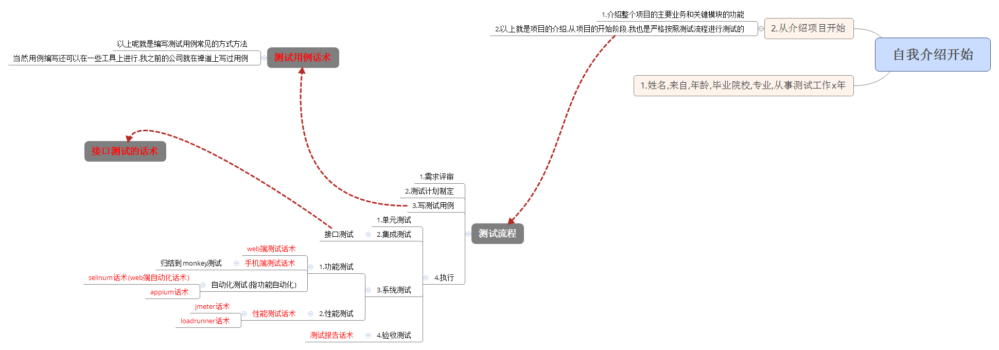</p>
<h2 id="02">02 测试用例<a class="headerlink" href="#02" title="Permanent link">&para;</a></h2>
<p>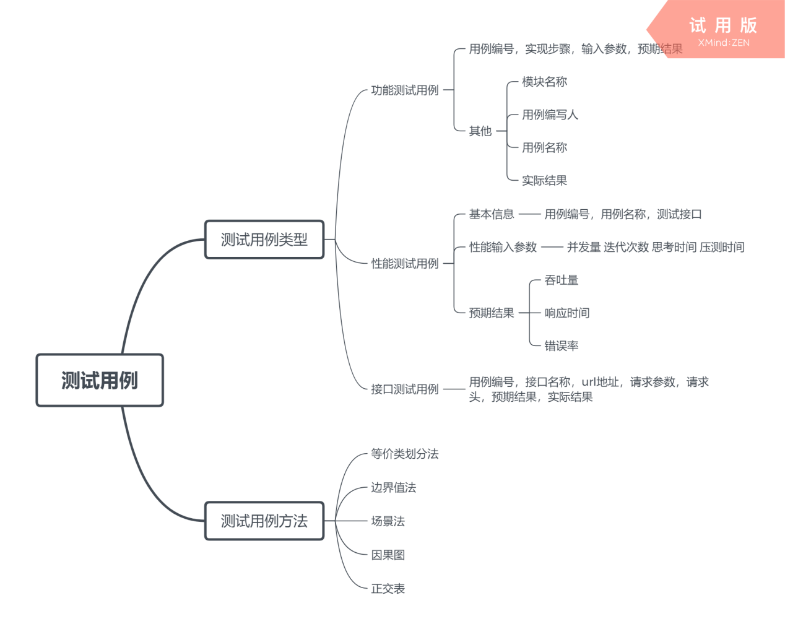</p>
<p>Q：说一下你对测试用例的理解？在工作中怎么取编写测试用例？</p>
<p>嗯，做测试，好多时间是在琢磨分析测试用例怎么去写，这个每个公司规范可能不太一样，但是大致思想是一致的。都是想要通过测试用例，把每一个分析到位，进行测试。</p>
<p>就拿我上家公司来说吧，我们的测试用例包括像测试编号，测试所属模块，测试步骤，预期结果，测试结果这些栏位，当然这些还可以在细分，比如我们有些时候还会根据模块差异，平台差异等设计其他测试用例规范形式。</p>
<p>测试用例编写的话，一般是根据产品需求来定的，比如一个注册功能，产品需求上需要验证哪些，用户名，密码，邮箱，等等有什么要求，根据这个产品效果图或者产品需求来定测试用例怎么去编写。当然还要考虑到普通用户使用软件的习惯，以及一些特殊情况和极端情况。</p>
<p>写测试用例，这个测试用例要有一定的代表性，针对性，当然需要有复现性，不能是我们测出的bug无法复现，这样没有意义。</p>
<p>对于测试常用的方法，一般有这么常用的几种，有等价类划分法，   就是一类信息，我们在测试的时候，只测试一种，没有必要所有的都进行测试。还有像边界值法，一般注册登录的时候，或者涉及到数学测试的时候，会用到。我项目中就用到了边界值测试法，比如需要上传学生成绩信息，做数据分析，学生成绩的测试用例，就牵扯到边界值法。还有一些场景法，设定不同的场景，不同场景就会有不同的操作。</p>
<p>嗯，这是写测试用例时我们常用到的测试方法。</p>
<p>当然，测试用例还需要注明软硬件环境，比如是mac和windows，是pc端还是移动端，这些环境信息。</p>
<p>我们写测试用例，上上家公司，一开始测试经理让我们使用excel来写，不过使用excel效率太低了，后来我们使用bug管理工具，禅道，可以在软件上写测试用例，也可以直接将测出的bug直接转成测试用例，效率上提高了不少。</p>
<p>当然，上边我所提的是功能测试，当然性能测试用例也不太一样，用例id，测试步骤，测试模块这块是一样的，但是性能测试用例里边我们一般还会包含，事务设置，前置条件等信息，事务设置，就是在做压测或者负载测试的时候，我们会设置一些事务，从xx开始到xx结束，叫做一个完整的事务，前置条件就是在执行这些测试，是否有什么必须的条件，比如是否要登录。</p>
<p>再就是设计测试场景，这块是性能测试特殊的地方。比如在用例中指定并发用户数，指定压力方式，是随机，还是一次启动，还是逐步递增，指定负载测试时间，是10分钟还是1小时，把这些信息也要包含到用例中。</p>
<p>还有就是期望结果，期望结果应该包含多项内容，比如事务成功率，CPU利用率，内存利用率，硬盘利用率，响应时间等信息，这些的预期结果都是跟我们的测试需求上相匹配的。</p>
<hr />
<h2 id="03">03 测试的种类<a class="headerlink" href="#03" title="Permanent link">&para;</a></h2>
<p>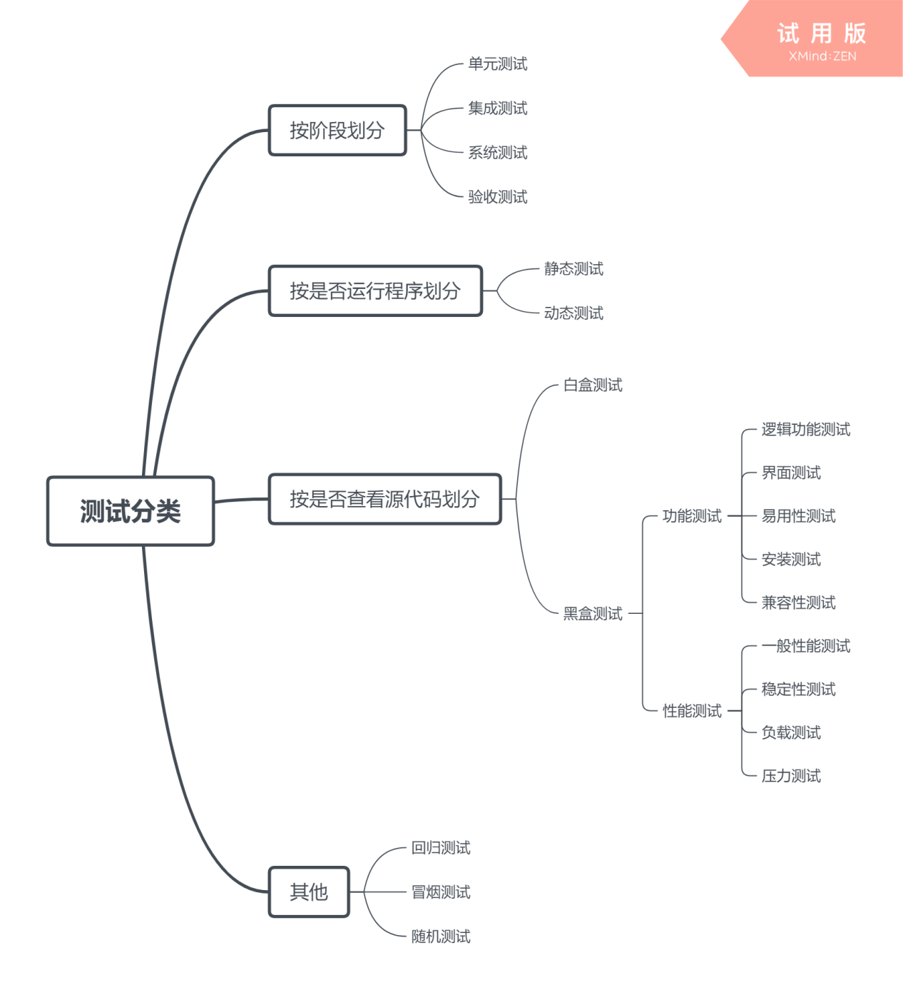</p>
<p>Q：测试分为哪些种类，具体展开讲一下</p>
<p>我理解的测试种类的话，就分为功能测试，性能测试和自动化测试。当然还有其他的一些名词，你比如说咱要是按照阶段来进行测试划分的话，又可以说分为单元测试，集成测试，系统测试，还有验收测试。又可以根据懂不懂代码，分为白盒测试和黑盒测试，还有一些其他的测试，比如回归测试，冒烟测试，还有随机测试。像这个测试种类可是太多了。</p>
<h3 id="31">3.1 功能测试<a class="headerlink" href="#31" title="Permanent link">&para;</a></h3>
<p>我就重点说一下这个功能测试吧，功能测试，我们主要是测试软件功能是否可用，当然功能测试也不是这么简单，我们要测试逻辑功能，就是这个操作是否符合正常人的逻辑思维，你比如说，我用智联招聘，就感觉它有一块功能做的不好，一般我们是先登录，没有账号的话才进行注册，而智联招聘，我进入到主界面，输入完信息准备登录，才发现默认是注册，这个就属于一块逻辑上的问题。当然问题还不算很大。还有界面测试，就是界面正常操作，是否都能够执行成功，比如注册能够执行成功，注册结束之后，能够跳转到登录界面，这个就是进行界面测试。还有就是测试这个软件是否容易使用，也就是易用型测试，如果不好用，用户操作不了，也可以算做一个bug。还有兼容性测试，比如我们测试Android手机上的应用，就经常有兼容性的问题，比如分辨率兼容问题，Android的App分辨率我们就需要使用多台不同尺寸分辨率的手机进行测试，还有性能兼容问题，咱们国内都对手机源代码进行了改动，同一款app，可能在华为上好使，在小米，锤子，oppo上不好使。这些都是功能测试的范围内容。</p>
<h3 id="32">3.2 性能测试<a class="headerlink" href="#32" title="Permanent link">&para;</a></h3>
<p>时间性能：软件的一个具体事务的响应时间。比如点击一个登陆按钮，到登录成功(失败)的反应时间，浏览器非常常见，ANR（Application not responding 应用程序无响应）</p>
<p>空间性能：软件运行时所消耗的系统资源，比如对内存和cpu的消耗</p>
<p>一般性能测试：软件正常运行，不向其施加任何压力的测试</p>
<p>稳定性测试：也叫可靠性测试，是指连续运行被测系统，检查系统运行时的稳定成都。</p>
<p>负载测试：让被测系统在其能够忍受的压力范围之内连续运行，来测试系统的稳定性。</p>
<p>压力测试：持续不断的给被测试的系统增加压力，直到被测试的系统压垮为止，用来测试系统所承受的最大压力。</p>
<h3 id="33">3.3 自动化测试<a class="headerlink" href="#33" title="Permanent link">&para;</a></h3>
<p>自动化测试：一般就需要使用脚本来进行测试，也可以叫做白盒测试，技术含量相对来说比较高，这个我也会。我会的语言是python，基本上python的代码基础我是掌握了的。比如python的变量和基本数据类型，输入输出语句，集合和元组操作，以及循环和条件判断操作，还有python中的字典和set集合操作，以及python中面向对象编程，异常，单元测试这些内容，比较熟悉。</p>
<p>自动化测试软件：selenium和appium这两个软件我也使用的比较熟悉，当然也算不上精通，基本的操作，写一些自动化测试脚本是没有问题的。</p>
<h3 id="34">3.4 静态测试和动态测试<a class="headerlink" href="#34" title="Permanent link">&para;</a></h3>
<p>静态测试：是指不实际运行被测试软件，而只是静态的检查程序代码、界面或者文档中可能存在的错误的过程。</p>
<p>动态测试：是指实际运行被测程序，输入相应的测试数据，检查实际输出结果和预期结果是否相符的过程。</p>
<h3 id="35">3.5 单元测试、继承测试、系统测试和验收测试<a class="headerlink" href="#35" title="Permanent link">&para;</a></h3>
<h4 id="351">3.5.1 单元测试<a class="headerlink" href="#351" title="Permanent link">&para;</a></h4>
<p>是指对软件中最小可测试单元进行检查和验证</p>
<p>单元测试当一段代码完成之后，是由白盒测试工程师或者开发人员自行测试，比如java中执行单元测试叫做junit测试。</p>
<p>目前大部分公司单元测试由开发人员简单编译和调试一下自己的程序，没有相应的单元测试计划。</p>
<p>单元测试方式：先静态地观察代码是否符合规范，然后动态地运行一下代码，检查运行的结果。</p>
<h4 id="352">3.5.2 集成测试<a class="headerlink" href="#352" title="Permanent link">&para;</a></h4>
<p>集成测试是单元测试的下一个阶段，是指将通过测试单元模块组装成系统或者子系统，再进行测试，重点测试不同模块的接口部分。</p>
<p>集成测试也是由白盒测试或者开发人员来完成。</p>
<h4 id="353">3.5.3 系统测试和验收测试<a class="headerlink" href="#353" title="Permanent link">&para;</a></h4>
<p>集成测试完成之后，就是系统测试和验收测试。</p>
<p>系统测试：指的是将整个软件系统看做一个1个整体进行测试，包括对功能、性能，以及软件所运行的软硬件环境进行测试。</p>
<p>系统测试由黑盒测试人员在整个系统集成完毕后进行测试，前期主要测试系统的功能是否满足需求，后期主要测试系统运行的性能是否满足需求，以及系统在不同的软硬件环境的兼容性等。</p>
<h2 id="36">3.6 回归测试、冒烟测试、随机测试<a class="headerlink" href="#36" title="Permanent link">&para;</a></h2>
<h3 id="361">3.6.1 回归测试<a class="headerlink" href="#361" title="Permanent link">&para;</a></h3>
<p>是指对软件的新版本进行测试时，重复执行上一个版本测试时的用例，比如在1.0版本中，有一个bug，到了2.0版本中，再重新测试1.0中这个bug</p>
<h3 id="362">3.6.2 冒烟测试<a class="headerlink" href="#362" title="Permanent link">&para;</a></h3>
<p>指对一个软件进行系统大规模的测试之前，先验证一下软件的基本功能是否实现，是否具备可测性。测试小组在正式测试一个新版本之前，先指派一两个测试人员测试一下软件的主要功能，如果没有实现，则打回开发组重新开发，这样做可以节省大量的时间成本和人力成本。</p>
<h3 id="363">3.6.3 随机测试<a class="headerlink" href="#363" title="Permanent link">&para;</a></h3>
<p>是指测试中所有的输入数据都是随机生成的，其目的是模拟用户的真实操作，并发现一些边缘性的错误。</p>
<hr />
<h1 id="04-web">04 Web应用测试方法<a class="headerlink" href="#04-web" title="Permanent link">&para;</a></h1>
<p>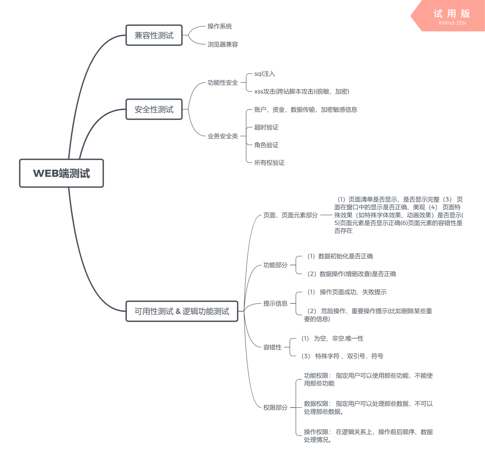</p>
<h2 id="41">4.1 兼容性测试<a class="headerlink" href="#41" title="Permanent link">&para;</a></h2>
<p>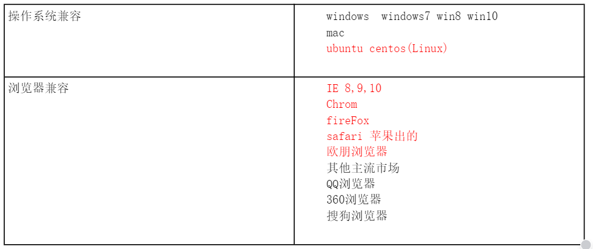</p>
<h2 id="42">4.2 安全性测试<a class="headerlink" href="#42" title="Permanent link">&para;</a></h2>
<p>常见的安全性测试：</p>
<ul>
<li>
<p>用户验证：登录密码验证、IP地址访问限制等</p>
</li>
<li>
<p>用户超时：登录超过30分钟，重新登录(安全设置，cookie过期时间30分钟)</p>
</li>
<li>
<p>用户权限管理：验证低级别用户是否具有了高级别用户的权限，各级别用户权限都得到了实现。</p>
</li>
<li>
<p>系统数据的保护：对例如系统文件、用户密码文件等进行隐藏、密码验证、内容加密、备份。</p>
</li>
</ul>
<p></p>
<h2 id="43">4.3 可用性测试 &amp; 逻辑功能测试<a class="headerlink" href="#43" title="Permanent link">&para;</a></h2>
<p>1）页面，页面元素部分</p>
<ul>
<li>
<p>页面清单是否显示，是否显示完整（</p>
</li>
<li>
<p>页面在窗口中的显示是否正确、美观</p>
</li>
<li>
<p>页面特殊效果（如特殊字体效果、动画效果）是否显示</p>
</li>
<li>
<p>页面元素是否显示正确</p>
</li>
<li>
<p>页面元素的容错性是否存在</p>
</li>
</ul>
<p>2）功能部分</p>
<ul>
<li>
<p>数据初始化是否正确</p>
</li>
<li>
<p>数据操作(增删改查)是否正确</p>
</li>
</ul>
<p>3）提示信息</p>
<ul>
<li>
<p>操作页面成功、失败提示 </p>
</li>
<li>
<p>危险操作、重要操作提示(比如删除某些重要的信息)</p>
</li>
</ul>
<p>4）容错性</p>
<ul>
<li>
<p>为空、非空，唯一性</p>
</li>
<li>
<p>特殊字符 、双引号，符号</p>
</li>
</ul>
<p>5）权限部分</p>
<ul>
<li>
<p>功能权限： 指定用户可以使用那些功能，不能使用那些功能</p>
</li>
<li>
<p>数据权限： 指定用户可以处理那些数据，不可以处理那些数据。</p>
</li>
<li>
<p>操作权限： 在逻辑关系上，操作前后顺序、数据处理情况。</p>
</li>
</ul>
<hr />
<h1 id="05">05 手机端测试<a class="headerlink" href="#05" title="Permanent link">&para;</a></h1>
<p>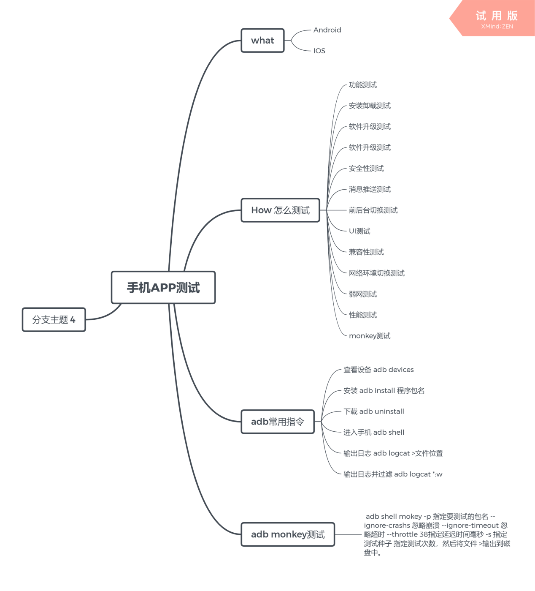</p>
<hr />
<h1 id="06">06 手机端测试的关注点？(测那些方面)<a class="headerlink" href="#06" title="Permanent link">&para;</a></h1>
<h3 id="611">6.1.1 介绍手机测试的概念架构<a class="headerlink" href="#611" title="Permanent link">&para;</a></h3>
<p>对于手机端测试，按照平台来分，分为Android和IOS两大主流系统</p>
<p>对于ios和Android，二者有区别，我就说一下我在测试这两款手机app的感受吧</p>
<p>Android开源导致碎片化比较严重，bug比较多，而IOS通常bug会少一些。</p>
<p>Android手机长按home建，会呼出应用列表和切换应用，右滑择会终止应用。</p>
<p>还有分辨率测试，Android手机分辨率有20多种，IOS较少一些</p>
<p>再就是手机操作系统，Android系统太多了，IOS较少，但是升级之后不能够降级，不过呢，发现了最近ios中boss直聘的一个bug</p>
<p>是有关于Boss直聘强更的一个bug，当我们点击手机APP端 Boss直聘 进入主页面弹出提示框“新增邮箱上传附件简历功能” 弹窗中有立即升级的链接，点击别的区域没有反应；</p>
<p>必须点击“立即升级”才会跳转到“App Store”若不升级，重新切换回Boss直聘界面，依旧提示“立即升级”全部退出依然如此。我继续说哈</p>
<p>按照目前技术架构的话，现在有一些原生的app架构，类似于Client Server架构，也有基于Html5的app，类似于pc机的BS(Broswer server)架构。手机测试和pc机类似，又有一些不同的地方。</p>
<p>当然除了手机，现在还有好多使用Android系统，比如酒店点餐的平板，银行对公或者对个人业务的业务平台，还有一些智能的穿戴设备，小米的手环，google 联想的智能眼镜，智能家居，电视盒子，这些都是在使用android系统，我之前最早的时候，就要测试过一个智能家居设备，测试的时候需要考虑蓝牙，wifi连接传输这块，也有好多要测试的内容。</p>
<h2 id="62-how">6.2 How<a class="headerlink" href="#62-how" title="Permanent link">&para;</a></h2>
<h3 id="621">6.2.1 功能测试<a class="headerlink" href="#621" title="Permanent link">&para;</a></h3>
<p>我就先来说一下功能测试吧，对于手机app来说，和我们测试web项目差不太多，也是各种测试方式需要考虑进来，比如说逻辑功能测试，现在移动端越来越火爆，大家用的软件也越来越多，对软件也越来越挑剔，现在公司在开发移动端的时候，肯定是有相应的需求文档和UI所设计的产品效果图，我们做逻辑功能测试，就是根据这些资料，当然也根据我们正常人的逻辑思维进行逻辑功能测试，就拿我上个项目来说，它就是一个移动端项目，在做逻辑功能测试的时候，我们要测试主页面，我的页面，商城页面这些功能是否合理。</p>
<h3 id="622">6.2.2 安装与卸载测试<a class="headerlink" href="#622" title="Permanent link">&para;</a></h3>
<p>软件安装后是否可以正常运行，安装过程中是否可以取消，安装空间不足时，是否有相应提示，是否可以卸载应用（可通过桌面卸载，也可以通过软件卸载。曾发现在IOS手机上有个应用安装时未完全安装，终止安装后，未完成安装的应用图标一直显示在手机上，并且无法成功删除），卸载是否支持取消功能，单击取消后软件卸载功能是否正常，卸载后文件是否全部删除所有的安装文件夹，从不同的应用市场下载进行安装测试，比如测试小米市场，华为市场，应用宝，安卓市场，安智市场的安装测试。</p>
<h3 id="623">6.2.3 软件升级测试<a class="headerlink" href="#623" title="Permanent link">&para;</a></h3>
<p>当客户端有新版本时，是否有更新提示，当版本为非强制升级版时，用户可以取消更新，老版本能正常使用，用户在下次启动app时，仍能出现更新提示；当版本为强制升级版时，当给出强制更新后用户没有做更新时，退出客户端，下次启动app时，仍出现强制升级提示，当然现在强更已经很少出现了。检查更新后各个功能是否能正常使用；在线跨版本升级后能否正常使用，当然现在主流的安装更新方式开始向热更新热部署方式转变，就是在用户不需要手动更新的情况下，完成版本的静默更新，这个技术是有难度的，需要看公司中程序员的技术能力还有就是是否有这样的产品需求。</p>
<h3 id="624">6.2.4 登录测试<a class="headerlink" href="#624" title="Permanent link">&para;</a></h3>
<p>对于登录测试，基本上每一款app都有登录注册功能，所以在测试App的时候，登录测试是必不可少的一项。</p>
<p>我们做登录测试的时候，往往包含这么些项，登录用户名和密码错误时，界面有提示信息</p>
<p>用户主动退出登陆后，下次进入app时，应该进入登陆界面</p>
<p>密码更改后，登录时是否做到了有效数据的校验，对于未登录状态时，一些页面的操作，是否做了控制</p>
<p>切换账号登录，检验登录的信息是否做到及时更新，对于多个端（web、iso、android等）进行操作时，确保数据库操作无误，且每个端可以及时看到数据的更新，一个账号只允许一台机器登陆的软件，需要账号登录多个手机时，是否将原用户踢下线，且能够给出提示信息，用户登录状态太久，session会过期，会出现“虽然是登录状态，系统会提示用户没有登陆”</p>
<h3 id="625">6.2.5 安全性测试——权限测试<a class="headerlink" href="#625" title="Permanent link">&para;</a></h3>
<p>对于手机权限，如果我们是刚开发不知名的app，权限这块尽量少一些，这些权限在安装的时候都必须用户同意。在Android 6.0之后，权限需要动态的申请，我们测试的时候，需要测试在使用到这些权限的时候，程序员是否做逻辑判断，用户同意权限应该怎么操作，不同意权限又应该怎么操作。</p>
<h3 id="626">6.2.6 消息推送测试<a class="headerlink" href="#626" title="Permanent link">&para;</a></h3>
<p>消息推送，是移动端的一大特色。我就说一下消息推送我们所做的这些方面吧，</p>
<p>未锁屏时，应用后台运行，消息推送是否可正常接收，未锁屏时，APP客户端使用过程中，可以收到消息提醒，且点击可查看。</p>
<p>锁屏时，手机消息栏是否可以接收到消息提醒。且点击可查看。点击后消息栏中消失。</p>
<p>当推送消息是针对登录用户的时候，需要检查收到的push与用户身份是否相符，没有错误的将其他人的消息推送过来</p>
<p>push推送消息是是否能有针对性的推送，如相应内容推送给相应用户（精准推送）</p>
<p>退出登录后，是否接受push推送（根据需求来）</p>
<h3 id="627">6.2.7 前后台切换测试<a class="headerlink" href="#627" title="Permanent link">&para;</a></h3>
<p>APP切换到后台，再回到APP，检查是否停留在上一次操作界面；检查功能及应用状态是否正常；程序是否崩溃，功能状态是否正常，尤其是对于从后台切换回前台数据有自动更新的时候</p>
<p>手机锁屏解屏后进入app注意是否会崩溃，功能状态是否正常</p>
<p>当APP使用过程中有电话进来中断后再切换到APP，功能状态是否正常</p>
<p>当关闭APP进程后，在开启APP，APP能否正常启动</p>
<p>对于有数据交换的页面，尤其是有视频图片之类的页面，每个页面都必须要进行前后台切换、锁屏的测试，这种页面最容易出现崩溃</p>
<h3 id="628-ui">6.2.8 UI测试<a class="headerlink" href="#628-ui" title="Permanent link">&para;</a></h3>
<p>确保产品UI符合产品经理制定的原型图与效果图</p>
<p>一般涉及界面（如菜单、对话框、窗口和其他可视控件）布局、风格、文字是否正确，页面是否美观，操作是否友好。</p>
<p>如：安装app后的加载页显示，分享页面的产品logo显示</p>
<h3 id="629">6.2.9 兼容性测试<a class="headerlink" href="#629" title="Permanent link">&para;</a></h3>
<p>我再说一下兼容性测试吧，兼容性测试主要考虑手机的版本，型号，分辨率，就像我说的，现在手机碎片化比较严重，各个版本，比如Android，从Android4.0到Android8.0的版本它是不一样的，然后现在各大手机厂商像华为，三星，小米，锤子，魅族，vivo这些厂商都修改android源代码，也是给我们增加和好多工作量，好多时候开发的软件在三星上没问题，但是华为，小米就不行。还有手机分辨率，现在主流的可能是1920<em>1080，但是还有好多其他分辨率，比如720</em>1280，还有一些更大分辨率的手机，都要考虑这些分辨率的兼容，不然用户视觉体验就不好。</p>
<p>兼容测试，公司中会买好多测试机来太让我们进行测试，一般是不同厂商的手机，当然还有第三方云测平台，比如testin还有腾讯wetest，就可以做兼容性测试。可以一次性测试100台测试机，同时会有相应的兼容报告，bug报告。</p>
<p>对于IOS，ISO版本有7.1.2、8.3、9.1等；能否适配各种屏幕尺寸。</p>
<h3 id="6210">6.2.10 网络环境测试<a class="headerlink" href="#6210" title="Permanent link">&para;</a></h3>
<p>测试2G、3G、4G、wifi、有网、无网、弱网情况下应用的运行</p>
<p>网络不好时，提交数据是否一直处理提交中，是否会有延迟，数据交换失败是否会有提醒</p>
<p>有网到无网再到有网环境时，数据是否可以自动恢复，正常加载</p>
<p>无网络时，各种提示信息是否友好，数据本地化是否正确（比如提示当前已断开网络，请检查网络设置；还有从wifi环境切换到4G环境提示是否启用4G网络，会产生扣费。</p>
<h3 id="6211">6.2.11 性能测试<a class="headerlink" href="#6211" title="Permanent link">&para;</a></h3>
<p>对于性能测试，（eclipse和Android studio中本身有检测cpu和内存的工具，也有检测手机内存泄漏的工具）靠工具来测试手机cpu占用，内存占用，电池温度等，以及测试我们的app在后台持续运行的流量消耗和电量消耗问题。</p>
<h3 id="6212-mokey">6.2.12 mokey测试<a class="headerlink" href="#6212-mokey" title="Permanent link">&para;</a></h3>
<p>对于手机测试，除了我们一些常规的功能测试，我们还会做压力测试，比如对于Android手机，我会使用adb指令进行一些相应的操作，比如通过adb查看设置，进入设备，抓取log，我们测试的时候，会使用adb logcat所抓出来的log日志存到电脑，发给开发，方便他们快速解决bug。</p>
<p>另外，我还会使用monkey对app进行测试，可以使用monkey对app做压力测试，主要就是测试操作app的时候，程序是否会崩溃。</p>
<p>我们使用adb shell monkey 指定对应的app，执行要测试的次数，指定要触摸的比率，超时时间和忽略崩溃信息，就可以执行测试，将测试log存到某个位置，然后把测试出的bug 日志发送给开发。</p>
<p>我就简单的说一下测试的指令吧，比如我上边所说的逻辑，我们用 adb shell mokey -p 指定要测试的包名 --ignore-crashs 忽略崩溃 --ignore-timeout 忽略超时 --throttle 38指定延迟时间毫秒 -s 指定测试种子 指定测试次数，然后将文件 &gt;输出到磁盘中。</p>
<h3 id="6213-monkey">6.2.13 Monkey测试的优点和缺点？<a class="headerlink" href="#6213-monkey" title="Permanent link">&para;</a></h3>
<p>优点：</p>
<ul>
<li>
<p>使用简单</p>
</li>
<li>
<p>节省了重复性操作的时间</p>
</li>
<li>
<p>随机输入可能会发现一些平常意想不到的缺陷。</p>
</li>
<li>
<p>Monkey虽然可以根据一个指定的命令脚本发送按键消息，但其不支持条件判断，也不支持读取待测界面的信息来执行验证操作。</p>
</li>
<li>
<p>可对Monkey Test的对象，事件数量，类型，频率等进行设置。</p>
</li>
</ul>
<p>缺点：</p>
<ul>
<li>测试的对象仅为应用程序包，有一定的局限性。</li>
</ul>
<h3 id="6214-monky">6.2.14 Monky测试使用的事件流数据流是随机的，不能进行自定义。<a class="headerlink" href="#6214-monky" title="Permanent link">&para;</a></h3>
<p>首先呢 我们根据需求文档会使用xmind把各个模块的功能点划分出来，形成三级甚至四级列表，然后进行分模块</p>
<p>我们划分模块是领导决定的，秉承低耦合的原则，从首页几个大模块入手，每个人负责该模块的一级二级...模块，还要负责点击去页面的一级二级...模块，然后进行测试</p>
<p>每个人把各自负责的模块测试完成，我们组的每个人还要把整个系统进行通测一遍</p>
<hr />
<h1 id="07-appweb">07 APP测试与web测试的区别<a class="headerlink" href="#07-appweb" title="Permanent link">&para;</a></h1>
<p>1）相同点</p>
<ul>
<li>
<p>同样的测试用例设计方法；</p>
</li>
<li>
<p>同样的测试方法；都会依据原型图或效果图检查UI；</p>
</li>
<li>
<p>测试页面载入和翻页的速度、登录时长、内存是否溢出等；</p>
</li>
<li>
<p>测试应用系统的稳定性</p>
</li>
</ul>
<p>2）不同点</p>
<p>app的中断测试：来电中断、短信中断、蓝牙、闹钟、拔插数据线、手机锁定、手机断电、手机问题（系统死机重启）</p>
<p>app的安装卸载：全新安装、升级安装、第三方工具安装、第三方工具卸载、直接卸载删除、消息推送测试、手机授权测试、前后台切换、网络环境（wifi/2G/3G/4G/无网络）</p>
<p>兼容性测试：web项目考虑不同浏览器的兼容；app需要考虑手机不同操作系统、不同机型、不同屏幕等</p>
<p>web自动化测试工具较常用：selenium，而手机自动化monkey、monkeyrunner</p>
<p>\4 app测试平台：百度云测、testin云测--------</p>
<hr />
<h1 id="08">08 接口测试话术<a class="headerlink" href="#08" title="Permanent link">&para;</a></h1>
<p>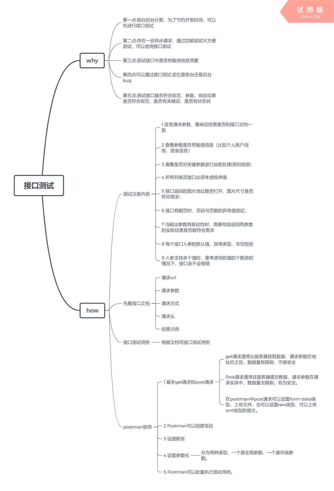</p>
<h2 id="81-why">8.1 Why<a class="headerlink" href="#81-why" title="Permanent link">&para;</a></h2>
<p>先介绍为什么做接口测试！！</p>
<p>我们都知道，接口其实就是前端页面或APP等调用与后端做交互用的，所以好多人都会问，我功能测试都测好了，为什么还要测接口呢？OK，在回答这个问题之前，先举个栗子：</p>
<p>比如测试用户注册功能，规定用户名为6~18个字符，包含字母（区分大小写）、数字、下划线。首先功能测试时肯定会对用户名规则进行测试时，比如输入20个字符、输入特殊字符等，但这些可能只是在前端做了校验，后端可能没做校验，如果有人通过抓包绕过前端校验直接发送到后端怎么办呢？试想一下，如果用户名和密码未在后端做校验，而有人又绕过前端校验的话，那用户名和密码不就可以随便输了吗？如果是登录可能会通过SQL注入等手段来随意登录，甚至可以获取管理员权限，那这样不是很恐怖？</p>
<p>对于接口测试，可以做这些操作。</p>
<p>第一点：前台后台分离，为了节约开发时间，可以先进行接口测试，可以发现页面上发现不了的bug</p>
<p>第二点：测试接口中是否有敏感信息泄露</p>
<p>第三点可以通过接口测试：定位是前台还是后台bug</p>
<p>第四点：测试接口是否符合规范，参数，响应结果是否符合规范，是否有关键词，是否有状态码</p>
<p>第五点：可以检查系统的异常处理能力。</p>
<p>第六点：前端随便变，接口测试好了，后台不用变。</p>
<h2 id="82-how">8.2 How<a class="headerlink" href="#82-how" title="Permanent link">&para;</a></h2>
<p>先看接口文档</p>
<p>接口测试，根据接口文档，进行测试，包含接口的url，请求参数，响应结果。</p>
<p>如果没有接口文档，就自己抓包。（在这里埋点，等待面试官问）</p>
<p>我们在测试的时候，跟测试有页面的应用一样，也是使用等价类划分法，边界值这些方法来测试，在使用接口测试的时候，只需要调整请求参数就可以。</p>
<p>接口测试，测试的时候这几个方面：</p>
<p>改变请求参数，看响应结果是否和接口文档一致</p>
<p>查看参数是否有敏感信息（比如个人账户信息，资金信息）</p>
<p>查看是否对关键参数进行加密处理(密码信息)</p>
<p>所有列表页接口必须考虑排序值</p>
<p>接口返回的图片地址能否打开，图片尺寸是否符合需求；</p>
<p>接口有翻页时，页码与页数的异常值测试；</p>
<p>当输出参数有联动性时，需要校验返回两参数的实际结果是否都符合需求</p>
<p>每个接口入参的默认值、异常类型、非空校验</p>
<p>入参支持多个值时，要考虑传的值的个数多的情况下，接口会不会报错</p>
<p>实际落地：</p>
<p>我们做接口测试，一般是使用postman，我就介绍一下postman具体的用法吧。</p>
<p>第一点：</p>
<p>基本的请求测试：在postman中有简单的get请求和post请求。设置url，设置请求参数，查看响应结果。</p>
<p>对于get请求和post请求区别：</p>
<p>get请求通常从服务器获取数据，请求参数在地址栏之后，数据量有限制，不够安全</p>
<p>Post请求通常往服务器提交数据，请求参数在请求实体中，数据量无限制，较为安全。</p>
<p>在postman中post请求可以设置form-data类型，上传文件，也可以设置raw类型，可以上传xml类型的报文。</p>
<p>第二点：</p>
<p>Postman可以创建项目，因为实际测试中，会有好多请求。可以通过创建项目管理请求，也可以创建folder，用来管理模块。</p>
<p>第三点：</p>
<p>Postman可以设置断言，可以进行参数化。</p>
<p>设置断言，需要在响应的test中去判断响应内容。</p>
<p>设置参数化，分为两种类型，一个是全局参数，一个是环境参数。</p>
<p>第四点：</p>
<p>Postman可以批量执行测试用例。</p>
<hr />
<h1 id="09">09 抓包测试<a class="headerlink" href="#09" title="Permanent link">&para;</a></h1>
<p>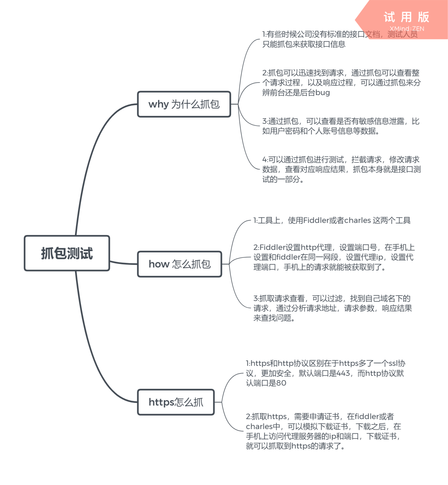</p>
<p>Why为什么进行抓包测试?</p>
<p>1：有些时候公司没有标准的接口文档，测试人员只能抓包来获取接口信息</p>
<p>2：抓包可以迅速找到请求，通过抓包可以查看整个请求过程，以及响应过程，可以通过抓包来分辨前台还是后台bug</p>
<p>3：通过抓包，可以查看是否有敏感信息泄露，比如用户密码和个人账号信息等数据。</p>
<p>3：可以通过抓包进行测试，拦截请求，修改请求数据，查看对应响应结果，抓包本身就是接口测试的一部分。</p>
<p>How 怎么进行抓包?</p>
<p>1：工具上，使用Fiddler或者charles 这两个工具</p>
<p>2：Fiddler设置http代理，设置端口号，在手机上设置和fiddler在同一网段，设置代理ip，设置代理端口，手机上的请求就能被获取到了。</p>
<p>3：抓取请求查看，可以过滤，找到自己域名下的请求，通过分析请求地址，请求参数，响应结果来查找问题。</p>
<p>https包怎么抓?</p>
<p>1：https和http协议区别在于https多了一个ssl协议，更加安全，默认端口是443，而http协议默认端口是80</p>
<p>2：抓取https，需要申请证书，在fiddler或者charles中，可以模拟下载证书，下载之后，在手机上访问代理服务器的ip和端口，下载证书，就可以抓取到https的请求了。</p>
<hr />
<h1 id="10">10 性能测试话术<a class="headerlink" href="#10" title="Permanent link">&para;</a></h1>
<h2 id="101-why">10.1 Why 为什么进行性能测试?<a class="headerlink" href="#101-why" title="Permanent link">&para;</a></h2>
<p>对于我们测试，一个系统如果仅仅通过功能测试就发布出去，是很危险的，也是不允许的。系统必须通过性能测试，当然还要有安全性测试，兼容性测试等，才能够对外发布。</p>
<p>另外对于性能测试，并不是简单的描述为系统性能好，反应速度快，就行了，这种描述比较含糊，通常我们测试一个系统，项目经理或者产品经理都会提出这个系统的性能需求，比如系统在正常负载下必须3秒内做出响应，一分钟能够接收至少50个请求，会提出比较明确的需求，当然，有的项目经理不提，那我们的测试经理也应该去问，或者定出性能需求来。</p>
<p>一般情况下，性能需求包含这么几个方面：</p>
<p>比如：我们的性能需求是，30个在线用户按照正常操作速度访问网上购物系统的下订单功能，下订单交易的成功率是100%，而且90%的下订单请求响应时间不超过5S，当并发在线用户数达到100个时，下订单交易的成功率大于98%，其中90%的在线用户的请求响应时间不大于用户的最大容忍时间10S。</p>
<h2 id="102-how">10.2 How<a class="headerlink" href="#102-how" title="Permanent link">&para;</a></h2>
<p>10.2.1 第一步，确定关键业务，关键路径。</p>
<p>我们做负载测试，并不是对所有的业务，界面和接口做负载测试，这样工作量太大，通常我们会寻找关键任务，也就是找到用户最常用的功能模块进行负载测试。比如对一个网站，首页是用户访问必经之路，最起码是用户访问频率最高的页面之一，再就是对一个电商网站，99%的客户只是搜索商品，只有1%的客户将真正购买，商品搜索和列表显示等功能是用户经常用到的，这块数据库的操作有可能就是性能的瓶颈。</p>
<p>10.2.2 第二步： 确定测试的关键数据。比如并发用户数，思考时间，循环次数，用户启动方式这些内容。</p>
<p>对于并发用户数，通常我们是有一个限值，比如我们这个旅游的项目，我们的日活量是10w用户，峰值时间段的日活是3w，通常我们设置峰值时间段用户量的10%就足够了，那我们会设置3000并发。</p>
<p>还有就是模拟思考时间，也就是用户发出请求之间的间隔时间。用户在进行操作的时候，总是有思考，有停顿，这个就是思考时间，这个我们可以模拟出来，在相同的并发用户数的情况下，每秒发出一个请求和10秒发出一个请求，负载差别是很大的。</p>
<p>另外就是 循环次数或者压力测试的持续时间，在测试的时候，我们不能测试一次就停止了，通常会测试一段时间，来看我们系统的稳定性。</p>
<p>我们公司通常会在并发测试的时候，设置持续时间2个小时左右。</p>
<p>当然还有就是我们可以设置用户加载的方式，这个在Jmeter中可以用一个场景控制插件搞定。在loadrunner中，这个场景设置也更简单。直接设置就行。比如一次加载，就是一次性加载某个数量的虚拟用户(virtual user)，比如有的网站在早晨上班的时候，访问比较频繁，像智联招聘这样的网站就是，我们就可以设置一次性加载。当然通常我们压测，递增类型的压力测试会多一些，这种方式比较容易找到系统的瓶颈点。</p>
<p>10.2.3 第三步，准备测试环境，完成脚本录制或者测试脚本开发。</p>
<p>对于测试环境的准备，每个工具是不同的，但是基本原理类似，如果在测试环境下边测试，我们会搭建测试环境。基本的Linux操作，和环境配置这些我都熟。比如我们会搭建jdk，搭建mysql，搭建tomcat环境。搭建起来就可以通过测试环境访问我们的项目。当然有些时候会在线上环境上边进行压测。这样数据会准确一些。</p>
<p>再就是录制脚本，录制脚本在loadRunner中可以直接录制。在Jmeter中可以使用代理方式或者badboy这种软件进行录制。当然不是必须录制，jmeter中我们可以逐个添加要测试的接口地址。loadrunner中也可稍微修改代码，来完成这些工作。</p>
<p>10.2.4 第四步，执行测试，观察或监控输出参数，比如数据吞吐量，响应时间，资源占有率等。</p>
<p>对于输出参数，就是我们要监控的数据，一般情况下，会监控这些参数。</p>
<p>比如TPS还有RT这样的关键数据，数据传输的吞吐量，内存和cpu使用率。还有错误率，这些我们都要监测，通过监测这些数据，才对于这些参数，普通的数据，我们在使用jmeter和loadrunner可以监测到。对于cpu和内存，也有相应的软件，比如nmon可以监测到。</p>
<p>10.2.5 第五步，对测试结果进行分析，分析性能问题。</p>
<p>当测试完成之后，很重要的一点，就是分析测试结果。分析测试结果，通常也是分析tps，响应时间，cpu，内存这些数据。通过分析这些数据来查找原因。</p>
<p>对于性能问题的点，挺多的。我们通常从这么几个角度区分析问题。</p>
<p>第一个，最好分析的肯定是硬件问题，比如cpu，内存，磁盘I/O方面的问题，比如，我们cpu很容易到80%，内存也占有率很高，或者虚拟内存的交换率很高，磁盘IO繁忙率过高。这些很有可能是服务器硬件问题。稍微好分析一些。</p>
<p>第二个，中间件的问题，比如tomcat/weblogic这种服务器中间件，出现问题，往往是参数配置的不合理。</p>
<p>第三个，还有就是sql配置或者慢SQL，sql数据库配置，比如连接池的大小配置不合理。另外就是程序员写的SQL有问题，这些也能测试出来。比如该创建索引的时候，没有创建，或者是表和表之间的连接方式不好，都有可能导致慢SQL</p>
<p>第四个，如果开发时java开发，有可能JVM配置不合理。因为jvm中有垃圾回收机制，逻辑不好，有可能导致回收不及时。</p>
<p>当然，还会有开发逻辑问题，比如逻辑过于复杂，算法没有优化，都有可能导致性能瓶颈。</p>
<p>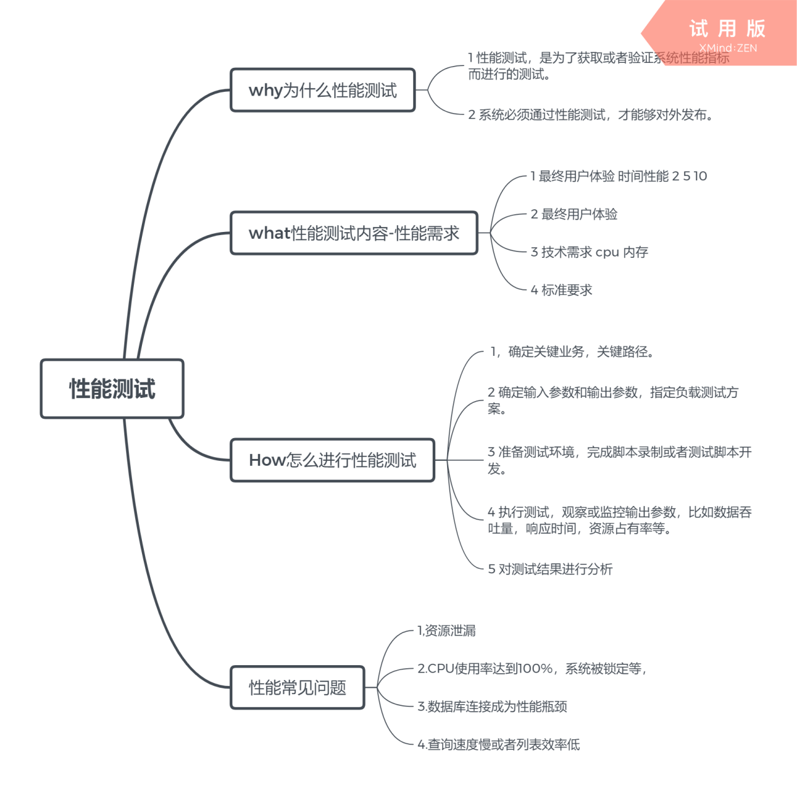</p>
<hr />
<h1 id="11-jmeter">11 Jmeter<a class="headerlink" href="#11-jmeter" title="Permanent link">&para;</a></h1>
<p>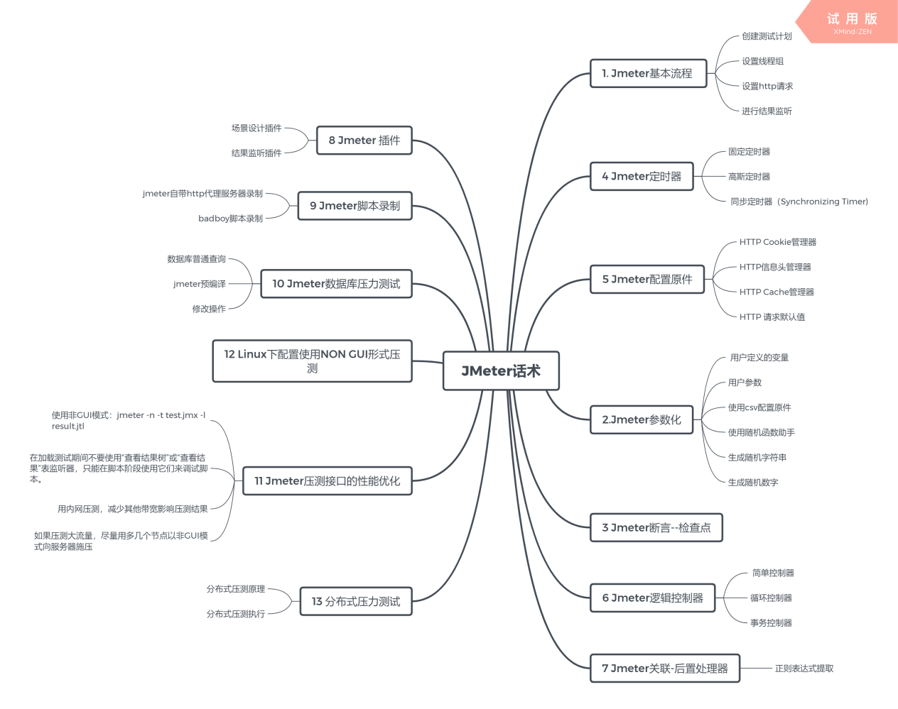</p>
<h2 id="111-jmeter-what">11.1 Jmeter-What<a class="headerlink" href="#111-jmeter-what" title="Permanent link">&para;</a></h2>
<p>一般情况下，我们提压力测试，通常指是指负载测试和压力测试.</p>
<p>我们做压力测试，基本上会使用到工具进行测试，我常用的工具，一个是jmeter，另外一个是loadRunner。</p>
<p>我先介绍一下jmeter吧，jmeter是Apache组织开发的基于java的压力测试工具，支持接口测试，压力测试，还可以做录制回放操作，操作比较简便。</p>
<h2 id="112-jmeter-how">11.2 Jmeter-How<a class="headerlink" href="#112-jmeter-how" title="Permanent link">&para;</a></h2>
<h3 id="1121">11.2.1 整体流程<a class="headerlink" href="#1121" title="Permanent link">&para;</a></h3>
<p>我先说一下JMeter的操作的整体流程吧，我们测试的时候，通常是创建一个线程组，指定并发的线程数量，然后指定要测试的接口，创建相应的监听器，比如表格结果，结果树和聚合报告信息，通过监听器来监听测试是否通过或者接口是否存在什么问题</p>
<p>其中在结果树中可以监测到整体的请求信息，就拿Http请求这种来讲，其实就是整个http协议的所有信息，包括请求头，请求参数，请求路径，还有响应头，响应结果等信息。</p>
<p>对于表格查看结果，可以看到每个请求的简单信息，本次请求的时间，以及平均的时间。</p>
<p>在聚合报告中，我们就可以看到整体的信息了。比如可以看到平均响应时间，90%Line 也就是90%的用户请求低于的时间。还有吞吐量 TPS，还有错误率，还有用流量来计算的吞吐量。这些都可以看到。通常，聚合报告就是反应整体的数据。</p>
<h3 id="1122-jmeter">11.2.2 Jmeter参数化<a class="headerlink" href="#1122-jmeter" title="Permanent link">&para;</a></h3>
<p>做压力测试时，我们经常需要替换参数，在Jmeter中，有多种参数化的形式。可以在测试计划中设置全局参数，可以设置用户参数，还可以在前置处理器中设置用户参数。在进行多线程并发的时候，如果需要多个参数，可以使用csv配置元件。比如做登陆操作，后台有可能会限制一个用户不能重复登陆多次，如果演示登陆的并发操作，可以使用Jmeter中csv配置元件，将用户信息导出来，放到文件中，就可以让线程共享这些数据。另外，对于一些随机变化的参数，可以使用Jmeter中的函数助手，生成随机函数，进行参数化测试。比如注册这样的操作，用户名要求唯一的，那就可以使用随机函数来模拟出来。</p>
<h3 id="1123-jmeter-">11.2.3 Jmeter断言-检查点<a class="headerlink" href="#1123-jmeter-" title="Permanent link">&para;</a></h3>
<p>在测试中，断言操作经常用到，jmeter的断言操作可以在请求后边设置一个断言结果，判断响应结果或者是响应状态码是否和预期的一致。</p>
<h3 id="1124-jmeter">11.2.4 Jmeter逻辑控制器<a class="headerlink" href="#1124-jmeter" title="Permanent link">&para;</a></h3>
<p>在Jmeter中，逻辑控制器的应用比较广泛，我们可以把一组操作放到简答控制器中，用来声明范围。也可以设置循环控制器，比如我们注册1次，登陆10次，就可以使用循环控制器。还有事务控制器，对于一个完整的事务，可以使用事务控制器来控制。</p>
<h3 id="1125-jmeter">11.2.5 Jmeter定时器<a class="headerlink" href="#1125-jmeter" title="Permanent link">&para;</a></h3>
<p>在Jmeter中定时器类型也比较多，我们会经常用到固定定时器，可以设置启动线程组的延迟时间是固定的。</p>
<p>还有高斯定时器，这种时间是可以设置随机值。另外，还有同步定时器，同步定时器可以用来做集合点，比如设置某个线程数，等并发到了该线程值的时候，才开始执行并发任务。</p>
<h3 id="1126-jmeter">11.2.6 Jmeter后置处理器<a class="headerlink" href="#1126-jmeter" title="Permanent link">&para;</a></h3>
<p>对于Jmeter后置处理器，我们常用到的是正则表达式提取器，可以用来提取上一个请求的响应结果，用在下一个请求中。比如项目中会有条目展示，如果我们想要继续查看详情，就需要提取条目id，用来做下一个请求。这里还可以用到foreach循环控制器来完成。</p>
<h3 id="1127-jmeter">11.2.7 Jmeter插件<a class="headerlink" href="#1127-jmeter" title="Permanent link">&para;</a></h3>
<p>对于Jmeter插件，常用的有场景设计插件，这个还是非常不错的一个功能。我们创建线程的时候，会设置线程组，而线程组太死板，不灵活。可以安装场景控制的插件，比如一开始延迟启动多少线程，如何递增启动线程，线程总数多少，总的测试时间多长，都可以使用场景控制插件来完成。</p>
<p>对于结果监听，结果树，表格，聚合报告都不够直观，我们可以通过安装图表插件来进行结果收集。看起来更加直观一些。比如可以获取到每秒事务量的图表，获取到平均响应时间的图表，都比较人性化。</p>
<p>这里有一点需要注意，就是监测服务器数据的时候，需要在服务器上启动一个插件，serverAgent，才能看到服务器的cpu和内存等数据。</p>
<h3 id="1128-jmeter">11.2.8 Jmeter脚本录制<a class="headerlink" href="#1128-jmeter" title="Permanent link">&para;</a></h3>
<p>对于Jmeter脚本录制，我掌握的有两种方式，第一，可以使用Jmeter内置的http代理服务器录制脚本，这种配置方便，但是会录制无用信息。不过好处式可以录制手机端的请求。</p>
<p>也可以使用第三方工具，badboy录制，这种录制相对人性化一些，也会过滤掉一些请求，比如jpg，css等。</p>
<h3 id="1129-jmeter">11.2.9 Jmeter数据库压力测试<a class="headerlink" href="#1129-jmeter" title="Permanent link">&para;</a></h3>
<p>有些时候，还会用到Jmeter去压测数据库，当然我们不会随便压测数据库。一般是当我们压测接口的时候，发现某个接口性能比较差，再进一步判定问题的时候，会压测数据库。</p>
<p>压测数据库，需要配置驱动，需要设置连接池大小，需要使用sql去操作数据库。如果我们想要看具体的哪条sql问题的话，还需要从开发那里拿到具体的sql进行压测。</p>
<h3 id="11210-non-gui">11.2.10 NON GUI形式测试<a class="headerlink" href="#11210-non-gui" title="Permanent link">&para;</a></h3>
<p>所谓non GUI，就是我们不需要通过页面进行测试，这个也是我们推荐的测试方式，会提高测试机性能。或者在linux上，我们也没法打开图形化页面，就可以使用NON GUI形式的指定进行。</p>
<p>可以指定脚本，可以指定生成jtl文件的位置，还可以生成html报告文档。</p>
<p>Jmeter -n -t xxx.jmx(脚本文件) -l xx.jtl(生成结果文件) -e -o xxx.html</p>
<h3 id="11211-jmeter">11.2.11 Jmeter分布式压力测试<a class="headerlink" href="#11211-jmeter" title="Permanent link">&para;</a></h3>
<p>在进行压测的时候，如果我们进行大并发的压测，往往一台测试机是达不到这么高的并发量的。那就可以使用分布式压测方式，设置一台控制器，然后几台压力机，咱们通常叫“肉鸡”，进行压测，这种压测也并不复杂，只需要做一些简单配置。</p>
<p>比如在肉鸡身上配置连接的端口，配置启动jmeter-server，就可以被连接测试了。在控制机master上我们，关联上肉鸡的ip和端口，就可以控制肉鸡进行分布式压力测试了。</p>
<hr />
<h1 id="12-loadrunner">12 LoadRunner<a class="headerlink" href="#12-loadrunner" title="Permanent link">&para;</a></h1>
<p>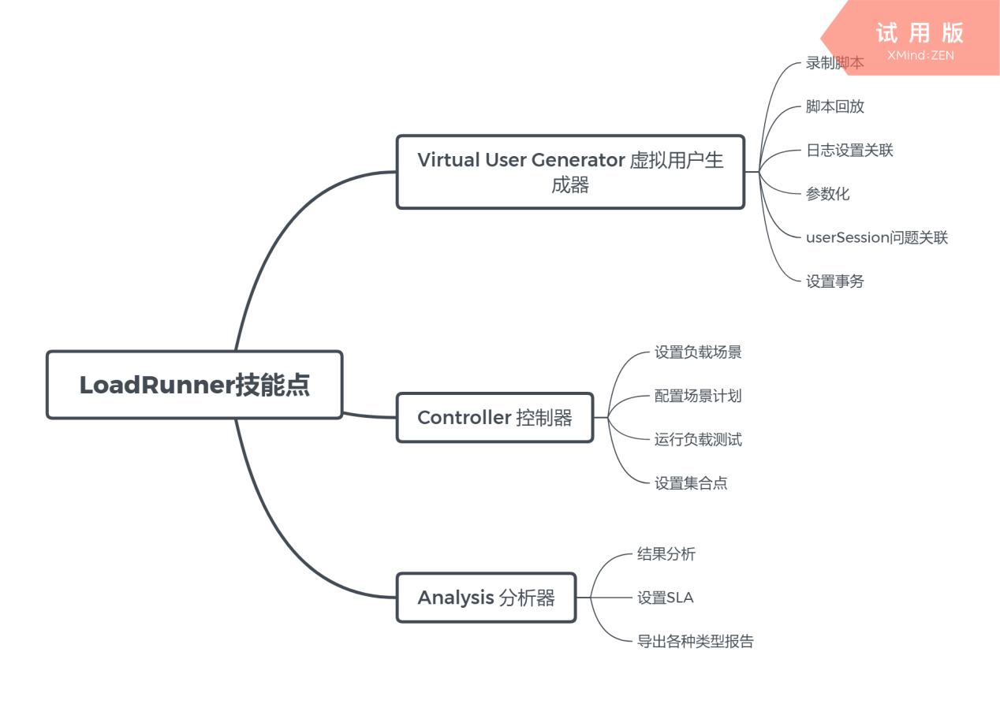</p>
<p>loadruner是一种有预测系统行为和性能的负载测试工具，相对Jmeter而言，loadrunner是一个稍重量级的测试工具，功能比Jmeter强大很多。</p>
<h2 id="121-loadrunner-how">12.1 LoadRunner-How<a class="headerlink" href="#121-loadrunner-how" title="Permanent link">&para;</a></h2>
<p>对于loadrunner的使用，主要分为这几个方面，一个是虚拟用户生成器，一个是Controller，还有一个分析器。我就先说一下虚拟用户生成器把，我一般管它叫做 VUG virtual User Generator</p>
<h3 id="1211-vug">12.1.1 VUG<a class="headerlink" href="#1211-vug" title="Permanent link">&para;</a></h3>
<p>VUG会帮我们创建虚拟用户脚本，通过录制和回放的原则进行工作，当我们完成对测试软件的业务流程操作之后，Vug会记录操作，按照每一步骤，翻译成脚本，我们从而可以执行脚本，进行模拟操作。</p>
<p>并且，loadRunner在脚本回放，可以做好多设置，比如设置运行次数，设置两次脚本执行的中间间隔，设置停顿时间，还可以log级别信息。</p>
<p>在执行loadRunner脚本录制的时候，有一个比较重要的问题需要注意，就是用户会话问题，有些模块，在测试的时候，会生成一个会话id，比如登录功能，当用户登录成功之后，会为用户生成一个唯一的session ID，用户后续的操作，都是基于这个session ID，那我们如果使用loadRunner录制时所生成的那个sessionID，后续的操作就会报错。LoadRunner在执行回放的时候，可以设置值得关联，将session ID设置成动态的，当回访脚本，会使用最新的session ID，来避免这个问题。</p>
<h3 id="1212-controller">12.1.2 Controller<a class="headerlink" href="#1212-controller" title="Permanent link">&para;</a></h3>
<p>我再来说一下loadRunner中的Controller组件操作，controller主要是用于创建负载测试场景，我们可以模拟多个用户并发执行vug录制的脚本操作，并且controller可以对每个用户的操作都做个性化的设置，比如有的用户使用goole浏览器，有的用户使用ie浏览器，不同的用户访问频率，间隔都不一致都操作，都可以通过controller模拟出来。</p>
<p>Controller在操作的时候，可以指定要进行负载测试的脚本，可以指定设置虚拟用户的场景，可以在设计板块中指定虚拟用户的个数，以及虚拟用户启动的方式，比如一次全部启动，或者逐渐启动方式</p>
<p>设置启动的时候，需要设置负载发生器，主要需要关联要测试的web项目的服务器位置，才能连接上，想要检测服务器，需要点击服务器资源，关联服务器ip，这样就建立了对服务器的监测，服务器的状态信息，就可以在此刻收集得到。</p>
<p>在运行的过程中，可以通过运行界面试图，监测到vuser运行的场景，事务响应时间，以及每秒点击次数，都可以在controller中统计出来。另外，还可以监测到吞吐量，也就是虚拟用户从服务器在任意一秒中接收到的bytes(字节)总量等信息。</p>
<p>另外，在controller中还可以设置单个用户停止，或者是查看单个用户运行的时候的运行日志信息。这个也是loadRunner做的比较细致的地方。</p>
<h3 id="1213-analysis">12.1.3 Analysis<a class="headerlink" href="#1213-analysis" title="Permanent link">&para;</a></h3>
<p>对于LoadRunner，VUG主要是完成录制，脚本生成，回放功能，Controller主要有设计，控制，对于我们测试完的数据，还需要做一个分析，而loadRunner也提供了一个分析的工具，Analysis，在Analysis中，可以查看摘要报告，事务总量，事务平均响应时间，吞吐量，和每秒响应数量等信息。</p>
<p>除了以上信息，还可以在Analysis中分析SLA，也就是服务水平指标，在Controller中或者Analysis中可以设置对应的指标，loadRunner会将事务的平均响应时间和目标对比，如果响应时间超过了临界值，可以在analysis中查看到问题，进行问题分析。</p>
<p>另外，Analysis还可以将测试报告导出，提取出来，发给程序员。</p>
<h2 id="122-loadrunner">12.2 Loadrunner测试流程步骤<a class="headerlink" href="#122-loadrunner" title="Permanent link">&para;</a></h2>
<p>第一步：制定测试计划</p>
<p>1.分析被测应用</p>
<p>2.确定测试目标</p>
<p>3.设计测试</p>
<p>第二步：创建测试脚本</p>
<p>1.明确通信协议（了解系统用到的通信协议）</p>
<p>2.录制测试脚本</p>
<p>3.试运行脚本</p>
<p>4.保存脚本</p>
<p>第三步：创建测试场景（目的是实现真实的负载，让一台或多台计算机模拟用户，同时执行脚本，对被测系统进行压力测试）</p>
<p>1.选择场景类型：手动场景、目标场景</p>
<p>手动场景：测试人员来设置虚拟用户的数量，比如对系统要进行一百个用户并发的测试，只 需要把用户数设置为100</p>
<p>目标场景：由测试人员设置要达到的性能目标，比如每秒钟的点击量要达到200，只要设定目标就可以</p>
<p>2.设置场景参数：组名称、脚本的路径、虚拟用户数、负载发生器</p>
<p>第四步：运行测试场景</p>
<p>第五步：监控测试场景</p>
<p>第六步：分析测试结果</p>
<hr />
<h1 id="13-selenium">13  介绍一下Selenium<a class="headerlink" href="#13-selenium" title="Permanent link">&para;</a></h1>
<h2 id="131-what">13.1 What<a class="headerlink" href="#131-what" title="Permanent link">&para;</a></h2>
<p>selenium是一个基于web端自动化测试工具，selenium测试直接运行在浏览器中，就像真正的操作浏览器一样，它支持各种操作语言，像java，python都支持。同时selenium提供了IDE录制功能，但是更多的时候，我们还是自己去写自动化脚本。</p>
<h2 id="132-how">13.2 How<a class="headerlink" href="#132-how" title="Permanent link">&para;</a></h2>
<p>Selenium，在使用的时候，首先应该配置好selenium的环境，selenium有几个核心的组件，一个是seleniumIDE，IDE主要用在浏览器录制环境上边，可以在浏览器上安装selenium IDE插件，打开录制按钮，录制用户操作，可以进行脚本回放，通过脚本回放，演示录制的脚本是否可用。还可以从浏览器上将录制的脚本导出，以执行脚本代码的形式，执行自动化测试。</p>
<p>我们使用Selenium主要是使用Python代码写脚本，这个需要在python中配置selenium的依赖包，我一般是在python的Scripts的文件夹中，在线下载selenium的相关包。</p>
<p>使用Python做selenium的自动化脚本编写，我一般情况下，会使用Python的unitest执行测试代码。而selenium中比较核心的API，是webDriver，可以通过webDriver完成相应的代码调用。我就简单介绍一下webDriver中常用的操作吧。</p>
<p>要做自动化测试，比较关键的是能够定位到页面元素，定位到元素之后，就可以执行相应元素操作。webDriver中提供了各种方式来定位页面元素，比如通过id，通过link Text，通过css，通过xpath来定位元素，一般，如果有id，我们就使用id，然后使用css或者xpath来定位，dom(document object model) 元素，当然定位的时候，需要在浏览器里边安装firebug firepath来抓取页面元素对应的xpath信息。</p>
<p>定位到元素之后，可以对元素进行操作，比如最简单的操作，我们对文本框使用send_keys设置值，可以使用clear清除值，也可以调用一些键盘的按钮做值得操作，比如回车，比如删除一个字母，还可以调用按钮的点击，其实就是模拟我们人为的操作。通过这些操作，我们就可以完成界面基本的操作，比如登录注册，跳转界面，可以使用这些api来做到。</p>
<p>当然除了这些，Selenium中还有其他一些API的操作，比如关闭浏览器，设置浏览器界面的大小，回退前进操作，还可以获取当前界面的title，获取当前界面的url，还可以设置当前操作等待，当然了，我们使用python中的API time.sleep本身是可以做到的，而webDriver中提供了对应的显示等待和隐式等待的方式，</p>
<p>另外，在Selenium中，还有切换弹框，切换Frame，切换Window的操作。这种操作也挺常见的。比如有弹框弹出来，元素就没法定位了，我们需要将焦点切换到弹框上，比如页面上是有frame框架的，需要切换frame，才能找到对应的frame所在的页面的元素。还比如会在某个页面操作的时候，会换到一个新的窗口中，就需要切换window。这里边关键词都会用到switch关键词。</p>
<p>再就是我们写自动化代码，肯定是要进行封装的。在这里我用到的思想是PageObject。将每个页面独立分开，都继承一个统一的Page类，各自执行各自页面的逻辑。</p>
<p>我们公司在做selenium自动化测试的时候，还会生成测试报告，我们使用的是HTMLTestRunner这个工具包来形成html形式的报告，测试fail的信息，会呈现在报告中，并且可以点击查看错误内容。然后将测试信息发送到开发或者我们测试自己的手里。</p>
<p>以上就是我们使用selenium的基本操作吧</p>
<hr />
<h1 id="14-appium">14 介绍一下Appium<a class="headerlink" href="#14-appium" title="Permanent link">&para;</a></h1>
<h2 id="141-whatappium">14.1 what?什么是Appium<a class="headerlink" href="#141-whatappium" title="Permanent link">&para;</a></h2>
<p>Appium是一个开源测试自动化框架，可用于原生应用程序，混合应用程序和移动Web应用程序的自动化测试。 它使用WebDriver协议驱动iOS，Android和Windows应用程序</p>
<p>“移动原生应用”是指那些用iOS或者 Android SDK 写的应用（Application简称app）</p>
<p>“混合应用”是指原生代码封装网页视图——原生代码和 web 内容交互。可以帮助开发者使用网页技术开发应用，然后用原生代码封装，这些就是混合应用</p>
<p>“移动web应用”是指使用移动浏览器访问的应用（appium支持iOS上的Safari和Android上的 Chrome）</p>
<h2 id="142-whyappium">14.2 why?为什么使用appium做自动化<a class="headerlink" href="#142-whyappium" title="Permanent link">&para;</a></h2>
<p>​    ● 可以跨平台同时支持android、ios</p>
<p>​    ● 支持多种语言，java、python、php、Ruby等等</p>
<p>​    ● 所需要的环境容易安装配置，不用为复杂的环境发愁</p>
<p>​    ● 如果你有selenium经验，直接上手</p>
<p>​    ● appium是一个跨平台的工具：它允许测试人员在不同的平台（iOS，Android）使用同一套API来写自动化测试脚本，这样大大增加了iOS和Android测试套件间代码的复用性</p>
<h2 id="143-howappium">14.3 how?如何使用appium对移动端应用程序进行自动化测试<a class="headerlink" href="#143-howappium" title="Permanent link">&para;</a></h2>
<p>首先需要安装环境</p>
<p>​    ● appium的环境安装相对比较简单，由于Appium GUI已经不再更新，所以我使用的是Appium-desktop来安装appium，里面包含了appium环境及node.js的环境</p>
<p>​    ● 当然还需要安装Python 3.6，JDK及配置环境变量，Android SDK及配置环境变量</p>
<p>​    ● 然后使用pip install Appium-Python-Client 指令安装appium的库文件</p>
<p>​    ● 最后可以使用Appium-doctor指令检测一下所需要的环境是否正确安装</p>
<p>接下来我们就可以进行自动化操作了</p>
<p>当然我们首先得知道capability配置参数，其实他主要分成了三部分：公共部分、ios部分、android部分，如果你android想用ios的那是不可能的，so，老老实实去了解每个平台有哪些，他们的作用是什么，常见需要的参数有平台名称(platformName)，版本(platformVersion)，设备名称，app的包名，app启动页面的名称等等</p>
<p>要对应用进行自动化测试，当然要对这些元素进行定位了，跟Selenium一样，appium常见的定位方式也可使用id，class，name，xpath，css等都可以定位页面元素，并且可以借助SDK中自带的工具UIAutomatorViewer这个工具对元素进行查找，当然appium也有自己独特的定位方式Uiautomator，对于混合开发的app定位H5页面上的元素，还需要在PC及手机端安装Chrome浏览器，打开调试模式并通过切换上下文环境Context对H5页面元素进行定位</p>
<p>appium还可以对手势进行操作，例如滑动操作，连续动作及多点触控等， 在Appium中模拟用户滑动操作需要使用swipe方法，可以实现上下左右的滑动，这个比较简单; 而实际使用过程中用户可能要进行一些多点连续滑动操作。如九宫格滑动操作，连续拖动图片移动等场景， 那就要借助于Touch Action了，它包含一些列操作，比如按压、长按、点击、移动、暂停，由这些不同操作可以组成一套动作来完成连续的操作; 在使用地图App及查看商品详情图片，我们经常需要对界面进行缩放操作来更加便利的查看位置及放大缩小图片。那么在Appium中怎样去模拟这类操作呢？MultiAction 是多点触控的类，可以模拟用户多点操作，主要包含 add() 和 perform() 两个函数</p>
<p>以上是appium对应用的基本操作，当然在我工作中使用appium封装了自己的自动化测试框架，遵循了开发中MVC的架构模式，</p>
<p>下面我说下封装的思路：</p>
<ol>
<li>capability这些配置参数都是共有的，所以使用yaml封装，yaml这种数据格式使用简单方便</li>
<li>在进行自动化测试过程中，难免用到日志打印来观察代码运行到哪个位置，所以对日志系统进行配置</li>
<li>
<p>封装基准视图类BaseView，包含了对页面共有的操作 </p>
</li>
<li>
<p>初始化</p>
</li>
<li>
<p>获取元素</p>
</li>
<li>
<p>获取屏幕</p>
</li>
<li>
<p>滑动</p>
</li>
<li>
<p>通用Common类的封装，在这里我们可以封装进入app时必须进行的操作，如导航页面的滑动，检查更新等等</p>
</li>
<li>
<p>接下来就可以编写各个页面的业务逻辑视图了</p>
</li>
<li>
<p>编写的业务逻辑代码通过测试用例来执行，当然测试用例的执行需要借助测试套件，最后生成Html测试报告</p>
</li>
</ol>
<hr />
<h1 id="15">15 介绍一下测试计划<a class="headerlink" href="#15" title="Permanent link">&para;</a></h1>
<p>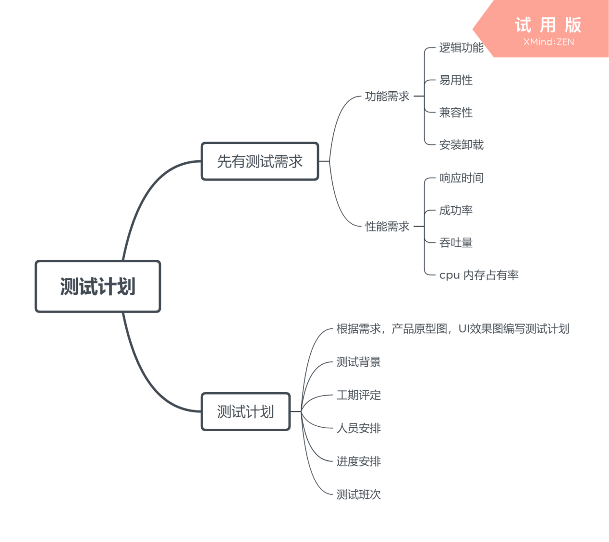</p>
<p>一般情况下，会由项目经理提出，当然，如果项目经理不提出的话，我们的测试经理会提出测试需求。需求中其中包含功能需求还有性能需求。功能需求，在我们公司又包含，逻辑功能，易用性，兼容性，安装卸载等功能性需求。性能需求的话，主要就是关注响应时间，成功率，CPU占有率，事务通过率，内存占有率等主要的能够反映我们软件和服务器性能的参数。</p>
<p>比如，对于我们的xxx项目，我们当时性能需求是这样提的，30个在线用户按照正常操作速度访问xxx功能，操作成功率是100%，而且90%的响应时间不超过4S，当并发在线用户数达到100个时，xxx的成功率大于98%，其中90%的在线用户的请求响应时间不大于用户的最大容忍时间10S。这个是测试需求。</p>
<p>当除了测试需求之后，我们就会做测试计划，通常我们的测试计划需要包括几大项。</p>
<p>像测试背景也就是要测试的这个项目的背景情况，包括项目内容，人员配备，项目模块，这些都是测试背景的内容。</p>
<p>还有就是，测试目标，比如我们逻辑功能的达标率是多少，界面测试和产品原型图覆盖率是多少，还有一些性能测试的内容。测试范围，对于测试范围的话，我们一般是包含一些测试分类，比如我们要测试什么，单元测试，集成测试，系统测试啥的，当然还要考虑到回归测试，随机测试，兼容性测试等等。还要包含测试输出文档，比如我们要输出测试用例，bug报告，测试报告等文档型的资料。当然还要有测试工具，功能测试工具和性能测试工具这些，还会涉及到一些自动化测试工具。再就是最主要的测试计划要有人员安排，就是谁谁谁做哪方面测试，模块安排，测试分类安排，我们的测试计划通常会有时间节点的安排，也就是测试进度，比如应该在某个时间节点完成什么样的工作，比如是测试用例什么时候做，什么时候结束，测试评审工作什么时候开展，又是什么时候结束，再比如是某种类型的测试，比如兼容性测试应该在什么时间节点完成。还有就是某个测试工程师应该在xx时间完成某个模块的测试工作。这个就是基本的测试计划的内容。</p>
<hr />
<h1 id="16">16 介绍一下测试报告<a class="headerlink" href="#16" title="Permanent link">&para;</a></h1>
<p>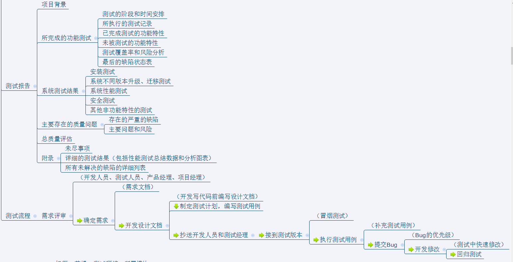</p>
<p>对于测试报告，就是对整个测试过程以及测试结果的一个文档形式的总结。我们通常会包含功能测试报告和性能测试报告。</p>
<p>我就先说功能测试报告吧。我就捡重点的来说吧，首先是把测试的整个背景介绍一下，然后对测试过程，测试的方式总结，比如兼容性测试怎么做的，安装卸载测试怎么做的，整个测试的流程内容要在测试报告中体现出来。还要统计测试用例的信息，比如一共写了多少测试用例，覆盖了多少模块，多少方式(兼容性，一般性能等等)，还有就是通过的测试用例数，失败的测试用例数，当然最重要的就是缺陷(bug)统计还有分析。</p>
<p>先说缺陷统计，我们要再测试报告中统计bug的总数量，致命bug多少，严重bug多少，一般bug多少，提示性的bug又有多少。再就是各个模块的bug数量，严重程度，还有就是分类型的bug数量，比如兼容性类型bug，一般功能性bug，这个我们都要在测试报告中形成书面的文档。当然，还要做一个缺陷分析，就是分析一下哪些模块bug比较多。</p>
<p>当然，还有非常重要的一点，有时候为了赶商机，我们项目并不是在没有bug的情况下去上线，那我们在测试报告中必须要声明上线前还存在哪些bug没有解决。</p>
<p>我再说一下性能测试报告吧。性能测试报告，首先要包含项目性能需求，然后将我们做性能测试所测出的数据在性能报告上进行分析，当然会列出这些数据，比如不同并发用户时的吞吐量，CPU占有率，内存占有率等信息，我们都会在性能测试报告中呈现。然后将我们的分析，呈现到报告中。比如在测试中，是否存在cpu占有率超过我们性能需求中阈值的情况，是否存在系统崩溃的风险，系统是否稳定，系统能承受多少用户的并发访问，系统响应时间是否是能够达到我们的标准。</p>
<p>对以上所有的情况，都会做一些风险评估和预测。</p>
<p>这个就是测试报告。</p>
<h1 id="_1">第二部分（软件测试基础面试题）<a class="headerlink" href="#_1" title="Permanent link">&para;</a></h1>
<h2 id="161">16.1 需求的标准是什么？(灵活回答)<a class="headerlink" href="#161" title="Permanent link">&para;</a></h2>
<p>标准的需求应该包含以下信息：</p>
<p>文档版本信息：包含文档版本、作者、完成日期，如果是修订版需要加上修订记录（包括版本号、修订者、修订日期、修订内容）</p>
<p>目录：目录结构要清晰，不同级别的标题要区分开字号。</p>
<p>目录：目录结构要清晰，不同级别的标题要区分开字号。</p>
<p>产品架构：一般包括功能架构和信息架构。可根据项目性质来确定 </p>
<p>角色定义：产品角色描述，如电商类平台包含的角色有：游客、注册供应商、注册采购商、认证供应商、认证采购商、普通管理员、超级管理员等</p>
<p>功能摘要：通过列出一级功能-&gt;二级功能，不需要细分</p>
<p>详细功能描述（产品特性）：即产品特性，包括功能列表、原型界面、详细设计（细分页面元素及约束）等</p>
<p>其它产品需求：依据公司产品要求来定，一般包含系统兼容性要求、产品运营要求、性能要求等</p>
<h2 id="162">16.2 当你参加需求评审时，你的评审准则是什么？<a class="headerlink" href="#162" title="Permanent link">&para;</a></h2>
<p>完整性：每一项需求都必须将所有要实现的功能描述清楚，以使开发人员获得设计和实现这些功能所需的所有必要信息。 </p>
<p>正确性：每一项需求都必须准确的陈述其要开发的功能。 </p>
<p>一致性：指与其它软件需求或高层需求不相矛盾 </p>
<p>可行性：每一项需求都必须是已系统和环境的权能和限制范围可以实施的。 </p>
<p>无二义性：对所有需求说明的读者都只能有一个明确统一的解释，由于自然语言极易导致二义性，所以尽量把每项需求简明的用户性的语言表达出来。 </p>
<p>健壮性：需求的说明中是否对可能出现的异常进行了分析，并且对这些异常进行了容错处理。 </p>
<p>必要性：可理解为每项需求都是用来授权你编写文档的“根源”，要使每项需求都能回溯至某项客户的输入。 </p>
<p>可测试性：每项需求都能通过设计测试用例或其它的验证方法来进行测试。 </p>
<p>可修改性：每项需求只应在SRS中出现一次。这样更改时容易保持一致性。另外，使用目录列表、索引和相互参照列表方法使软件需求规格说明书更容易修改。 </p>
<p>可跟踪性：应能在每项软件需求与它的根源和设计元素、源代码、测试用例之间建立起链接链，这种可跟踪性要求每项需求以一种结构化的，粒度好(f i n e - g r a i n e d )的方式编写并单独标明，而不是大段大段的叙述。 </p>
<p>分配优先级：应当对所有的需求分配优先级。如果把所有的需求都看作同样的重要，那么项目管理者在开发或节省预算或调度中就丧失控制自由度 </p>
<p>以上特点也是需求评审的要点，评审前可以根据实际情况指定需求评审检查表来帮助评审。 </p>
<p>可以根据以上特点对需求进行评审</p>
<h2 id="163">16.3 你以前工作时的测试流程是什么？<a class="headerlink" href="#163" title="Permanent link">&para;</a></h2>
<p>参考答案：（灵活回答）</p>
<p>公司对测试流程没有规定如何做，但每个测试人员都有自己的一套测试流程。我说下我1年来不断改正（自己总结，吸取同行的方法）后的流程吧。需求评审（有开发人员，产品经理，测试人员，项目经理）－&gt;需求确定(出一份确定的需求文档)－&gt;开发设计文档（开发人员在开始写代码前就能输出设计文档）－&gt;制定测试计划，写出测试用例－&gt;发给开发人员和测试经理看看（非正式的评审用例）－&gt;接到测试版本（可能测试的代码 通过冒烟测试的代码）－&gt;执行测试用例（中间可能会补充用例）－&gt;提交bug（有些bug需要开发人员的确定（严重级别的，或突然发现的在测试用例范围之外的，难以重现的），有些可以直接写到TD（Test Director 相当于禅道））－&gt;开发人员修改（可以在测试过程中快速的修改）－&gt;回归测试（可能又会发现新问题，再按流程开始跑）。</p>
<h2 id="164">16.4 测试人员在软件开发过程中的任务是什么？<a class="headerlink" href="#164" title="Permanent link">&para;</a></h2>
<ul>
<li>尽可能早的找出系统中的Bug；</li>
<li>避免软件开发过程中缺陷的出现；</li>
<li>衡量软件的品质，保证系统的质量；</li>
<li>关注用户的需求，并保证系统符合用户需求。</li>
<li>总的目标是：确保软件的质量。</li>
</ul>
<h2 id="165">16.5 软件测试的目的与原则<a class="headerlink" href="#165" title="Permanent link">&para;</a></h2>
<p>软件测试的作用</p>
<p>1、 通过测试工作可以发现并修复软件当中存在的缺陷，从而提高用户对产品的使用信心。</p>
<p>2、 测试可以记录软件运行过程中产生的一些数据，从而为决策提供数据支持。</p>
<p>3、 测试可以降低同类型产品开发遇到问题的风险。</p>
<p>软件测试原则</p>
<p>所谓的测试原则指的就是我们在执行测试工作时必须要遵守的一些规则。</p>
<p>1、 测试证明软件存在缺陷：无论执行什么样的测试操作都能证明当前软件是有缺陷的。</p>
<p>2、 不能执行穷尽测试：有些功能是没有办法将所有的测试情况都逻辑出来，所以任何的测试操作都有结束的时间。</p>
<p>3、 缺陷存在群集现象：对于软件功能说，核心功能占20%，非核心80%。在实际工作中我们会集中测试20%的核心功能，所以这个部分发现缺陷的几率就会高于80%。因此我们就会遇到缺陷都集中在20%功能模块里的现象。</p>
<p>4、 某些测试需要依赖特殊的环境。</p>
<p>5、 测试应尽早介入：为了更多的发现和更好的解决软件中的缺陷。我们追求测试工作尽早的开展。</p>
<p>6、 杀虫剂现象：同样的一个测试用例不能重的执行多次，因此软件会对它产生免疫。</p>
<p>不存在缺陷谬论：任何软件不可能是完美的</p>
<h2 id="166-v">16.6 画出软件测试的V模型图。<a class="headerlink" href="#166-v" title="Permanent link">&para;</a></h2>
<p>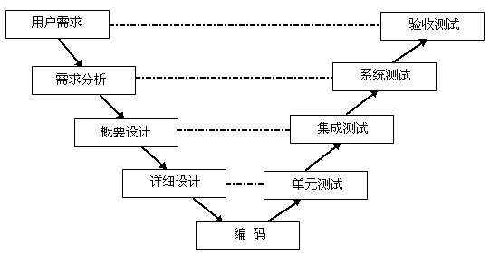</p>
<h2 id="167">16.7 开发模型与测试模型<a class="headerlink" href="#167" title="Permanent link">&para;</a></h2>
<p>周期模型（典型的几种）：</p>
<p>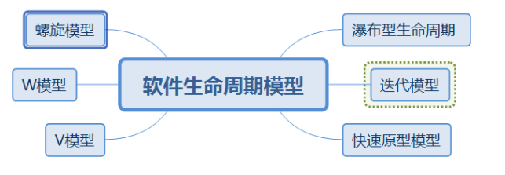</p>
<p>开发模型一瀑布模型。</p>
<p>优点：开发阶段，各个阶段比较清晰：强调早期计划及需求调查;适合稳定需求的产品开发;</p>
<p>改良：每个阶段都可以融入小的选代工作!</p>
<p>开发快速原型模型。</p>
<p>实现一个基本原型，让用户对原型进行评价，逐步调整，使其满足用户最终需求;</p>
<p>优点：适合不能确定需求的软件;</p>
<p>缺点：不适合开发大型系统。</p>
<p>测试v模型</p>
<p>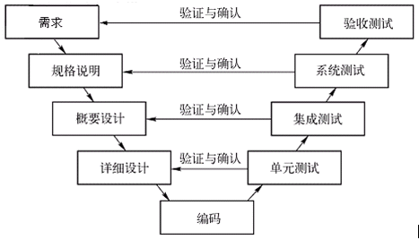</p>
<p>需求分析、概要设计、详细设计、编码、单元测试、集成测试、系统测试验收测试：↓</p>
<p>单元测试：又称模块测试，针对单一的程序模块进行的测试。</p>
<p>集成测试：叉叫组装测试，在单元测试的基础上，对所有模块进行测试。</p>
<p>系统测试：将整个软件看做一个 整体来进行测试，包括功能、性能、兼容性。</p>
<p>验收测试：</p>
<p>(1) 内测版(alpha) 内部交流版本，可能存在很多bug，不建议用户安装。</p>
<p>(2) 公测版(beta) 面向所有用户，通过用户的反馈再去修改细节。</p>
<p>(3) 候选版(gamma)与正式软件相差无几。</p>
<p>测试v模型优缺点</p>
<p>优点：包含了底层测试(单元测试)和高层测试(系统测试);清楚的标识了开发和测试的各个阶段：自上而下逐步求精，每个阶段分工明确，便于整体项目的把控。</p>
<p>缺点：自上而下的顺序导致了，测试工作在编码之后，就导致错误不能及时的进行修改;实际工作中，需求经常变化，导致v模型步骤，反复执行，返工量很大，灵活度较低。。改良：每个步骤都可以进行小的选代工作。</p>
<p>w模型.</p>
<p>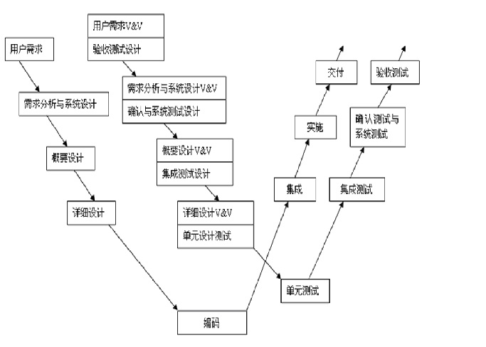</p>
<p>测试w模型优缺点</p>
<p>优点：开发伴随着整个开发周期，需求和设计同样要测试：更早的介入测试，可以发现</p>
<p>初期的缺陷，修复成本低：分阶段工作，方便项目整体管理。</p>
<p>缺点：开发和测试依然是线性的关系，需求的变更和调整，依然不方便;如果没有文档，</p>
<p>根本无法执行w模型;对于项目组成员的技术要求更高!。</p>
<p>定义：开发一个v;测试一个v组合起来的模型(w模型也叫双v模型)。</p>
<p>总结： v模型适用于中小企业，w模型适用于中大型企业(因为人员要求高)，h模型人员要求非常高，很少有公司使用。</p>
<h2 id="168">16.8 软件质量特性<a class="headerlink" href="#168" title="Permanent link">&para;</a></h2>
<p>描述当前软件是否好用，在当前的软件行业里我们所采用的一套标准是基于ISO组织制定的。需要我们记忆的就是软件质量的六大特征：</p>
<p>功能性：软件需要满足用户显示或者稳式的功能。</p>
<p>易用性：软件易于学习和上手使用。</p>
<p>可靠性：指的就是软件必须实现需求当中指明的具体功能。</p>
<p>效率型：类似于软件的性能。</p>
<p>可维护性：需求软件具有将某个功能修复之后继续使用的功能。</p>
<p>可移植性：当前软件可以从一个平台移植到另一个平台上去使用的能力。（功能靠用，效率可“以”）</p>
<h2 id="169">16.9 测试计划工作的目的是什么？测试计划文档的内容应该包括什么？<a class="headerlink" href="#169" title="Permanent link">&para;</a></h2>
<p>1、借助软件测试计划，参与测试的项目成员，尤其是测试管理人员，可以明确测试任务和测试方法，保持测试实施过程的顺畅沟通，跟踪和控制测试进度，应对测试过程中的各种变更。</p>
<p>2、测试计划编写6要素（5W1H）：</p>
<p>why——软件测试计划是指导测试过程的纲领性文件，领导可以宏观把控，测试人员能够清晰了解项目测试情况，其他人员能够有效配合工作</p>
<p>what—包含了产品概述、测试策略、测试方法、测试区域、测试配置、测试周期、测试资源、测试交流、风险分析等内容。</p>
<p>when—测试不同阶段的起止时间；</p>
<p>where—相应文档，缺陷的存放位置，测试环境等；</p>
<p>who—项目有关人员组成，安排哪些测试人员进行测试；</p>
<p>how—如何去做，使用哪些测试工具以及测试方法进行测试</p>
<p>3、测试计划主要从宏观上规划测试活动的范围、方法和资源配置，而测试详细规格、测试用例是完成测试任务的具体战术。所以其中最重要的是测试测试策略和测试方法</p>
<h2 id="1610">16.10 软件测试流程<a class="headerlink" href="#1610" title="Permanent link">&para;</a></h2>
<h3 id="16101">16.10.1 需求分析<a class="headerlink" href="#16101" title="Permanent link">&para;</a></h3>
<p>1、当前阶段的核心目的就是梳理清楚我们需要设计的点是什么</p>
<p>2、需求的来源：需求规格说明书，API文档，竞品分析，个人经验</p>
<h3 id="16102">16.10.2 设计用例<a class="headerlink" href="#16102" title="Permanent link">&para;</a></h3>
<p>1、用例就是用户为了测试软件的某个功能而执行的操作过程</p>
<p>2、设计用例是有方法的（等价类，边界值，判定表......）</p>
<h3 id="16103">16.10.3 评审用例<a class="headerlink" href="#16103" title="Permanent link">&para;</a></h3>
<p>对当前的用例进行添加或者删除</p>
<h3 id="16104">16.10.4 配置环境<a class="headerlink" href="#16104" title="Permanent link">&para;</a></h3>
<p>1、 环境：指的就是当前被测对象运行所需要的执行环境，作为测试人员需要具备配环境的能力。（一般情况下都会使用一键安装的集成环境）</p>
<p>2、 环境分类：操作系统+服务器软件+数据库+软件底层代码的执行环境</p>
<h3 id="16105">16.10.5 执行用例<a class="headerlink" href="#16105" title="Permanent link">&para;</a></h3>
<p>1、 一般在执行用例之前我们会做一个冒烟测试。这种测试的核心就是快速的对当前软件的核心功能或者主体执行流程进行验证。如果冒烟测试阶段有问题，则可以将此版本回退给开发</p>
<p>2、 如果冒烟测试通过那么才会开展示全面的测试</p>
<h3 id="16106">16.10.6 回归测试及缺陷跟踪<a class="headerlink" href="#16106" title="Permanent link">&para;</a></h3>
<p>1、 回归测试指的就是当我们将某个缺陷提交给开发之后，由他们进行修复，修复完成之后需要测试人员再次对其进行测试（回归测试）</p>
<p>2、 缺陷跟踪：指的就是当测试人员发现某个缺陷之后需要一直对其进行状态的跟踪</p>
<h3 id="16107">16.10.7 输出测试报告<a class="headerlink" href="#16107" title="Permanent link">&para;</a></h3>
<p>将当前的测试过程中产生的数据进行可视化的输出，方便其他人去查看</p>
<h3 id="16108">16.10.8 测试结果<a class="headerlink" href="#16108" title="Permanent link">&para;</a></h3>
<p>当将整个测试过程中产生的一些文档进行整理归档，方便后续版本使用</p>
<h2 id="1611-bscs">16.11 BS/CS软件架构<a class="headerlink" href="#1611-bscs" title="Permanent link">&para;</a></h2>
<p>所谓的软件架构我们可以理解为是用来指导我们软件开发的一种思维，目前来说最常见的两种架构模式就是b/s c/s</p>
<p>b---browser 浏览器</p>
<p>C----clent 客户端</p>
<p>S----server 服务端</p>
<p>两种架构的比较</p>
<p>1、 标准：相对于cs架构来说bs架构的两端都是在使用现成的成熟产品。所以bs会显示的标准一些。</p>
<p>2、 效率：相对bs架构来说cs中的客户端可以分担一些数据的处理，因此执行效率会高一些</p>
<p>3、 安全：bs架构当中得到数据传输都是以HTTP协议进行的输出，而HTTP协议又是明文输出。可以被抓包，所以相对于cs架构来说bs就显得不那么安全（相对的）</p>
<p>4、 升级：bs架构只需要在服务器端将数据进地更新，前台只需要刷新页面就可以完成升级，而cs架构当中必须要将两端都进行更新</p>
<p>5、 开发成本：相对于bs架构来说cs当中的客户端需要自己开发，所以相对于来说成本会高一些</p>
<h2 id="1612">16.12 以你公司的实际情况 说一下测试的流程，说明时间点<a class="headerlink" href="#1612" title="Permanent link">&para;</a></h2>
<p>测试工程师的实际工作流程（以P2P中型版本为例，一个月一个版本）：</p>
<p>1 产品经理或者SR把需求书发下来给开发和测试</p>
<p>2 测试先看一遍，进行需求分析。测试组长编写测试计划，并且分配测试任务给测试人员（2天时间）（此时开发也在进行需求分析）</p>
<p>3 过了2天，产品经理再把测试和开发召集在一起，进行需求讲解（或者说需求评审），有问题可以直接问，如果发现需求有问题，也可以提出来，SR回去会修改。（需求讲解时间0.5天）</p>
<p>4 讲完需求后，测试同事要进行测试场景的梳理和案例的编写了（xmind和Excel就要用上了），一共5个工作日。（此时开发在编写代码）</p>
<p>5 之后就要进行案例评审了，评审时候有SR、测试同事、开发同事，评审时候一般SR、测试组长、对应模块的开发同事会提出一点意见，评审完之后，回去修改、补充一下案例。（案例评审0.5天）</p>
<p>6 修改完以后，有两种处理情况：</p>
<p>6.1 对大项目有时候要进行案例的第二次评审。</p>
<p>6.2 对小项目，在时间紧的时候，一般不会二审，但是要以邮件的形式把修改或者新增后的案例发出来，给领导看，并抄送给其他同事。（案例评审0.5天，修改案例0.5天，案例二审0.5天）</p>
<p>7 案例评审完就要开始测试了，一般测试环境开发搭建好（要说自己也会搭建，搭建流程背老师总结的）：</p>
<p>7.1 中型版本的测试一般分2轮：第一轮：5天；第二轮：3天；回归测试2天；（共10个工作日）。</p>
<p>8 回归测试完后，达到了上线标准，就会如期上线，一般当天晚上12点上线</p>
<p>-</p>
<h2 id="p2p">P2P功能测试你们一般做几轮？<a class="headerlink" href="#p2p" title="Permanent link">&para;</a></h2>
<p>P2P O2O B2B B2C B2B2C</p>
<p>person to person 人对人 借贷宝</p>
<p>online to offline 线上对线下 饿了么</p>
<p>B2B  Business to business 商对商 阿里-商户</p>
<p>B2C  Business to Customer 京东直营  商家-客户</p>
<p>B2B2C Business to Business to Customer 天猫-商家-客户</p>
<p>答：1 中型版本（大修改，一个月上线一次）：测试一般分2轮：第一轮：5天；第二轮：3天；回归测试2天；（共10个工作日）。（一个月工作日22天，需求分析评审，编写测试用例等等一般占用整个版本时间的一半，或者少个几天）</p>
<p>2 小型版本（小修改，两个星期一次）：一轮测试3天，回归测试2天。</p>
<p>你们每次开会讨论的时候十几个开发都去开会了吗？</p>
<p>1 案例评审会：一般开发和测试、产品经理都会到场。（开发分组经理可能也会去）</p>
<p>需求评审会：项目经理、开发分组经理、产品经理、测试、开发一般都会到。</p>
<p>2如果是我们测试小组开会，一般都要到，各位测试同事报告自己的心得体会，汇报自己的进度和问题。</p>
<hr />
<h1 id="17">17 软件测试用例<a class="headerlink" href="#17" title="Permanent link">&para;</a></h1>
<h2 id="171">17.1 测试用例的方法有哪些？并把每种方法举例说明？工作中如何应用<a class="headerlink" href="#171" title="Permanent link">&para;</a></h2>
<p>等价类划分</p>
<p>划分等价类： 等价类是指某个输入域的子集合.在该子集合中，各个输入数据对于揭露程序中的错误都是等效的.并合理地假定：测试某等价类的代表值就等于对这一类其它值的测试.因此，可以把全部输入数据合理划分为若干等价类，在每一个等价类中取一个数据作为测试的输入条件，就可以用少量代表性的测试数据.取得较好的测试结果.等价类划分可有两种不同的情况：有效等价类和无效等价类.</p>
<p>边界值分析法</p>
<p>边界值分析方法是对等价类划分方法的补充。测试工作经验告诉我，大量的错误是发生在输入或输出范围的边界上，而不是发生在输入输出范围的内部.因此针对各种边界情况设计测试用例，可以查出更多的错误.</p>
<p>使用边界值分析方法设计测试用例，首先应确定边界情况.通常输入和输出等价类的边界，就是应着重测试的边界情况.应当选取正好等于，刚刚大于或刚刚小于边界的值作为测试数据，而不是选取等价类中的典型值或任意值作为测试数据.</p>
<p>错误推测法</p>
<p>基于经验和直觉推测程序中所有可能存在的各种错误， 从而有针对性的设计测试用例的方法.</p>
<p>错误推测方法的基本思想： 列举出程序中所有可能有的错误和容易发生错误的特殊情况，根据他们选择测试用例. 例如， 在单元测试时曾列出的许多在模块中常见的错误. 以前产品测试中曾经发现的错误等， 这些就是经验的总结. 还有， 输入数据和输出数据为0的情况. 输入表格为空格或输入表格只有一行. 这些都是容易发生错误的情况. 可选择这些情况下的例子作为测试用例.</p>
<p>因果图方法</p>
<p>1．     　　前面介绍的等价类划分方法和边界值分析方法，都是着重考虑输入条件，但未考虑输入条件之间的联系， 相互组合等. 考虑输入条件之间的相互组合，可能会产生一些新的情况. 但要检查输入条件的组合不是一件容易的事情， 即使把所有输入条件划分成等价类，他们之间的组合情况也相当多. 因此必须考虑采用一种适合于描述对于多种条件的组合，相应产生多个动作的形式来考虑设计测试用例. 这就需要利用因果图（逻辑模型）. 因果图方法最终生成的就是判定表. 它适合于检查程序输入条件的各种组合情况.、</p>
<p>(1) 判定表</p>
<p>(2) 正交表</p>
<h2 id="172">17.2 在编写用例的过程中，若原型出现逻辑上的错误，或模糊功能点，你会和哪些人沟通，沟通的侧重点在哪？<a class="headerlink" href="#172" title="Permanent link">&para;</a></h2>
<p>跟项目经理 产品人员和UI设计人员沟通，主要沟通描述不清的功能的业务逻辑及流程，理清楚业务流程才能编写正确的测试用例</p>
<h2 id="173">17.3 编写测试用例需要哪些文档？<a class="headerlink" href="#173" title="Permanent link">&para;</a></h2>
<p>功能：产品需求文档 产品原型图---&gt;分析测试点--&gt;形成测试用例文档</p>
<p>接口：接口文档</p>
<p>性能：性能需求文档</p>
<h2 id="174">17.4 用什么方法覆盖所有的测试点和边界点？<a class="headerlink" href="#174" title="Permanent link">&para;</a></h2>
<p>参照测试用例设计的方法，上面第一题</p>
<h2 id="175">17.5 一天写几个测试用例？<a class="headerlink" href="#175" title="Permanent link">&para;</a></h2>
<p>上家公司最后阶段处于版本更新，主要针对新功能来写，新功能差不多有两三百条测试用例吧，一般如果一天只写测试用例，写的比较详细的话可以写100-200条，不过我上家公司每天事情也是比较多，并且领导也不让把测试用例写的特别细，在测试的时候执行到各种情况就可以，这种一天就写个几十条</p>
<h2 id="176">17.6 测试用例栏位<a class="headerlink" href="#176" title="Permanent link">&para;</a></h2>
<p>测试用例编号 </p>
<p>测试用例名称(测试注册用例) </p>
<p>测试用例设计者 </p>
<p>软件版本号 </p>
<p>测试目的 </p>
<p>参考信息 </p>
<p>测试环境 </p>
<p>输入数据(页码) </p>
<p>操作步骤(打开网站，输入信息，点击搜索…等) </p>
<p>预期结果 </p>
<p>测试结果 </p>
<p>测试模块 </p>
<p>前置条件</p>
<h2 id="177">17.7 正交表测试设计方法的特点？<a class="headerlink" href="#177" title="Permanent link">&para;</a></h2>
<p>用最少的实验覆盖最多的操作，测试用例设计很少，效率高，但是很复杂；对于基本的验证功能，以及二次集成引起的缺陷，一般都能找出来；但是更深的缺陷，更复杂的缺陷，还是无能为力的；具体的环境下，正交表一般都很难做的。大多数，只在系统测试的时候使用此方法。</p>
<p>比如说：有四个选项框，每个各有三个选择，一共需要81个测试用例，但是使用正交表法，均匀覆盖后，缩减到9个</p>
<p>一般借助一些工具生成测试用例</p>
<h2 id="178">17.8 请以您以往的实际工作为例，详细的描述一次测试用例设计的完整的过程。<a class="headerlink" href="#178" title="Permanent link">&para;</a></h2>
<p>参考答案：登录</p>
<p>就说最近的这次网站功能的测试吧</p>
<p>首先：得到相关文档（需求文档和设计文档），理解需求和设计设计思想后，想好测试策略（测试计划简单点就OK了），考虑到测试环境，测试用例，测试时间等问题。</p>
<p>第二步：设计测试用例，测试策略是：把网站部分的功能点测试完，然后在进行系统测试（另外个模块呢有另一个测试人员负责，可以进行联调测试），网站模块的测试基本是功能测试和界面测试（用户并发的可能性很小，所以不考虑）：这次的网站的输入数据呢是使用数据库中的某张表记录，如果表中某一数据记录中新加进来的（还没有被处理的，有个标志位），网站启动后会立刻去刷那张表，得到多条数据，然后在进行处理。处理过程中，会经历3个步骤，网站才算完成了它的任务。有3个步骤呢，就可以分别对　　这3个步骤进行测试用例的设计，尽量覆盖到各种输入情况（包括数据库中的数据，用户的输入等），得出了差不多50个用例。界面测试，也就是用户看的到的地方，包括发送的邮件和用户填写资料的页面展示。</p>
<p>第三步：搭建测试环境（为什么这个时候考虑测试环境呢？因为我对网站环境已经很熟了，只有有机器能空于下来做该功能测试就可以做了），因为网站本身的环境搭建和其他的系统有点不同，它需要的测试环境比较麻烦，需要web服务器（Apache，tomcat），不过这次需求呢，网站部分只用到了tomcat，所以只要有tomcat即可</p>
<p>第四步：执行测试</p>
<h2 id="179">17.9 测试用例执行和故障管理流程图<a class="headerlink" href="#179" title="Permanent link">&para;</a></h2>
<p>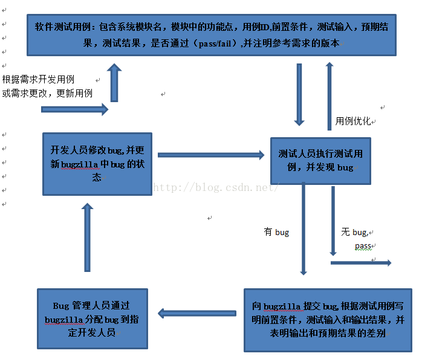</p>
<h2 id="1710">17.10 测试用例<a class="headerlink" href="#1710" title="Permanent link">&para;</a></h2>
<h3 id="17101">17.10.1 说一下测试用例<a class="headerlink" href="#17101" title="Permanent link">&para;</a></h3>
<p>嗯，做测试，好多时间是在琢磨分析测试用例怎么去写，这个每个公司规范可能不太一样，但是大致思想是一致的。都是想要通过测试用例，把每一个分析到位，进行测试。</p>
<p>就拿我上家公司来说吧，我们的测试用例包括像测试编号，测试所属模块，测试步骤，预期结果，测试结果这些栏位，当然这些还可以在细分，比如我们有些时候还会根据模块差异，平台差异等设计其他测试用例规范形式。</p>
<p>测试用例编写的话，一般是根据产品需求来定的，比如一个注册功能，产品需求上需要验证哪些，用户名，密码，邮箱，等等有什么要求，根据这个产品效果图或者产品需求来定测试用例怎么去编写。当然还要考虑到普通用户使用软件的习惯，以及一些特殊情况和极端情况。</p>
<p>写测试用例，这个测试用例要有一定的代表性，针对性，当然需要有复现性，不能是我们测出的bug无法复现，这样没有意义。</p>
<p>对于测试常用的方法，一般有这么常用的几种，有等价类划分法，   就是一类信息，我们在测试的时候，只测试一种，没有必要所有的都进行测试。还有像边界值法，一般注册登录的时候，或者涉及到数学测试的时候，会用到。我项目中就用到了边界值测试法，比如需要上传学生成绩信息，做数据分析，学生成绩的测试用例，就牵扯到边界值法。还有一些场景法，设定不同的场景，不同场景就会有不同的操作。</p>
<p>嗯，这是写测试用例时我们常用到的测试方法。</p>
<p>当然，测试用例还需要注明软硬件环境，比如是mac和windows，是pc端还是移动端，这些环境信息。</p>
<p>我们写测试用例，上上家公司，一开始测试经理让我们使用excel来写，不过使用excel效率太低了，后来我们使用bug管理工具，禅道，可以在软件上写测试用例，也可以直接将测出的bug直接转成测试用例，效率上提高了不少。</p>
<p>当然，上边我所提的是功能测试，当然性能测试用例也不太一样，用例id，测试步骤，测试模块这块是一样的，但是性能测试用例里边我们一般还会包含，事务设置，前置条件等信息，事务设置，就是在做压测或者负载测试的时候，我们会设置一些事务，从xx开始到xx结束，叫做一个完整的事务，前置条件就是在执行这些测试，是否有什么必须的条件，比如是否要登录。</p>
<p>再就是设计测试场景，这块是性能测试特殊的地方。比如在用例中指定并发用户数，指定压力方式，是随机，还是一次启动，还是逐步递增，指定负载测试时间，是10分钟还是1小时，把这些信息也要包含到用例中。</p>
<p>还有就是期望结果，期望结果应该包含多项内容，比如事务成功率，CPU利用率，内存利用率，硬盘利用率，响应时间等信息，这些的预期结果都是跟我们的测试需求上相匹配的。</p>
<h3 id="17102">17.10.2 接口测试用例编写<a class="headerlink" href="#17102" title="Permanent link">&para;</a></h3>
<p>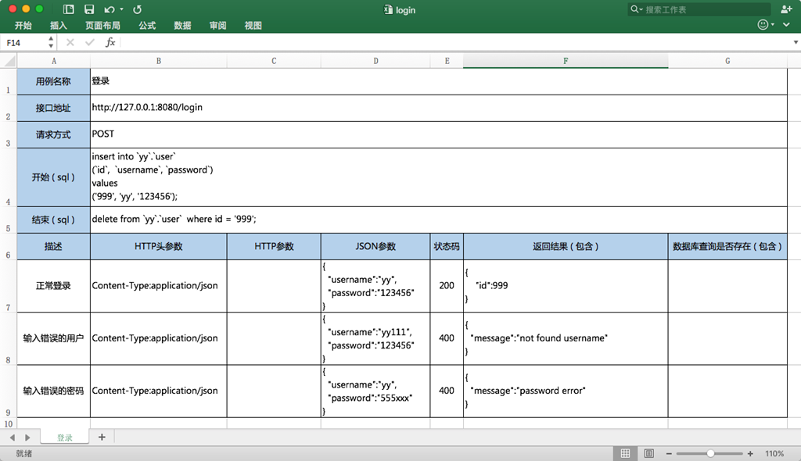</p>
<h2 id="1711">17.11 以前的项目每天需要执行多少用例<a class="headerlink" href="#1711" title="Permanent link">&para;</a></h2>
<p>回答思路：正常情况一般每天执行20个左右的用例(指的是概括的用例，细分可以有很多)，刚开始测试的时候，bug比较多，需要很多时间和开发交流沟通</p>
<p>案例执行会比较慢。越到后面就越快了。</p>
<p>你们做回归测试的时候是否全部都做呢？</p>
<p>1看时间，如果时间比较充足，会全部回归，回归时候因为自己操作比较熟练，然后系统基本上也没有bug。所以执行案例的速度会比较快。</p>
<p>2如果时间比较紧，就会挑选重要模块来回归测试了</p>
<hr />
<h1 id="18-web">18 web端测试<a class="headerlink" href="#18-web" title="Permanent link">&para;</a></h1>
<h2 id="181">18.1 搭建过什么环境？如何搭建的?<a class="headerlink" href="#181" title="Permanent link">&para;</a></h2>
<p>搭建过web测试环境 app测试环境等</p>
<p>个人PC(windows)可以搭建测试环境，但是由于个人PC硬件和软件的局限性，我们一般不使用其搭建测试环境，但如果是自己做模拟实验是没问题的。但是在企业中我们一般都不使用windows平台搭建服务器，而是选择linux平台。这是因为我们经常选择linux平台作为服务器的操作系统。搭建测试环境</p>
<p>如果你需要搭建的测试环境是刚装的linux操作系统，</p>
<p>通常测试环境包括JDK环境，Tomcat环境和MySQL环境</p>
<p>下边是安全配置的步骤，大家可以理解，不用强背...，面试的时候，可以说就从网上找一份文档，按照文档进行配置</p>
<div class="highlight"><pre><span></span><code><a id="__codelineno-0-1" name="__codelineno-0-1" href="#__codelineno-0-1"></a>1.安装jdk
<a id="__codelineno-0-2" name="__codelineno-0-2" href="#__codelineno-0-2"></a>如果有自带，先卸载再装
<a id="__codelineno-0-3" name="__codelineno-0-3" href="#__codelineno-0-3"></a>1.把包复制/usr/local
<a id="__codelineno-0-4" name="__codelineno-0-4" href="#__codelineno-0-4"></a>2.解压
<a id="__codelineno-0-5" name="__codelineno-0-5" href="#__codelineno-0-5"></a>3.配置环境变量
<a id="__codelineno-0-6" name="__codelineno-0-6" href="#__codelineno-0-6"></a>export JAVA_HOME=/usr/local/jdk1.7.0_71
<a id="__codelineno-0-7" name="__codelineno-0-7" href="#__codelineno-0-7"></a>export CLASSPATH=.:$JAVA_HOME/lib/dt.jar:$JAVA_HOME/lib/tools.jar
<a id="__codelineno-0-8" name="__codelineno-0-8" href="#__codelineno-0-8"></a>export PATH=$JAVA_HOME/bin:$PATH
<a id="__codelineno-0-9" name="__codelineno-0-9" href="#__codelineno-0-9"></a>4.检查java是否安装成功
<a id="__codelineno-0-10" name="__codelineno-0-10" href="#__codelineno-0-10"></a>java -version
<a id="__codelineno-0-11" name="__codelineno-0-11" href="#__codelineno-0-11"></a>2.安装tomcat
<a id="__codelineno-0-12" name="__codelineno-0-12" href="#__codelineno-0-12"></a>1.把下载的tomcat包复制/usr/local
<a id="__codelineno-0-13" name="__codelineno-0-13" href="#__codelineno-0-13"></a>2.解压
<a id="__codelineno-0-14" name="__codelineno-0-14" href="#__codelineno-0-14"></a>3.在tomcat/bin目录执行startup.sh文件
<a id="__codelineno-0-15" name="__codelineno-0-15" href="#__codelineno-0-15"></a>启动服务
<a id="__codelineno-0-16" name="__codelineno-0-16" href="#__codelineno-0-16"></a>在浏览器中连接：IP:8080
<a id="__codelineno-0-17" name="__codelineno-0-17" href="#__codelineno-0-17"></a>4.如果连接不上，但tomcat又是显示启动OK，检查firewall
<a id="__codelineno-0-18" name="__codelineno-0-18" href="#__codelineno-0-18"></a>路径为 /etc/sysconfig/iptables，将8080端口开启
<a id="__codelineno-0-19" name="__codelineno-0-19" href="#__codelineno-0-19"></a>5.重启服务
<a id="__codelineno-0-20" name="__codelineno-0-20" href="#__codelineno-0-20"></a>3.安装数据库
<a id="__codelineno-0-21" name="__codelineno-0-21" href="#__codelineno-0-21"></a>数据库一般安装mysql和oracle多一些
<a id="__codelineno-0-22" name="__codelineno-0-22" href="#__codelineno-0-22"></a>首先下载相应的数据库安装包
<a id="__codelineno-0-23" name="__codelineno-0-23" href="#__codelineno-0-23"></a>mysql安装比较简单，可以使用源码安装，也可以使用yum在线安装，在这里简单地介绍一下yum在线安装
<a id="__codelineno-0-24" name="__codelineno-0-24" href="#__codelineno-0-24"></a>用yum在线安装
<a id="__codelineno-0-25" name="__codelineno-0-25" href="#__codelineno-0-25"></a>1. rpm -qa|grep mysql --检查linux是否有存在的mysql
<a id="__codelineno-0-26" name="__codelineno-0-26" href="#__codelineno-0-26"></a>2.如果有mysql,卸载
<a id="__codelineno-0-27" name="__codelineno-0-27" href="#__codelineno-0-27"></a>rpm -e --nodeps mysql
<a id="__codelineno-0-28" name="__codelineno-0-28" href="#__codelineno-0-28"></a>3.安装
<a id="__codelineno-0-29" name="__codelineno-0-29" href="#__codelineno-0-29"></a>yum install mysql-server mysql mysql-dev -y
<a id="__codelineno-0-30" name="__codelineno-0-30" href="#__codelineno-0-30"></a>4.安装成功后，启动服务
<a id="__codelineno-0-31" name="__codelineno-0-31" href="#__codelineno-0-31"></a>service mysqld start
<a id="__codelineno-0-32" name="__codelineno-0-32" href="#__codelineno-0-32"></a>service 服务名 restart/start
<a id="__codelineno-0-33" name="__codelineno-0-33" href="#__codelineno-0-33"></a>5.直接输入mysql 进入到数据库
<a id="__codelineno-0-34" name="__codelineno-0-34" href="#__codelineno-0-34"></a>以上的只会在干净的操作系统上进行安装，一般来说只需要安装一次
</code></pre></div>
<h2 id="182">18.2 你们有几台服务器，怎么部署的<a class="headerlink" href="#182" title="Permanent link">&para;</a></h2>
<p>参照：可以回答三台服务器</p>
<p>分别部署开发环境、测试环境、生产环境</p>
<p>也可以回答不清楚，项目架构比较大，到底多少台服务器不太清楚。</p>
<h2 id="183">18.3 测试用的什么环境<a class="headerlink" href="#183" title="Permanent link">&para;</a></h2>
<p>操作系统linux-Unbutu或centOS </p>
<p>web服务器 -tomcat/weblogic</p>
<p>语言环境 php/java</p>
<p>数据库 mysql</p>
<h2 id="184">18.4 什么是测试环境<a class="headerlink" href="#184" title="Permanent link">&para;</a></h2>
<p>测试环境（Testing environment）是指测试运行其上的软件和硬件环境的描述，以及任何其他与被测软件交互的软件，包括驱动和桩。测试环境是指为了完成软件测试工作所必需的计算机硬件、软件、网络设备、历史数据的总称。</p>
<p>其实就是，测试环境=软件+硬件+网络+数据准备+测试工具</p>
<h2 id="185">18.5 开发环境、测试环境、生产环境（线上） 到底是什么？<a class="headerlink" href="#185" title="Permanent link">&para;</a></h2>
<p>开发环境：开发环境是程序猿们专门用于开发的服务器，配置可以比较随意， 为了开发调试方便，一般打开全部错误报告。</p>
<p>测试环境：一般是克隆一份生产环境的配置，一个程序在测试环境工作不正常，那么肯定不能把它发布到生产机上。</p>
<p>生产环境：是指正式提供对外服务的，一般会关掉错误报告，打开错误日志。</p>
<p>三个环境也可以说是系统开发的三个阶段：开发-&gt;测试-&gt;上线，其中生产环境也就是通常说的真实环境。</p>
<p>通俗一点就是：</p>
<p>1：开发环境：项目尚且在编码阶段，我们的代码一般在开发环境中 不会在生产环境中，生产环境组成：操作系统 ，web服务器 ，语言环境。 php 。 数据库 。 等等</p>
<p>2：测试环境：项目完成测试，修改bug阶段</p>
<p>3：生产环境：项目数据前端后台已经跑通，部署在阿里云上之后，有客户使用，访问，就是网站正式运行了</p>
<p>开发到正式上线的流程：</p>
<p>应该是先在开发环境 中开发完成，测试环境测试，保证程序没有问题后，再上传到生产环境中。</p>
<h2 id="186">18.6 如果京东有一个购物网页给你，你要怎么进行测试？测试哪些主要功能？<a class="headerlink" href="#186" title="Permanent link">&para;</a></h2>
<p>1 首先进行需求分析，用xmind梳理测试点，再编写案例，之后就行案例评审，寻求他人意见。之后再完善案例，发出来给其他人检查。</p>
<p>2 测试点，首先是UI方面：美观度，和易操作型，易理解性型方面进行测试。</p>
<p>3 然后再考虑他的功能点，注册登录，添加购物车，下单，付款，发货，确认收货，评价。</p>
<p>还有支付时候的绑定银行卡，实名认证。</p>
<p>4 性能方面：打开网页，确认订单、付款的响应时间等等。</p>
<p>5 兼容性：支持各种主流浏览器，ie，360，火狐，谷歌等。</p>
<p>针对添加购物车这个测试点说一下你要怎么测试“添加购物车”</p>
<p>（增删改查的角度）</p>
<p>1 能否加入购物车，同一件商品能否再次添加到购物车。</p>
<p>2 购物车商品件数的上限限制（淘宝限制100件）</p>
<p>3 购物车是否可以正常移除商品，移除商品后，能否再添加回来。</p>
<p>4 添加的每种商品是否可以正常增减数量，数量大于0</p>
<p>5 退出购物车，再去查询购物车，商品正常。</p>
<p>6 购物车的商品可以全选，取消全选，可以复选，选中的商品和数量可以正常下单。</p>
<p>7 商品添加到购物车以后，已下架。购物车会提示此宝贝已失效。</p>
<p>8 商品添加到购物车以后，降价了，购物车会有降价提示。</p>
<p>9 商品添加到购物车以后，库存不足了。</p>
<h2 id="187">18.7 网上银行转账是怎么测的，设计一下测试用例。<a class="headerlink" href="#187" title="Permanent link">&para;</a></h2>
<p>回答思路：宏观上可以从质量模型（万能公式）来考虑，重点需要测试转账的功能、性能与安全性。设计测试用例可以使用场景法为主，先列出转账的基本流和备选流。然后设计场景，最后根据场景设计数据。实际面试中需要举出具体的例子。</p>
<p>1 先检查界面。</p>
<p>2 再测试功能：</p>
<p>2.1验证同行转账，跨行转账。</p>
<p>2.2验证转账限额。</p>
<p>2.3验证非法账户（挂失，冻结，锁定的账户）的转账。</p>
<p>3 再测试性能方面的。</p>
<h2 id="188">18.8 定期存款到期自动转存该怎么测？<a class="headerlink" href="#188" title="Permanent link">&para;</a></h2>
<p>回答思路：到期肯定会有边界，所以设计里面可以考虑边界值法。自动转存（首先要搞清楚什么是自动转存。）</p>
<p>存钱该怎么测，用什么测试方法</p>
<p>准备思路：存钱要分类：活期、零存整取等（具体规则百度下），然后根据每类的业务规则选择合适的用例设计方法。譬如一次最少存入多少？最多一次能存入多少等。</p>
<hr />
<h1 id="19-bug">19 bug管理工具<a class="headerlink" href="#19-bug" title="Permanent link">&para;</a></h1>
<h2 id="191-bug">19.1 用过那些bug管理工具？讲一下优缺点？<a class="headerlink" href="#191-bug" title="Permanent link">&para;</a></h2>
<p>禅道 ，了解过jira</p>
<p>禅道的优点：</p>
<p>1）禅道开源免费，从下载到使用不需任何费用。开源的软件更能够根据企业自身需求在源码的基础上进行修改，让国内外众多企业节省项目管理成本。</p>
<p>2）禅道的功能非常完备，可扩展性，且代码开放可做二次开发。</p>
<p>3）禅道价格实惠，售后服务方式选择多且有官方技术服务的保障。</p>
<p>禅道的缺点：</p>
<p>1）禅道的界面设计稍稍逊色，不够简洁，颜色使用也比较单一，不够丰富。</p>
<p>2）虽然禅道有新手入门操作演示，但部分新人上手还是会存在一些问题。</p>
<p>JIRA的优点：</p>
<p>1）JIRA的界面效果非常不错。安全性、可扩展性方面也不错。 JIRA的使用范围广，所以拥有众多开发者提供的扩展插件以供不同选择。</p>
<p>2）单独提一下JIRA的工作流定制，这块功能实用性特别高，可定制性也很好。</p>
<p>3）JIRA针对issue驱动的项目管理非常有效，也基于多年来的插件积累，可以展现非常强大的交互、统计视图，纯粹项目管理使用JIRA的确是个不错选择。</p>
<p>JIRA的缺点：</p>
<p>1）JIRA从使用上来说还是不大符合国人的使用逻辑。</p>
<p>2）JIRA虽然有中文版本，但是中文版本在使用的过程中，部分页面还是会有很多英文，不能做到全中文界面。</p>
<p>3）JIRA对于国内用户提供的售后服务稍显弱一些，存在时间和沟通上的一些障碍。</p>
<h2 id="192-bug">19.2 如何提交高质量的软件缺陷（Bug）记录？<a class="headerlink" href="#192-bug" title="Permanent link">&para;</a></h2>
<p>一篇高质量的软件缺陷记录应该考虑一下方面：</p>
<p>1) 通用ui要统一、准确</p>
<p>缺陷报告的ui要与测试的软件ui保持一致，便于查找定位。</p>
<p>2) 尽量使用业界惯用的表达术语和表达方法</p>
<p>使用业界惯用的表达术语和表达方法，保证表达准确，体现专业化。</p>
<p>3) 每条缺陷报告只包括一个缺陷</p>
<p>每条缺陷报告只包括一个缺陷，可以使缺陷修正者迅速定位一个缺陷，集中精力每次只修正一个缺陷。校验者每次只校验一个缺陷是否已经正确修正。</p>
<p>4) 不可重现的缺陷也要报告</p>
<p>首先缺陷报告必须展示重现缺陷的能力。不可重现的缺陷要尽力重现，若尽力之后仍不能重现，仍然要报告此缺陷，但在报告中要注明无法再现，缺陷出现的频率。</p>
<p>5) 明确指明缺陷类型</p>
<p>根据缺陷的现象，总结判断缺陷的类型。例如，即功能缺陷、界面缺陷、数据缺陷，合理化建议这是最常见的缺陷或缺陷类型，其他形式的缺陷或缺陷也从属于其中某种形式。</p>
<p>6) 明确指明缺陷严重等级和优先等级</p>
<p>时刻明确严重等级和优先等级之间的差别。高严重问题可能不值得解决，小装饰性问题可能被当作高优先级。</p>
<p>7) 描述 (Description) ，简洁、准确，完整，揭示缺陷实质，记录缺陷或缺陷出现的位置</p>
<p>描述要准确反映缺陷的本质内容，简短明了。为了便于在软件缺陷管理数据库中寻找制定的测试缺陷，包含缺陷发生时的用户界面（ui）是个良好的习惯。例如记录对话框的标题、菜单、按钮等控件的名称。</p>
<p>8) 短行之间使用自动数字序号，使用相同的字体、字号、行间距</p>
<p>短行之间使用自动数字序号，使用相同的字体、字号、行间距，可以保证各条记录格式一致，做到规范专业。</p>
<p>9) 每一个步骤尽量只记录一个操作</p>
<p>保证简洁、条理井然，容易重复操作步骤。</p>
<p>10) 确认步骤完整，准确，简短</p>
<p>保证快速准确的重复缺陷，“完整”即没有缺漏，“准确”即步骤正确，“简短”即没有多余的步骤。</p>
<p>11) 根据缺陷，可选择是否进行图象捕捉</p>
<p>为了直观的观察缺陷或缺陷现象，通常需要附加缺陷或缺陷出现的界面，以图片的形式作为附件附着在记录的“附件”部分。为了节省空间，又能真实反映缺陷或缺陷本质，可以捕捉缺陷或缺陷产生时的全屏幕，活动窗口和局部区域。为了迅速定位、修正缺陷或缺陷位置，通常要求附加中文对照图。</p>
<p>附加必要的特殊文档和个人建议和注解</p>
<p>如果打开某个特殊的文档而产生的缺陷或缺陷，则必须附加该文档，从而可以迅速再现缺陷或缺陷。有时，为了使缺陷或缺陷修正者进一步明确缺陷或缺陷的表现，可以附加个人的修改建议或注解。</p>
<p>12) 检查拼写和语法缺陷</p>
<p>在提交每条缺陷或缺陷之前，检查拼写和语法，确保内容正确，正确的描述缺陷。</p>
<p>13) 尽量使用短语和短句，避免复杂句型句式</p>
<p>软件缺陷管理数据库的目的是便于定位缺陷，因此，要求客观的描述操作步骤，不需要修饰性的词汇和复杂的句型，增强可读性。</p>
<p>以上概括了报告测试缺陷的规范要求，随着软件的测试要求不同，测试者经过长期测试，积累了相应的测试经验，将会逐渐养成良好的专业习惯，不断补充新的规范书写要求。此外，经常阅读、学习其他测试工程师的测试缺陷报告，结合自己以前的测试缺陷报告进行对比和思考，可以不断提高技巧。</p>
<p>14) 缺陷描述内容</p>
<p>缺陷描述的内容可以包含缺陷操作步骤，实际结果和期望结果。操作步骤可以方便开发人员再现缺陷进行修正，有些开发的再现缺陷能力很差，虽然他明白你所指的缺陷，但就是无法再现特别是对系统不熟悉的新加入开发人员，介绍步骤可以方便他们再现。实际结果可以让开发明白错误是什么，期望结果可以让开发了解正确的结果应该是如何。</p>
<h2 id="193-bug">19.3 您以往的工作中，一条软件缺陷（或者叫Bug）记录都包含了哪些内容？<a class="headerlink" href="#193-bug" title="Permanent link">&para;</a></h2>
<p>1.和bug产生对应的软件版本</p>
<p>2.开发的接口人员</p>
<p>3.bug的优先级</p>
<p>4.bug的严重程度</p>
<p>5.bug可能属于的模块，如果不能确认，可以用开发人员来判断</p>
<p>6.bug标题，需要清晰的描述现象</p>
<p>7.bug描述，需要尽量给出重新bug的步骤</p>
<p>8.bug附件中能给出相关的日志和截图。</p>
<p>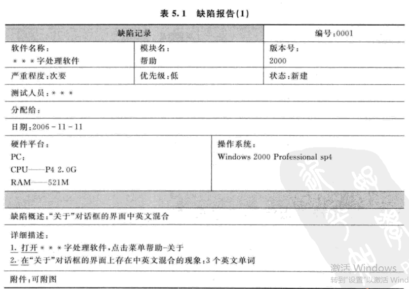</p>
<h2 id="194-bug">19.4 跟开发因为bug产生分歧怎么解决？<a class="headerlink" href="#194-bug" title="Permanent link">&para;</a></h2>
<p>问题确认与评估</p>
<p>再次论证该问题确实是程序缺陷，并评估该缺陷的重要程度并对其分类。比如可存在以下分类：</p>
<p>1、设计文档范围内的功能性缺陷</p>
<p>2、影响到程序的安全性和稳定性缺陷</p>
<p>3、界面缺陷</p>
<p>4、一般性错误（如未考虑边界检查等）</p>
<p>5、边缘死角，规律不明显，不太容易重现的错误</p>
<p>6、兼容性错误（例如旧机型、CPU\MEM，旧标准等等）</p>
<p>7、安全性或易用性等的修改建议</p>
<p>二、明确开发不修改该缺陷的确切原因</p>
<p>比如可存在以下原因：</p>
<p>1、规律不明显，不好重现</p>
<p>2、开发认为是不影响主要功能的一般性bug，因时间处于版本的稳定期，担心牵一发动全身引起更多错误</p>
<p>3、调用了第三方组件或库函，是第三方程序存在的缺陷</p>
<p>4、存在技术难点</p>
<p>5、设计本身存在问题，程序逻辑是正确的，但实现结果并非用户所需（换言之，dev说这是设计问题，不是程序问题）</p>
<p>6、开发的个人主观意见：是该瑕疵可以容忍，没必要修改，还是修改该瑕疵会引起更大的问题</p>
<p>7、测试和开发对错误的理解有分歧：测试理解错误，该问题并不是bug;测试没有说服开发这是个bug</p>
<p>三、具体问题具体分析--注：dev代表开发 tester表示测试人员</p>
<p>分析完第一、二步之后，也就基本上明确了问题的争议焦点，然后具体问题具体分析。</p>
<p>1、如果dev认为不好重现，则tester有责任和义务找到更简洁有效的重现规律。</p>
<p>2、如果tester没有说服dev认识到这是个缺陷，则需要拿出强有力的证据（测试用例、设计文档、错误现象等）来证明。</p>
<p>3、对于第三方库函bug，或技术难点导致的bug，则坚持原则--宁缺勿滥，必要时宁可封掉该功能。</p>
<p>4、针对错误的设计、不能说服的dev主观理解、改动隐患，以及稳定期等特殊情况，则可通过TM进行多方沟通。</p>
<p>四、发挥TM与PM的沟通职责 注TM表示测试经理 PM表示产品经理</p>
<p>强调沟通</p>
<p>TM和PM有团队沟通的职责。在bug分类、指派和反馈过程中出现有争议的问题时，TM和PM有责任和义务进行干预。根据问题的重要程度和轻重缓急，采取不同的方式进行沟通。如出现“三”中3、4类较大争议的问题，可通过会议研讨等形式召集多方进行论证，并达成一致的解决意见，解决方法形成备忘录。  </p>
<p>对因各种原因继续保留在发布版本中的bug，尤其可能影响功能的，应予以说明，提醒用户绕过</p>
<h2 id="195">19.5 做了这么久的测试，遇到过什么棘手的问题？<a class="headerlink" href="#195" title="Permanent link">&para;</a></h2>
<p>只供参考：</p>
<p>有一个客户给我们公司市场人员打电话说她的文件上传不了了，问我是不是系统出问题了，让我检查一下。。。。结果看了他发过来的截图内容，她把金额填在尺码列，尺码（S，M，L）填在金额列里。。。这个也是我在测试的时候的疏忽，像这种是应该有提示的</p>
<p>查询功能，翻页后第二页的内容与第一页的内容完全相同。原因是翻页的时候刷新了页面触发了查询语句。印象最深原因：发生过两次，才知道原因所在</p>
<p>我们应用是混合开发式的里面嵌套了html页面，在进入这些页面的时候，如果频繁的进入，过段时间就会发生崩溃，再重新打开应用进入没有崩溃发生，继续频繁过段时间还会崩溃，后来抓取日志发现是OutOfMemery内存溢出，其实这个原因是加载html页面的时候，在关闭没有回收资源，发生了内存泄漏</p>
<p>一个有趣的bug问题， 原来在一个做客户端的公司，用户反映装了我们的软件之后电脑不能操作。后来大神远程定位问题发现：他电脑上ctrl键按下去弹不起来了</p>
<h2 id="196">19.6 大多数公司的软件项目进度紧张、人员较少、需求文档根本没有或者很不规范，你认为在这种情况下再怎么保证软件的质量？<a class="headerlink" href="#196" title="Permanent link">&para;</a></h2>
<p>出现以上的情况，如果仅仅想通过测试来提高软件质量，那几乎是不可能的，原因是没有足够的时间让你去测试，少而不规范的文档导致测试需求无法细化到足够且有针对行的测试。所以，作为公司质量保证的因该和项目经理确定符合项目本身是和的软件生命周期模型(比如RUP的建材，原型法)，明确项目的开发流程并督促项目组按照此流程开展工作，所有项目组成员(项目经理更加重要)都要制定出合理的工作计划，加强代码的单元测试，在客户既定的产品交付日期范围内，进行产品的持续集成等等，如果时间允许可以再配合客户进行必要的系统功能测试。</p>
<h2 id="197-bug">19.7 bug不能复现怎么办？<a class="headerlink" href="#197-bug" title="Permanent link">&para;</a></h2>
<ol>
<li>在A版本发现的bug应该在A版本进行重现    我们知道，有很多原因会导致A版本的bug可能不能在B版本重现：1）开发人员自己偷偷解了bug，以免受到KPI考核；2）环境差异，可能B版本的代码在A版本的环境也会出问题，但是在开发环境可能就不能复现；3）代码变更，也许是其他的代码引起的bug，B版本时其他开发已经修改，此类可以归纳为相关联功能引起的bug；4）AB两版本进行复现的前置条件及步骤已不同。</li>
</ol>
<p>既然有这么多可能性，那我们就应该排除影响，让问题简单化，保持环境和代码一致的情况下进行复现。A版本的bug如果在B版本不能复现，时间和条件允许的话，那就回退代码到A版本，有个前提不用回退，那就是已准确定位问题了，并且确定在B版本已经解决它了。   </p>
<ol>
<li>项目时间允许的情况下，开发人员应大力协作复现bug</li>
</ol>
<p>对于”疑难杂症“，开发人员应大力配合测试人员进行复现：1）如果对于不好调试的代码就打印更多log；2）可以通过连接测试环境数据库并回滚代码到A版本，根据获悉的已有情况添加断点调试代码；3）做更细致的code review等等方式。在自己负责的那部分代码确定完没有问题，这时候就需要考虑到接口，是否在接口数据处理上的问题，就需要其他开发人员配合。而测试人员需要尽最大努力来还原当时的场景：环境，数据，前置条件及测试步骤等。</p>
<ol>
<li>测试人员要再次确认用例设计的覆盖度及周密性     </li>
</ol>
<p>有几种情况会导致不可复现：1）环境；2）代码；3）数据。而数据又可以归纳到代码容错性处理上，环境其实是可以很好还原的，那出现不容易复现的bug就大多数是归于代码和数据上了，对于测试而言，用例设计的覆盖不够，不够严谨就会导致bug不在我们的掌握中。     这个时候，我们有两种情况：一是原本用例就没有好好设计过，未经评审过，大家测试时就很随意，勿容置疑，赶紧把用例好好琢磨琢磨，再叫上项目相关人员进行评审，这么做的目的也是为了保证测试用例得到了项目相关人员的认可，各种情况大家都讨论过，保证在需求上大家的一致性，保证软件覆盖度能满足本次项目需求的要求，做到需求100%覆盖，开发人员若再提出更多建议，那也可以弥补一些黑盒测试时可能遗漏的情况；二是该项目已经经过严格的需求评审及用例评审了。当然，即便如此也不能避免漏测以及对特殊情况的考虑。</p>
<p>当然，要这么做的前提是这个bug很严重，影响了版本的发布，有必要召集大家协力解决掉它。</p>
<ol>
<li>绞尽脑汁，它仍然不能复现时，保持关注</li>
</ol>
<p>我相信，通过以上步骤的努力，仍然不能复现的bug一定是优先级不高的，那就再评估重要度，若通过项目组决定不影响版本发布，就密切关注此bug，在发布后验证时也重点关注下。而且该bug不能关闭，依次往以后版本中顺延，并且每轮测试时都要尝试再次复现。那何时可以关闭呢？也许3，5个版本发布后，没有出问题就可以决定关闭它了。</p>
<ol>
<li>思考测试流程及测试规范，及时更正走过的弯路，制定提交bug的规范，便于开发及我们自己复现 有一次，就会有第二次，我们应该及时响应，即便不能亡羊补牢，也要防患未然。 提交bug的规范，这个可能每个公司情况不一样，有些公司木有限制，提交的bug也是千人千面，这对于开发人员理解bug和复现bug无疑增加了难度。而规范了bug提交，若记录了此bug的前置条件，使用的数据及操作步骤，可能会大有益处。当然，此处不是说每个bug都这么详细。</li>
</ol>
<h2 id="198">19.8 缺陷包括哪些要素？<a class="headerlink" href="#198" title="Permanent link">&para;</a></h2>
<p>1.和bug产生对应的软件版本</p>
<p>2.开发的接口人员</p>
<p>3.bug的优先级</p>
<p>4.bug的严重程度</p>
<p>5.bug可能属于的模块，如果不能确认，可以用开发人员来判断</p>
<p>6.bug标题，需要清晰的描述现象</p>
<p>7.bug描述，需要尽量给出重新bug的步骤</p>
<p>8.bug附件中能给出相关的日志和截图。</p>
<p>高质量的bug记录就是指很容易理解的bug记录，所以，对于描述的要求高，能提供的信息多且准确，很好的帮助开发人员定位。</p>
<h2 id="199">19.9 请详述缺陷在管理工具中的状态转换<a class="headerlink" href="#199" title="Permanent link">&para;</a></h2>
<table>
<thead>
<tr>
<th>New</th>
<th>为测试人员新问题提交所标志的状态。</th>
</tr>
</thead>
<tbody>
<tr>
<td>Open</td>
<td>为任务分配人（开发组长/经理）对该问题准备进行修改并对该问题分配修改人员所标志的状态。Bug解决中的状态，由任务分配人改变。对没有进入此状态的Bug，程序员不用管。</td>
</tr>
<tr>
<td>Reopen</td>
<td>为测试人员对修改问题进行验证后没有通过所标志的状态；或者已经修改正确的问题，又重新出现错误。由测试人员改变。</td>
</tr>
<tr>
<td>Fixed</td>
<td>为开发人员修改问题后所标志的状态，修改后还未测试。</td>
</tr>
<tr>
<td>Closed</td>
<td>为测试人员对修改问题进行验证后通过所标志的状态。由测试人员改变。</td>
</tr>
<tr>
<td>Rejected</td>
<td>开发人员认为不是Bug、描述不清、重复、不能复现、不采纳所提意见建议、或虽然是个错误但还没到非改不可的地步故可忽略不计、或者测试人员提错，从而拒绝的问题。由Bug分配人或者开发人员来设置。</td>
</tr>
<tr>
<td>Delay</td>
<td>开发人员认可是缺陷，但认为当前版本无法修复的缺陷。故拖延到后期再进行修复。若是有缺陷被标为该状态，则开发人员必须附上缺陷修复的具体版本或日期。</td>
</tr>
</tbody>
</table>
<h2 id="1910">19.10 常见的一些错误、异常<a class="headerlink" href="#1910" title="Permanent link">&para;</a></h2>
<p>a)     NullPointerException 空指针异常</p>
<p>b)     ClassNotFoundException   指定的类不存在</p>
<p>c)     NumberFormatException    字符串转换成数字异常</p>
<p>d)     IndexOutOfBoundsException    角标越界</p>
<p>e)     ArithmeticException      运算异常</p>
<p>f)     FileNotFoundException    文件找不到</p>
<p>g)     ArrayStoreException 数组存储异常</p>
<h2 id="1911-bug">19.11 bug生命周期<a class="headerlink" href="#1911-bug" title="Permanent link">&para;</a></h2>
<p>新建，确认，解决，重新验证，关闭，重新打开</p>
<p></p>
<h2 id="1912">19.12 测试非常紧急过程中，遇到阻塞性问题，对应的开发没有时间解决，你如何推动问题解决？<a class="headerlink" href="#1912" title="Permanent link">&para;</a></h2>
<p>1首先判断问题的严重性，向对应的开发了解问题的原因。</p>
<p>2然后再汇报给自己的测试组长和开发组长，让组长知情，咨询他们的意见，再把问题汇报给开发分组经理，让他们统一协调处理。安排经验丰富的其他高级开发人员来协助此开发解决问题，然后通过加班来完成问题解决和测试。</p>
<h2 id="1913-bug">19.13 功能测试的BUG级别你们怎么划分？<a class="headerlink" href="#1913-bug" title="Permanent link">&para;</a></h2>
<p>bug严重程度：一般提L4 和L3，L2很少提，除非影响流程。L1这个是非常致命的bug，只有很严重的情况才提。</p>
<p>执行别人的用例，如果发现用例有错怎么处理？</p>
<p>首先咨询一下案例作者或者询问测试组长，确认一下，如果确实有误就要修正用例。</p>
<h2 id="1914-bug">19.14 在项目中找到的经典BUG是什么<a class="headerlink" href="#1914-bug" title="Permanent link">&para;</a></h2>
<p>1 兼容性问题，在ie浏览器，提交订单按钮可以点击，到了谷歌，火狐就不能了。</p>
<p>2 查询订单页面，根据条件筛选的结果不是想要的结果，还有某些字段的值没有显示出来，或者显示错误。（因为开发从库表取值有误）</p>
<p>3 付款成功后，订单状态一直不翻转为交易成功。（因为代码没有正确获取库表中付款成功记录的状态码）</p>
<p>4 修改支付密码，新密码和原密码一致，也通过了，系统没有做新旧密码的校验。</p>
<p>5 付款时候的手机验证码，可以一直使用，没有成功做有效期控制。</p>
<p>6 手机app断开网络后，再去点击，没有友好的错误页面提示网络已断开，只有undefined返回</p>
<h2 id="1915">19.15 以前的项目是怎么管理的？<a class="headerlink" href="#1915" title="Permanent link">&para;</a></h2>
<p>回答思路：</p>
<p>我们以前的项目是用禅道来做测试的需求管理、用例管理、缺陷管理的。另外版本管理工具使用的是SVN。</p>
<h1 id="20">20 手机端测试<a class="headerlink" href="#20" title="Permanent link">&para;</a></h1>
<h2 id="201-adb">20.1 常用的ADB指令<a class="headerlink" href="#201-adb" title="Permanent link">&para;</a></h2>
<div class="highlight"><pre><span></span><code><a id="__codelineno-1-1" name="__codelineno-1-1" href="#__codelineno-1-1"></a><span class="n">ADB</span><span class="o">=</span><span class="n">android</span> <span class="n">debug</span> <span class="n">bridge</span> <span class="n">安卓调试桥</span><span class="err">，</span><span class="n">连接电脑和手机</span><span class="o">/</span><span class="n">模拟器之间的桥梁</span>  
<a id="__codelineno-1-2" name="__codelineno-1-2" href="#__codelineno-1-2"></a>
<a id="__codelineno-1-3" name="__codelineno-1-3" href="#__codelineno-1-3"></a><span class="n">adb</span> <span class="n">devices</span> <span class="n">查看与当前电脑连接的移动设备</span>
<a id="__codelineno-1-4" name="__codelineno-1-4" href="#__codelineno-1-4"></a>
<a id="__codelineno-1-5" name="__codelineno-1-5" href="#__codelineno-1-5"></a><span class="n">安装软件到手机或者模拟器</span> <span class="n">adb</span> <span class="n">install</span> <span class="p">(</span><span class="n">apk文件的路径</span><span class="p">)</span>
<a id="__codelineno-1-6" name="__codelineno-1-6" href="#__codelineno-1-6"></a>
<a id="__codelineno-1-7" name="__codelineno-1-7" href="#__codelineno-1-7"></a><span class="n">卸载手机或模拟器上的某款软件</span> <span class="n">adb</span> <span class="n">uninstall</span> <span class="n">包名</span>
<a id="__codelineno-1-8" name="__codelineno-1-8" href="#__codelineno-1-8"></a>
<a id="__codelineno-1-9" name="__codelineno-1-9" href="#__codelineno-1-9"></a><span class="n">adb</span> <span class="n">uninstall</span> <span class="n">com</span><span class="o">.</span><span class="n">dash</span><span class="o">.</span><span class="n">a1511n</span>
<a id="__codelineno-1-10" name="__codelineno-1-10" href="#__codelineno-1-10"></a>
<a id="__codelineno-1-11" name="__codelineno-1-11" href="#__codelineno-1-11"></a><span class="n">启动adb</span> <span class="err">，</span><span class="n">adb</span> <span class="n">start</span><span class="o">-</span><span class="n">server</span>
<a id="__codelineno-1-12" name="__codelineno-1-12" href="#__codelineno-1-12"></a>
<a id="__codelineno-1-13" name="__codelineno-1-13" href="#__codelineno-1-13"></a><span class="n">杀死</span> <span class="n">adb</span> <span class="n">kill</span><span class="o">-</span><span class="n">server</span>
<a id="__codelineno-1-14" name="__codelineno-1-14" href="#__codelineno-1-14"></a>
<a id="__codelineno-1-15" name="__codelineno-1-15" href="#__codelineno-1-15"></a><span class="n">adb</span> <span class="n">shell</span> <span class="n">pm</span> <span class="nb">list</span> <span class="n">packages</span> <span class="n">列出手机上所有应用的包名</span>
<a id="__codelineno-1-16" name="__codelineno-1-16" href="#__codelineno-1-16"></a>
<a id="__codelineno-1-17" name="__codelineno-1-17" href="#__codelineno-1-17"></a><span class="n">adb</span> <span class="n">shell</span> <span class="n">pm</span> <span class="nb">list</span> <span class="n">packages</span> <span class="o">-</span><span class="n">s</span> <span class="n">列出手机上所有系统应用的包名</span>
<a id="__codelineno-1-18" name="__codelineno-1-18" href="#__codelineno-1-18"></a>
<a id="__codelineno-1-19" name="__codelineno-1-19" href="#__codelineno-1-19"></a><span class="n">adb</span> <span class="n">shell</span> <span class="n">pm</span> <span class="nb">list</span> <span class="n">packages</span> <span class="n">xxx</span> <span class="n">列出手机上所有包含xxx应用的包名</span>
<a id="__codelineno-1-20" name="__codelineno-1-20" href="#__codelineno-1-20"></a>
<a id="__codelineno-1-21" name="__codelineno-1-21" href="#__codelineno-1-21"></a><span class="n">adb</span> <span class="n">shell</span> <span class="n">pm</span> <span class="n">clear</span> <span class="n">包名</span> <span class="err">，</span><span class="n">根据包名清除某款应用的缓存和数据</span>
<a id="__codelineno-1-22" name="__codelineno-1-22" href="#__codelineno-1-22"></a>
<a id="__codelineno-1-23" name="__codelineno-1-23" href="#__codelineno-1-23"></a><span class="n">adb</span> <span class="n">shell</span> <span class="n">dumpsys</span> <span class="n">cpuinfo</span> <span class="n">查看手机cpu使用情况</span>
<a id="__codelineno-1-24" name="__codelineno-1-24" href="#__codelineno-1-24"></a>
<a id="__codelineno-1-25" name="__codelineno-1-25" href="#__codelineno-1-25"></a><span class="n">adb</span> <span class="n">shell</span> <span class="n">getprop</span> <span class="o">|</span> <span class="n">findstr</span> <span class="n">dalvik</span> <span class="err">：</span><span class="n">查看手机系统自己运行的时候内存的使用情况</span>
<a id="__codelineno-1-26" name="__codelineno-1-26" href="#__codelineno-1-26"></a>
<a id="__codelineno-1-27" name="__codelineno-1-27" href="#__codelineno-1-27"></a><span class="n">根据包名查看应用本身内存使用情况</span> <span class="n">adb</span> <span class="n">shell</span> <span class="n">dumpsys</span> <span class="n">meminfo</span> <span class="n">包名</span>
<a id="__codelineno-1-28" name="__codelineno-1-28" href="#__codelineno-1-28"></a>
<a id="__codelineno-1-29" name="__codelineno-1-29" href="#__codelineno-1-29"></a><span class="n">mem</span><span class="o">=</span><span class="n">memory内存</span>
<a id="__codelineno-1-30" name="__codelineno-1-30" href="#__codelineno-1-30"></a>
<a id="__codelineno-1-31" name="__codelineno-1-31" href="#__codelineno-1-31"></a><span class="n">https</span><span class="err">：</span><span class="o">//</span><span class="n">blog</span><span class="o">.</span><span class="n">csdn</span><span class="o">.</span><span class="n">net</span><span class="o">/</span><span class="n">su749520</span><span class="o">/</span><span class="n">article</span><span class="o">/</span><span class="n">details</span><span class="o">/</span><span class="mi">80746972</span>
<a id="__codelineno-1-32" name="__codelineno-1-32" href="#__codelineno-1-32"></a>
<a id="__codelineno-1-33" name="__codelineno-1-33" href="#__codelineno-1-33"></a><span class="o">------------------</span>
<a id="__codelineno-1-34" name="__codelineno-1-34" href="#__codelineno-1-34"></a>
<a id="__codelineno-1-35" name="__codelineno-1-35" href="#__codelineno-1-35"></a><span class="n">adb</span> <span class="n">logcat</span> <span class="n">查看日志</span>
<a id="__codelineno-1-36" name="__codelineno-1-36" href="#__codelineno-1-36"></a>
<a id="__codelineno-1-37" name="__codelineno-1-37" href="#__codelineno-1-37"></a><span class="n">adb</span> <span class="n">logcat</span> <span class="o">-</span><span class="n">v</span> <span class="n">time</span> <span class="n">process</span> <span class="o">&gt;</span> <span class="n">E</span><span class="err">：</span>\<span class="n">abc</span><span class="o">.</span><span class="n">log</span>
<a id="__codelineno-1-38" name="__codelineno-1-38" href="#__codelineno-1-38"></a>
<a id="__codelineno-1-39" name="__codelineno-1-39" href="#__codelineno-1-39"></a><span class="o">-</span><span class="n">v表示的是日志的详细程度</span>
<a id="__codelineno-1-40" name="__codelineno-1-40" href="#__codelineno-1-40"></a>
<a id="__codelineno-1-41" name="__codelineno-1-41" href="#__codelineno-1-41"></a><span class="o">-</span><span class="n">v</span> <span class="o">-</span><span class="n">v</span>
<a id="__codelineno-1-42" name="__codelineno-1-42" href="#__codelineno-1-42"></a>
<a id="__codelineno-1-43" name="__codelineno-1-43" href="#__codelineno-1-43"></a> <span class="o">-</span><span class="n">v</span> <span class="o">-</span><span class="n">v</span> <span class="o">-</span><span class="n">v</span>
<a id="__codelineno-1-44" name="__codelineno-1-44" href="#__codelineno-1-44"></a>
<a id="__codelineno-1-45" name="__codelineno-1-45" href="#__codelineno-1-45"></a><span class="n">按照优先级查看日志</span>
<a id="__codelineno-1-46" name="__codelineno-1-46" href="#__codelineno-1-46"></a>
<a id="__codelineno-1-47" name="__codelineno-1-47" href="#__codelineno-1-47"></a><span class="n">I</span> <span class="n">info表示所有的运行信息</span>
<a id="__codelineno-1-48" name="__codelineno-1-48" href="#__codelineno-1-48"></a>
<a id="__codelineno-1-49" name="__codelineno-1-49" href="#__codelineno-1-49"></a><span class="n">D</span> <span class="n">debug表示的是调试信息</span>
<a id="__codelineno-1-50" name="__codelineno-1-50" href="#__codelineno-1-50"></a>
<a id="__codelineno-1-51" name="__codelineno-1-51" href="#__codelineno-1-51"></a><span class="n">W</span> <span class="n">warning</span> <span class="n">警告信息</span>
<a id="__codelineno-1-52" name="__codelineno-1-52" href="#__codelineno-1-52"></a>
<a id="__codelineno-1-53" name="__codelineno-1-53" href="#__codelineno-1-53"></a><span class="n">E</span> <span class="n">error</span> <span class="n">错误信息</span>
<a id="__codelineno-1-54" name="__codelineno-1-54" href="#__codelineno-1-54"></a>
<a id="__codelineno-1-55" name="__codelineno-1-55" href="#__codelineno-1-55"></a><span class="n">adb</span> <span class="n">logcat</span> <span class="o">*</span><span class="err">：</span><span class="n">W</span> <span class="n">输出W及以上的日志</span>
<a id="__codelineno-1-56" name="__codelineno-1-56" href="#__codelineno-1-56"></a>
<a id="__codelineno-1-57" name="__codelineno-1-57" href="#__codelineno-1-57"></a>
<a id="__codelineno-1-58" name="__codelineno-1-58" href="#__codelineno-1-58"></a>
<a id="__codelineno-1-59" name="__codelineno-1-59" href="#__codelineno-1-59"></a><span class="n">查看某台设备的日志</span>
<a id="__codelineno-1-60" name="__codelineno-1-60" href="#__codelineno-1-60"></a>
<a id="__codelineno-1-61" name="__codelineno-1-61" href="#__codelineno-1-61"></a><span class="n">adb</span> <span class="o">-</span><span class="n">s</span> <span class="n">设备的名称</span> <span class="n">logcat</span> <span class="o">-</span><span class="n">v</span> <span class="n">time</span> <span class="n">process</span> <span class="o">&gt;</span> <span class="n">E</span><span class="err">：</span>\<span class="n">abc</span><span class="o">.</span><span class="n">log</span>
<a id="__codelineno-1-62" name="__codelineno-1-62" href="#__codelineno-1-62"></a>
<a id="__codelineno-1-63" name="__codelineno-1-63" href="#__codelineno-1-63"></a><span class="n">monkey指令</span><span class="err">：</span>
<a id="__codelineno-1-64" name="__codelineno-1-64" href="#__codelineno-1-64"></a>
<a id="__codelineno-1-65" name="__codelineno-1-65" href="#__codelineno-1-65"></a><span class="n">adb</span> <span class="n">shell</span> <span class="n">monkey</span> <span class="o">-</span><span class="n">p</span> <span class="n">包名</span> <span class="o">--</span><span class="n">ignore</span><span class="o">-</span><span class="n">crashes</span> <span class="o">--</span><span class="n">ignore</span><span class="o">-</span><span class="n">timeouts</span> <span class="o">--</span><span class="n">throtle</span> <span class="n">延时毫秒</span> <span class="o">--</span><span class="n">pct</span><span class="o">-</span><span class="n">touch</span> <span class="mi">70</span> <span class="o">--</span><span class="n">pct</span><span class="o">-</span><span class="n">motion</span> <span class="mi">30</span> <span class="o">-</span><span class="n">s</span> <span class="n">种子</span> <span class="o">-</span><span class="n">v</span> <span class="n">次数</span> <span class="o">&gt;</span> <span class="n">硬盘文件路径</span>
<a id="__codelineno-1-66" name="__codelineno-1-66" href="#__codelineno-1-66"></a>
<a id="__codelineno-1-67" name="__codelineno-1-67" href="#__codelineno-1-67"></a><span class="n">日志分流输出</span><span class="err">，</span><span class="n">将运行日志和错误日志分开</span><span class="err">：</span>
<a id="__codelineno-1-68" name="__codelineno-1-68" href="#__codelineno-1-68"></a>
<a id="__codelineno-1-69" name="__codelineno-1-69" href="#__codelineno-1-69"></a><span class="n">adb</span> <span class="n">shell</span> <span class="n">monkey</span> <span class="o">-</span><span class="n">p</span> <span class="n">包名</span> <span class="o">--</span><span class="n">ignore</span><span class="o">-</span><span class="n">crashes</span> <span class="o">--</span><span class="n">ignore</span><span class="o">-</span><span class="n">timeouts</span> <span class="o">--</span><span class="n">throtle</span> <span class="n">延时毫秒</span> <span class="o">--</span><span class="n">pct</span><span class="o">-</span><span class="n">touch</span> <span class="mi">70</span> <span class="o">--</span><span class="n">pct</span><span class="o">-</span><span class="n">motion</span> <span class="mi">30</span> <span class="o">-</span><span class="n">s</span> <span class="n">种子</span> <span class="o">-</span><span class="n">v</span> <span class="n">次数</span> <span class="mi">1</span><span class="o">&gt;</span><span class="n">E</span><span class="err">：</span>\<span class="n">log1</span><span class="o">.</span><span class="n">txt</span> <span class="mi">2</span><span class="o">&gt;</span><span class="n">E</span><span class="err">：</span>\<span class="n">log2</span><span class="o">.</span><span class="n">txt</span>
</code></pre></div>
<p>​      随机测试运行多少次? 30万次网上 99万次</p>
<p>30万次多长时间---&gt;2.5-3小时 </p>
<p>苹果手机可不可以做随机monkey测试?</p>
<p>​        ---mac电脑 xcode开发工具 去网上找到monkey测试的开源代码 在xcode上运行起来就可以对ios进行monkey测试 </p>
<h2 id="202">20.2 弱网测试<a class="headerlink" href="#202" title="Permanent link">&para;</a></h2>
<p>回答手机弱网测试，需要回答手机端测试话术里面弱网测试部分，再结合下面的内容</p>
<p>2G的网速：150Kbps，折合下载速度15-20K/s。 B=8b</p>
<p>3G的网速：1-6Mbps，折合下载速度120K/s-600K/s。 </p>
<p>4G的网速：10-100Mbps，折合下载速度1.5M/s-10M/s。</p>
<p>测试方法：</p>
<p>1、使用真实的SIM卡、运营商网络来进行测试（移动无线测试中存在一些特别的BUG必须在特定的真实的运营商网络下才会发现）</p>
<p>2、通过代理的方式模拟弱网环境进行测试（charles 硬延迟）</p>
<p>在fiddler和charles中可以设置网络，fiddler可以在rule中调，charles可以在proxy中延迟设置中设置网络速度。</p>
<p>3、连接模拟弱网的热点进行测试 比如360wifi助手可以设置</p>
<h2 id="203">20.3 手机性能测试<a class="headerlink" href="#203" title="Permanent link">&para;</a></h2>
<div class="highlight"><pre><span></span><code><a id="__codelineno-2-1" name="__codelineno-2-1" href="#__codelineno-2-1"></a><span class="n">Cpu</span> <span class="n">可以通过adb</span> <span class="n">指令来查看</span>
<a id="__codelineno-2-2" name="__codelineno-2-2" href="#__codelineno-2-2"></a>
<a id="__codelineno-2-3" name="__codelineno-2-3" href="#__codelineno-2-3"></a><span class="n">adb</span> <span class="n">shell</span> 
<a id="__codelineno-2-4" name="__codelineno-2-4" href="#__codelineno-2-4"></a>
<a id="__codelineno-2-5" name="__codelineno-2-5" href="#__codelineno-2-5"></a><span class="n">dumpsys</span> <span class="n">cpuinfo</span> <span class="o">|</span> <span class="n">grep</span> <span class="n">packagename</span>
<a id="__codelineno-2-6" name="__codelineno-2-6" href="#__codelineno-2-6"></a>
<a id="__codelineno-2-7" name="__codelineno-2-7" href="#__codelineno-2-7"></a><span class="n">内存可以通过adb指令来查看</span>
<a id="__codelineno-2-8" name="__codelineno-2-8" href="#__codelineno-2-8"></a>
<a id="__codelineno-2-9" name="__codelineno-2-9" href="#__codelineno-2-9"></a><span class="n">adb</span> <span class="n">shell</span> 
<a id="__codelineno-2-10" name="__codelineno-2-10" href="#__codelineno-2-10"></a>
<a id="__codelineno-2-11" name="__codelineno-2-11" href="#__codelineno-2-11"></a><span class="n">dumpsys</span> <span class="n">meminfo</span> <span class="p">[</span><span class="n">pakagename</span> <span class="o">|</span> <span class="n">pid</span><span class="p">]</span>
<a id="__codelineno-2-12" name="__codelineno-2-12" href="#__codelineno-2-12"></a>
<a id="__codelineno-2-13" name="__codelineno-2-13" href="#__codelineno-2-13"></a><span class="n">查看占cpu最高的10个进程</span>
<a id="__codelineno-2-14" name="__codelineno-2-14" href="#__codelineno-2-14"></a>
<a id="__codelineno-2-15" name="__codelineno-2-15" href="#__codelineno-2-15"></a><span class="n">adb</span> <span class="n">shell</span> <span class="n">top</span> <span class="o">-</span><span class="n">m</span> <span class="mi">10</span> <span class="o">-</span><span class="n">s</span> <span class="n">cpu</span> <span class="c1">#查看占用cpu最高的前10个程序</span>
</code></pre></div>
<h2 id="204">20.4 功耗测试点：<a class="headerlink" href="#204" title="Permanent link">&para;</a></h2>
<p>手机安装apk功耗没太大变化</p>
<p>1、     2、长时间连续使用应用耗电无异常</p>
<p>测试方式： 采用市场上提供的第三方工具，如金山电池管家之类的。</p>
<p>应用响应时间测试：</p>
<p>1）首次启动 --应用首次启动所花费的时间</p>
<p>2）非首次启动 --应用非首次启动所花费的时间</p>
<p>3）应用界面切换--应用界面内切换所花费的时间</p>
<h2 id="205-monkey">20.5 Monkey测试的优点和缺点？<a class="headerlink" href="#205-monkey" title="Permanent link">&para;</a></h2>
<p>优点：</p>
<p>1、使用简单</p>
<p>2、节省了重复性操作的时间</p>
<p>3、随机输入可能会发现一些平常意想不到的缺陷。</p>
<p>Monkey虽然可以根据一个指定的命令脚本发送按键消息，但其不支持条件判断，也不支持读取待测界面的信息来执行验证操作。</p>
<p>3、可对Monkey Test的对象，事件数量，类型，频率等进行设置。</p>
<p>缺点：</p>
<p>1、测试的对象仅为应用程序包，有一定的局限性。</p>
<p>2、Monky测试使用的事件流数据流是随机的，不能进行自定义。</p>
<h2 id="206-monkey">20.6  写一条完整的monkey测试指令<a class="headerlink" href="#206-monkey" title="Permanent link">&para;</a></h2>
<p>Monkey是AndroidSDK提供的一个命令行工具，可以简单，方便地运行在任何版本的Android模拟器和实体设备上。Monkey会发送伪随机的用户事件流，适合对app做压力测试。主要目的就是为了测试app是否会Crash</p>
<p>adb shell monkey -p 包名 --ignore-crashes --ignore-timeouts --throtle 延时毫秒 --pct-touch 70 --pct-motion 30 -s 种子 -v 次数 &gt; 硬盘文件路径</p>
<p>shell进入手机adb shell模式，-p通过指定包名指定运行哪一个应用，--ignore-crashes忽略崩溃，--ignore-timeouts忽略延时，--throttle延时毫秒值，--pct-touch --pct-motion指定触摸和滑动事件的比例，-s指定种子，用于复测</p>
<h2 id="207-app">20.7 APP的环境搭建<a class="headerlink" href="#207-app" title="Permanent link">&para;</a></h2>
<ul>
<li>ava环境配置好</li>
</ul>
<div class="highlight"><pre><span></span><code><a id="__codelineno-3-1" name="__codelineno-3-1" href="#__codelineno-3-1"></a><span class="n">JAVA_HOME</span>
<a id="__codelineno-3-2" name="__codelineno-3-2" href="#__codelineno-3-2"></a>
<a id="__codelineno-3-3" name="__codelineno-3-3" href="#__codelineno-3-3"></a><span class="o">%</span><span class="n">JAVA_HOME</span><span class="o">%</span>\<span class="nb">bin</span><span class="p">;</span><span class="o">%</span><span class="n">JAVA_HOME</span><span class="o">%</span>\<span class="n">jre</span>\<span class="nb">bin</span><span class="p">;</span>
</code></pre></div>
<ul>
<li>android SDK=software develop kit ，android软件开发工具包    </li>
</ul>
<p>sdk文件夹就是android的开发工具包</p>
<p>配置sdk的环境变量</p>
<p>新建ANDROID_HOME   C：\AndroidStudioSdk</p>
<p>在path里面添加三个变量</p>
<p>%ANDROID_HOME%;%ANDROID_HOME%\platform-tools;%ANDROID_HOME%\tools;</p>
<h2 id="208-adb">20.8 adb查看日志如果过滤，指定查看某个应用日志?<a class="headerlink" href="#208-adb" title="Permanent link">&para;</a></h2>
<p><code>adb logcat | grep MyApp</code> 通过包名或者应用名中的某个字符串进行查看</p>
<p><code>adb logcat | grep -i myapp</code> #忽略大小写。</p>
<p><code>adb logcat | grep --color=auto -i myapp</code> #设置匹配字符串颜色</p>
<h2 id="209-app">20.9 APP测试的稳定性<a class="headerlink" href="#209-app" title="Permanent link">&para;</a></h2>
<p>了解什么是稳定性，这项工作一般是在软件产品基本功能无缺陷后进行的一项测试工作。一般使用软件系统满足持续运行模式，进行临界情况的测试，看系统是否有异常。</p>
<p>一般使用monkey工具，向系统发送随机事件流，如按键输入、触摸屏输入、手势输入等，实现对软件的稳定性测试</p>
<h2 id="2010-androidios">20.10 请说明Android手机和IOS手机，系统有什么区别？<a class="headerlink" href="#2010-androidios" title="Permanent link">&para;</a></h2>
<p>1、两者运行机制不同：IOS采用的是沙盒运行机制，安卓采用的是虚拟机运行机制。</p>
<p>2、两者后台制度不同：IOS中任何第三方程序都不能在后台运行；安卓中任何程序都能在后台运行，直到没有内存才会关闭。</p>
<p>3、IOS中用于UI指令权限最高，安卓中数据处理指令权限最高。</p>
<h2 id="2011">20.11 请简要介绍一下安卓系统四层架构？<a class="headerlink" href="#2011" title="Permanent link">&para;</a></h2>
<p>从上到下，依次是：应用程序层——》应用程序框架层——》系统运行库层——》Linux核心层</p>
<h2 id="2012-android-sdk">20.12 简单介绍一下Android SDK中自带的几个工具/命令的功能？<a class="headerlink" href="#2012-android-sdk" title="Permanent link">&para;</a></h2>
<p>参考答案：</p>
<p>ddms：Dalvik Debug Monitor Service，是Android 开发环境中的Dalvik[虚拟机]调试监控服务。</p>
<p>monkey：Android中的一个命令行工具，可以运行在模拟器里或实际设备中。它向系统发送伪随机的用户事件流(如按键输入、触摸屏输入、手势输入等)，实现对正在开发的应用程序进行压力测试。</p>
<p>uiautomator：UIAutomator是Eclipse自带的用于UI自动化测试工具，可仿真APP上的单击、滑动、输入文本等操作。</p>
<p>monitor：同uiautomator</p>
<p>adb：ADB的全称为Android Debug Bridge，就是起到调试桥的作用。通过ADB我们可以在Eclipse中方面通过DDMS来调试Android程序，就是debug工具</p>
<h2 id="2013-appcrashanr">20.13 测试过程中遇到app出现crash(崩溃)或者ANR(卡死)，你会怎么处理？<a class="headerlink" href="#2013-appcrashanr" title="Permanent link">&para;</a></h2>
<p>参考答案：可以先把日志过滤出来：adb logcat | findstr xxxxx(过滤日志信息) ，然后再搜索其中的关键字，比如：exception、crash，看看是那些方法或者异常导致了问题的发送，初步定位问题原因后，可以交给开发人员去具体查找深层原因并修复。</p>
<h1 id="21-app">21 APP常见崩溃原因和测试方法整理<a class="headerlink" href="#21-app" title="Permanent link">&para;</a></h1>
<p>测试过APP的人都应该发现，app崩溃是一类非常常见的问题，很多时候还是致命性的，这就要求我们测试人员要尽最大可能去找出软件当中的缺陷，减少app崩溃出现的概率，这里我将收集到的关于针对APP崩溃测试的资料以及自己的工作经验整理如下： </p>
<h2 id="211-appbug">21.1 APP中BUG的直接影响：<a class="headerlink" href="#211-appbug" title="Permanent link">&para;</a></h2>
<p>App的Bug会直接影响用户的体验、App 商店的评级、用户的忠诚度，声誉等等...</p>
<h2 id="212-appbug">21.2 App崩溃是非常常见的一类bug，<a class="headerlink" href="#212-appbug" title="Permanent link">&para;</a></h2>
<p>例如很多时候我们正在使用某个Android的APP，正在使用着突然应用就停止响应，界面上弹出“强制关闭错误”的窗口需要强制关闭应用，而iOS的APP呢则很多使用就会出现闪退的现象，这些问题，我想都是很多人所遇到的，这些都是app常见的崩溃现象。因为现在市场是andriod手机的碎片化、造成了andriod手机更加容易出现APP的崩溃，通常在网络异常时APP上还在进行数据交互，即会出现崩溃、可能的原因多种，有可能是代码中存在多余空格、程序员对该段代码的处理欠佳，未做异常处理等等；而 iOS中常见的App崩溃大多已闪退的形式出现，这些异常在最坏的情况下，不仅影响本APP的使用也可能会导致系统故障，操作系统崩溃，整个APP无法在继续使用，用户不得不卸载此APP。</p>
<h2 id="213-app">21.3 APP常见崩溃的原因：<a class="headerlink" href="#213-app" title="Permanent link">&para;</a></h2>
<p>1 设备碎片化：由于设备极具多样性，App在不同的设备上可能有表现不同。</p>
<p>\2 带宽限制：带宽不佳的网络对App所需的快速响应时间可能不够。</p>
<p>3 网络的变化：不同网络间的切换可能会影响App的稳定性。</p>
<p>4 内存管理：可用内存过低，或非授权的内存位置的使用可能会导致App失败。</p>
<p>5 用户过多：连接数量过多可能会导致App崩溃。</p>
<p>\6 代码错误：没有经过测试的新功能，可能会导致App在生产环境中失败。</p>
<p>7 第三方服务：广告或弹出屏幕可能会导致App崩溃。</p>
<h2 id="214-app">21.4 App崩溃的测试用例设计：<a class="headerlink" href="#214-app" title="Permanent link">&para;</a></h2>
<p>1 验证在有不同的屏幕分辨率，操作系统和运营商的多个设备上的App行为。</p>
<p>2 用新发布的操作系统版本验证App的行为。</p>
<p>3 验证在如隧道，电梯等网络质量突然改变的环境中的App行为。</p>
<p>4 通过手动网络从蜂窝更改到Wi-Fi ，或反过来，验证App行为。</p>
<p>5 验证在没有网络的环境中的App行为。</p>
<p>6 验证来电/短信和设备特定的警报（如警报和通知）时的App行为。</p>
<p>7 通过改变设备的方向，以不同的视图模式，验证App行为。</p>
<p>8 验证设备内存不足时的App行为。</p>
<p>9 通过用测试工具施加载荷验证App行为。</p>
<p>10 用不同的支持语言验证App行为。</p>
<p>显然，还会有更多的导致App崩溃的App特定场景。</p>
<h2 id="215-appweb">21.5 App的测试与web端软件测试相比，所增加复杂性：<a class="headerlink" href="#215-appweb" title="Permanent link">&para;</a></h2>
<h3 id="2151">21.5.1 相同点：<a class="headerlink" href="#2151" title="Permanent link">&para;</a></h3>
<p>同样的测试用例设计方法；</p>
<p>同样的测试方法；都会依据原型图或效果图检查UI；</p>
<p>测试页面载入和翻页的速度、登录时长、内存是否溢出等；</p>
<p>测试应用系统的稳定性</p>
<h3 id="2152">21.5.2 不同点：<a class="headerlink" href="#2152" title="Permanent link">&para;</a></h3>
<p>1、兼容性测试：web项目考虑不同浏览器的兼容；app需要考虑手机不同操作系统、不同机型、不同屏幕等</p>
<p>2、操作系统： 大量的设备，各种操作系统，目前使用最多的操作系统有：Android、iOS、windows、blackberry等等，它们之间的应用软件互不兼容。</p>
<p>设备：触摸式和非触摸式设备、有限的内存容量，电池耗电量，屏幕尺寸、分辨率等。</p>
<p>网络：不同的网络和运营商，目前我国的三大运营商就有电信、联通和移动，不同的网络制式，如GSM、CDMA、3G等，在不好或无网络的情况下的App行为。</p>
<p>3、app的中断测试：来电中断、短信中断、蓝牙、闹钟、拔插数据线、手机锁定、手机断电、手机问题（系统死机重启）</p>
<p>4、app的安装卸载：全新安装、升级安装、第三方工具安装、第三方工具卸载、直接卸载删除、消息推送测试、手机授权测试、前后台切换</p>
<p>5、web自动化测试工具较常用：selenium，而手机自动化monkey、monkeyrunner</p>
<p>6、app测试平台：百度云测、testin云测--------</p>
<h1 id="22">22 接口抓包测试<a class="headerlink" href="#22" title="Permanent link">&para;</a></h1>
<h2 id="221-httpwebservice">22.1  你对http请求跟webservice请求的了解，<a class="headerlink" href="#221-httpwebservice" title="Permanent link">&para;</a></h2>
<p>1、webService接口：是走soap协议通过http传输，请求报文和返回报文都是xml格式的，我们在测试的时候都用通过工具才能进行调用，测试。可以使用的工具有SoapUI、jmeter、loadrunner等；</p>
<p>2、http api接口：是走http协议，通过路径来区分调用的方法，请求报文都是key-value形式的，返回报文一般都是json串，有get和post等方法，这也是最常用的两种请求方式。可以使用的工具有postman、RESTClient、jmeter、loadrunner等</p>
<h2 id="222">22.2 接口测试为你什么要参数化<a class="headerlink" href="#222" title="Permanent link">&para;</a></h2>
<p>举个例子，例如购物车接口请求数据需要登录接口里面返回的token值，这个存在接口之间依赖关系的时候，我们需要把依赖字段值进行参数化</p>
<p>再比如接口中会有一些公共参数，每个接口里面都存在，如果值是固定的，那我们可以把这些进行参数化记录，减少在每个接口里面书写出错的问题</p>
<p>再比如手机号，我传131开头的、133开头的、135开头的，如果不会参数化，就要写三个http请求，分别传这三种参数，学会了参数化，只写一个http请求就够了，以此来减少重复的工作</p>
<h2 id="223-http">22.3 描述一下Http协议<a class="headerlink" href="#223-http" title="Permanent link">&para;</a></h2>
<p>http协议又叫做超文本传输协议，在做网络请求的时候，我们基本上是使用http协议。</p>
<p>http协议包括请求和响应。</p>
<p>请求中包括：请求地址，请求方式，请求方式包括get请求和post请求，get和post的区别是get请求是在地址栏后边跟随请求参数，但是请求参数大小是有限制，不同浏览器是不同的。一般是4KB。post请求主要用于向服务器提交请求参数。post请求的参数是放到请求实体内容中的，相对get请求较为安全一些。</p>
<p>另外，请求中会有各种请求头信息，比如支持的数据类型，请求的来源位置，以及Cookie头等相关头信息。</p>
<p>响应，主要包含响应的状态码，像200()，404()，500()，304()，307()</p>
<p>还有各种响应头信息，比如设置缓存的响应头，Content-Type内容类型，设置cookie头信息。</p>
<h2 id="224-ui">22.4 请详细阐述接口测试和UI测试在测试活动中是如何协同测试的？<a class="headerlink" href="#224-ui" title="Permanent link">&para;</a></h2>
<p>接口测试和UI测试这两块其实是有一部分是重叠的，UI测试是通过前端写的界面，来调用接口，而接口测试是直接调接口。所以排除前端的处理的逻辑和调用的正确性，在理论上接口测试是可以覆盖所有的UI测试。但实际过程中，如果只是在接口层覆盖所有的业务流，在UI上只测试前端的逻辑，最终的结果可能会是忽视很多原有的功能点，导致了UI测试的不充分。所以存在多人分工且时间充分的时候可以尝试接口去做业务流的全覆盖，否则不要轻易尝试。</p>
<h2 id="225">22.5 系统间的接口联调测试<a class="headerlink" href="#225" title="Permanent link">&para;</a></h2>
<p>例如：两个系统之间的部分数据是相互读取的</p>
<ol>
<li>在一个甲系统增加，修改A数据后，乙系统也会相应的呈现这个改动的数据；在乙系统增加，修改B数据后，甲系统也会相应的呈现这个改动的数据；</li>
</ol>
<p>即A部分的数据，是由甲系统来维护的，乙系统读入数据并同步；B部分的数据，是由乙系统来维护的，甲系统读取数据并同步；</p>
<ol>
<li>在具体的操作过程中，在甲系统增加，修改A数据后，然后在乙系统查看对应的数据是否同步一致；反之亦然；</li>
</ol>
<p>在乙系统查看对应的数据是否同步一致？分为三个层面；</p>
<ul>
<li>甲系统传输过来的数据和乙系统接收到的数据是否一致；</li>
<li>乙系统接收到数据后，会存入到自己的数据库，这个存储过程是否成功？（主要是考虑到甲系统传过来的数据格式是否和乙系统的格式一致）且数据存储成功与否乙系统会返回一条信息（例如：返回1，表示数据正确传输并存储到数据库了；返回0及错误信息表示数据传输或存储出了问题）</li>
<li>然后在乙系统的界面查看，新增或修改的数据是否和接收到的数据一致；</li>
</ul>
<h2 id="226">22.6 参数化具体用在哪些路径上?<a class="headerlink" href="#226" title="Permanent link">&para;</a></h2>
<p>凡是请求，基本都要带参数，带参数，就有可能进行参数化。</p>
<p>购物车：带参数，买的什么商品，买了几个。</p>
<p>搜索，关键词，排序方式，类别，热度，价格区间</p>
<p>分类：参数信息参数化</p>
<h2 id="227">22.7 你们公司接口中常见的错误码及含义，及返回信息参数有哪些等，举例说明<a class="headerlink" href="#227" title="Permanent link">&para;</a></h2>
<table>
<thead>
<tr>
<th>编码</th>
<th>名称</th>
<th>说明</th>
</tr>
</thead>
<tbody>
<tr>
<td>1</td>
<td>操作成功</td>
<td></td>
</tr>
<tr>
<td>2</td>
<td>操作失败</td>
<td></td>
</tr>
<tr>
<td>33</td>
<td>参数解析失败</td>
<td>一般指json格式错误</td>
</tr>
<tr>
<td>44</td>
<td>订单重复提交</td>
<td>(会返回提交成功时的承运信息)</td>
</tr>
<tr>
<td>401</td>
<td>身份安全验证失败</td>
<td></td>
</tr>
<tr>
<td>500</td>
<td>系统错误</td>
<td></td>
</tr>
<tr>
<td>999</td>
<td>需要登录</td>
<td></td>
</tr>
</tbody>
</table>
<p>返回值为json格式，如下：</p>
<div class="highlight"><pre><span></span><code><a id="__codelineno-4-1" name="__codelineno-4-1" href="#__codelineno-4-1"></a><span class="p">{</span>
<a id="__codelineno-4-2" name="__codelineno-4-2" href="#__codelineno-4-2"></a><span class="w">    </span><span class="s2">&quot;status&quot;</span><span class="err">：</span><span class="w"> </span><span class="mi">1</span><span class="err">，</span>
<a id="__codelineno-4-3" name="__codelineno-4-3" href="#__codelineno-4-3"></a><span class="w">    </span><span class="s2">&quot;message&quot;</span><span class="err">：</span><span class="w"> </span><span class="s2">&quot;处理成功&quot;</span><span class="err">，</span><span class="w">  </span>
<a id="__codelineno-4-4" name="__codelineno-4-4" href="#__codelineno-4-4"></a><span class="w">    </span><span class="s2">&quot;result&quot;</span><span class="err">：</span><span class="w"> </span><span class="s2">&quot;请求结果&quot;</span><span class="err">，</span>
<a id="__codelineno-4-5" name="__codelineno-4-5" href="#__codelineno-4-5"></a><span class="w">    </span><span class="s2">&quot;totalRow&quot;</span><span class="err">：</span><span class="w"> </span><span class="mi">100</span><span class="err">，</span>
<a id="__codelineno-4-6" name="__codelineno-4-6" href="#__codelineno-4-6"></a><span class="w">    </span><span class="s2">&quot;totalPage&quot;</span><span class="err">：</span><span class="w"> </span><span class="mi">5</span>
<a id="__codelineno-4-7" name="__codelineno-4-7" href="#__codelineno-4-7"></a><span class="p">}</span>
</code></pre></div>
<p>字段含义：</p>
<p>status      1表示成功，具体参考2.1返回状态码</p>
<p>message     提示信息    (必有，字符串型)</p>
<p>result      详细结果    (可选，类型各接口不同，相见接口内定义)</p>
<p>totalRow        总记录条数，用于分页使用    (可选，整型)</p>
<p>totalPage       总页数     (可选，整型)</p>
<h2 id="228">22.8 常见接口：<a class="headerlink" href="#228" title="Permanent link">&para;</a></h2>
<p>http api接口：是走http协议，通过路径来区分调用的方法，请求报文都是key-value形式的，返回报文一般都是json串，有get和post等方法，这也是最常用的两种请求方式。可以使用的工具有postman、RESTClient、jmeter、loadrunner等；</p>
<h2 id="229">22.9 接口组成<a class="headerlink" href="#229" title="Permanent link">&para;</a></h2>
<p>接口都有那些部分组成呢？</p>
<p>首先，接口文档应该包含以下内容：</p>
<p>1、接口说明</p>
<p>2、调用url</p>
<p>3、请求方法（get\post）</p>
<p>4、请求参数、参数类型、请求参数说明</p>
<p>5、返回参数说明</p>
<p>由接口文档可知，接口至少应有请求地址、请求方法、请求参数（入参和出参）组成，部分接口有请求头header。</p>
<p>标头 (header)：是服务器以HTTP协议传HTML资料到浏览器前所送出的字串，在标头与 HTML 文件之间尚需空一行分隔，一般存放cookie、token等信息</p>
<p>有同学问我header和入参有什么关系？它们不都是发送到服务器的参数吗？</p>
<p>首先，它们确实都是发送到服务器里的参数，但它们是有区别的，header里存放的参数一般存放的是一些校验信息，比如cookie，它是为了校验这个请求是否有权限请求服务器，如果有，它才能请求服务器，然后把请求地址连同入参一起发送到服务器，然后服务器会根据地址和入参来返回出参。也就是说，服务器是先接受header信息进行判断该请求是否有权限请求，判断有权限后，才会接受请求地址和入参的。</p>
<h2 id="2210">22.10 为什么要做接口测试：<a class="headerlink" href="#2210" title="Permanent link">&para;</a></h2>
<p>大家都知道，接口其实就是前端页面或APP等调用与后端做交互用的，所以好多人都会问，我功能测试都测好了，为什么还要测接口呢？OK，在回答这个问题之前，先举个栗子：</p>
<p>比如测试用户注册功能，规定用户名为6~18个字符，包含字母（区分大小写）、数字、下划线。首先功能测试时肯定会对用户名规则进行测试时，比如输入20个字符、输入特殊字符等，但这些可能只是在前端做了校验，后端可能没做校验，如果有人通过抓包绕过前端校验直接发送到后端怎么办呢？试想一下，如果用户名和密码未在后端做校验，而有人又绕过前端校验的话，那用户名和密码不就可以随便输了吗？如果是登录可能会通过SQL注入等手段来随意登录，甚至可以获取管理员权限，那这样不是很恐怖？</p>
<p>所以，接口测试的必要性就体现出来了：</p>
<p>①、可以发现很多在页面上操作发现不了的bug</p>
<p>②、检查系统的异常处理能力</p>
<p>③、检查系统的安全性、稳定性</p>
<p>④、前端随便变，接口测好了，后端不用变</p>
<h2 id="2211-getpost">22.11 GET请求和POST请求的区别：<a class="headerlink" href="#2211-getpost" title="Permanent link">&para;</a></h2>
<p>1、GET使用URL或Cookie传参。而POST将数据放在BODY中。</p>
<p>2、GET的URL会有长度上的限制，则POST的数据则可以非常大。</p>
<p>3、POST比GET安全，因为数据在地址栏上不可见。</p>
<p>4、一般get请求用来获取数据，post请求用来发送数据。</p>
<p>其实上面这几点，只有最后一点说的是比较靠谱的，第一点post请求也可以把数据放到url里面，get请求其实也没长度限制，post请求看起来参数是隐式的，稍微安全那么一些些，但是那只是对于小白用户来说的，就算post请求，你通过抓包也是可以抓到参数的。所以上面这些面试的时候你说出来就行了。</p>
<h2 id="2212">22.12 常见状态码：<a class="headerlink" href="#2212" title="Permanent link">&para;</a></h2>
<p>每发出一个http请求之后，都会有一个响应，http本身会有一个状态码，来标示这个请求是否成功，常见的状态码有以下几种：</p>
<p>1、2XX 2开头的都表示这个请求发送成功，最常见的就是200，就代表这个请求是ok的，服务器也返回了。</p>
<p>2、3XX 3开头的代表重定向，最常见的是302，把这个请求重定向到别的地方了，</p>
<p>3、4XX 400代表客户端发送的请求有语法错误，401代表访问的页面没有授权，403表示没有权限访问这个页面，404代表没有这个页面</p>
<p>4、5xx： 代表服务器有异常，500代表服务器内部异常；503服务器当前不能处理客户端的请求，一段时间后可能恢复正常；504代表服务器端超时，没返回结果。</p>
<h2 id="2213">22.13 接口测试怎么测：<a class="headerlink" href="#2213" title="Permanent link">&para;</a></h2>
<h3 id="22131">22.13.1 通用接口用例设计<a class="headerlink" href="#22131" title="Permanent link">&para;</a></h3>
<p>①、通过性验证：首先肯定要保证这个接口功能是好使的，也就是正常的通过性测试，按照接口文档上的参数，正常传入，是否可以返回正确的结果。</p>
<p>②、参数组合：现在有一个操作商品的接口，有个字段type，传1的时候代表修改商品，商品id、商品名称、价格有一个是必传的，type传2的时候是删除商品，商品id是必传的，这样就要测参数组合了，type传1的时候，只传商品名称能不能修改成功，id、名称、价格都传的时候能不能修改成功。</p>
<p>③、接口安全：</p>
<p>1、绕过验证，比如说购买了一个商品，它的价格是300元，那我在提交订单时候，我把这个商品的价格改成3元，后端有没有做验证，更狠点，我把钱改成-3，是不是我的余额还要增加？</p>
<p>2、绕过身份授权，比如说修改商品信息接口，那必须得是卖家才能修改，那我传一个普通用户，能不能修改成功，我传一个其他的卖家能不能修改成功</p>
<p>3、参数是否加密，比如说我登陆的接口，用户名和密码是不是加密，如果不加密的话，别人拦截到你的请求，就能获取到你的信息了，加密规则是否容易破解。</p>
<p>4、密码安全规则，密码的复杂程度校验</p>
<p>④、异常验证：</p>
<p>所谓异常验证，也就是我不按照你接口文档上的要求输入参数，来验证接口对异常情况的校验。比如说必填的参数不填，输入整数类型的，传入字符串类型，长度是10的，传11，总之就是你说怎么来，我就不怎么来，其实也就这三种，必传非必传、参数类型、入参长度。</p>
<h3 id="22132">22.13.2 根据业务逻辑来设计用例<a class="headerlink" href="#22132" title="Permanent link">&para;</a></h3>
<p>根据业务逻辑来设计的话，就是根据自己系统的业务来设计用例，这个每个公司的业务不一样，就得具体的看自己公司的业务了，其实这也和功能测试设计用例是一样的。</p>
<p>举个例子，拿bbs来说，bbs的需求是这样的：</p>
<p>1、登录失败5次，就需要等待15分钟之后再登录</p>
<p>2、新注册的用户需要过了实习期才能发帖</p>
<p>3、删除帖子扣除积分</p>
<p>4、......</p>
<p>像这样的你就要把这些测试点列出来，然后再去造数据测试对应的测试点。</p>
<h2 id="2214">22.14 用什么工具测<a class="headerlink" href="#2214" title="Permanent link">&para;</a></h2>
<p>接口测试的工具很多，比如 postman、RESTClient、jmeter、loadrunner、SoapUI等，本人首推的测试工具是postman和jmeter</p>
<h2 id="2215">22.15 接口测试用例模板 （可根据项目实际情况设计增减）<a class="headerlink" href="#2215" title="Permanent link">&para;</a></h2>
<p>1、项目 测试针对哪个项目<br />
2、模块 哪个功能模块<br />
3、用例id<br />
4、接口名称<br />
5、用例标题 测试用途概括<br />
6、请求方式 GET/POST<br />
7、请求url URL地<br />
8、请求参<br />
9、前置条件 执行当前请求依赖的条件，不满足就不能正确执<br />
10、结果验证 预期结<br />
11、请求报文 可以不<br />
12、返回报文 一定要写，这里应该是你请求返回的真实结<br />
13、测试结果 通过/失败<br />
14、测试人员  </p>
<h2 id="2216">22.16 接口测试注意事项<a class="headerlink" href="#2216" title="Permanent link">&para;</a></h2>
<p>测试的时候这几个方面：  </p>
<p>改变请求参数，看响应结果是否和接口文档一致</p>
<p>查看参数是否有敏感信息（比如个人账户信息，资金信息）</p>
<p>查看是否对关键参数进行加密处理(密码信息)</p>
<p>所有列表页接口必须考虑排序值</p>
<p>接口返回的图片地址能否打开，图片尺寸是否符合需求；</p>
<p>接口有翻页时，页码与页数的异常值测试；</p>
<p>当输出参数有联动性时，需要校验返回两参数的实际结果是否都符合需求</p>
<p>每个接口入参的默认值、异常类型、非空校验</p>
<p>入参支持多个值时，要考虑传的值的个数多的情况下，接口会不会报错</p>
<h1 id="23">23 版本控制<a class="headerlink" href="#23" title="Permanent link">&para;</a></h1>
<h2 id="231-1">23.1 1. 版本控制器使用的什么<a class="headerlink" href="#231-1" title="Permanent link">&para;</a></h2>
<p>SVN是Subversion的简称，是一个开放源代码的版本控制系统，说得简单一点SVN就是用于多个人共同开发同一个项目，共用资源的目的
SVN需要部署服务端和客户端，我们公司服务端部署在服务器上，我们只需要在自己的电脑上安装客户端(小乌龟)，服务端给分配好账号密码和权限，并且给我们仓库的地址，我们就可以对仓库中的文件或代码进行checkout update commit等操作，当然共同协作开发可能还会有冲突发生，这就需要处理冲突
当然除了SVN我会使用GIT， Git是一个开源的分布式版本控制系统，用于敏捷高效地处理任何或小或大的项目。 是一个开放源码的版本控制软件。Git 与常用的版本控制工具 CVS， Subversion 等不同，它采用了分布式版本库的方式，不必服务器端软件支持。</p>
<p>在使用GIT都是使用指令进行操作：</p>
<p>配置用户信息 用户名和邮箱</p>
<div class="highlight"><pre><span></span><code><a id="__codelineno-5-1" name="__codelineno-5-1" href="#__codelineno-5-1"></a>git<span class="w"> </span>config<span class="w"> </span>--global<span class="w"> </span>user.name<span class="w"> </span><span class="s2">&quot;DashShi&quot;</span>
<a id="__codelineno-5-2" name="__codelineno-5-2" href="#__codelineno-5-2"></a>
<a id="__codelineno-5-3" name="__codelineno-5-3" href="#__codelineno-5-3"></a>git<span class="w"> </span>config<span class="w"> </span>--global<span class="w"> </span>user.email<span class="w"> </span><span class="m">805256908</span>@qq.com
</code></pre></div>
<p>创建版本库 git init进行仓库的初始化    </p>
<p>添加文件到版本库(其实是到版本库的缓存)</p>
<div class="highlight"><pre><span></span><code><a id="__codelineno-6-1" name="__codelineno-6-1" href="#__codelineno-6-1"></a><span class="n">git</span> <span class="n">add</span> <span class="o">.</span> <span class="n">把这个文件夹下面所有的文件都添加到库</span>
<a id="__codelineno-6-2" name="__codelineno-6-2" href="#__codelineno-6-2"></a>
<a id="__codelineno-6-3" name="__codelineno-6-3" href="#__codelineno-6-3"></a><span class="n">git</span> <span class="n">add</span> <span class="n">abc</span><span class="o">.</span><span class="n">txt</span> <span class="n">把某一个文件添加到库中</span>
<a id="__codelineno-6-4" name="__codelineno-6-4" href="#__codelineno-6-4"></a>
<a id="__codelineno-6-5" name="__codelineno-6-5" href="#__codelineno-6-5"></a><span class="n">git</span> <span class="n">status</span> <span class="o">-</span><span class="n">s</span> <span class="n">可以查看添加的状态</span>
</code></pre></div>
<p>提交添加到缓存的文件到真实的仓库git commit -m "提交的信息说明"</p>
<p>查看提交的日志/记录</p>
<div class="highlight"><pre><span></span><code><a id="__codelineno-7-1" name="__codelineno-7-1" href="#__codelineno-7-1"></a><span class="n">git</span> <span class="n">log</span>
<a id="__codelineno-7-2" name="__codelineno-7-2" href="#__codelineno-7-2"></a>
<a id="__codelineno-7-3" name="__codelineno-7-3" href="#__codelineno-7-3"></a><span class="n">git</span> <span class="n">log</span> <span class="o">--</span><span class="n">pretty</span><span class="o">=</span><span class="n">oneline</span> <span class="n">简略信息查看日志</span>
</code></pre></div>
<p>git的远程仓库</p>
<p>远程仓库存在，把本地的代码推送到远程需要执行</p>
<div class="highlight"><pre><span></span><code><a id="__codelineno-8-1" name="__codelineno-8-1" href="#__codelineno-8-1"></a><span class="n">git</span> <span class="n">push</span> <span class="o">-</span><span class="n">u</span> <span class="n">origin</span> <span class="n">master</span>
</code></pre></div>
<p>如果想把github远程仓库的代码拿到本地git clone "url"</p>
<h2 id="232-2git-svn">23.2 2.Git 与 SVN 区别点：<a class="headerlink" href="#232-2git-svn" title="Permanent link">&para;</a></h2>
<ul>
<li>
<p>GIT是分布式的，SVN不是：这是GIT和其它非分布式的版本控制系统最核心的区别。</p>
</li>
<li>
<p>GIT把内容按元数据方式存储，而SVN是按文件</p>
</li>
<li>
<p>GIT分支和SVN的分支不同：分支在SVN中一点不特别，就是版本库中的另外的一个目录。</p>
</li>
<li>
<p>GIT没有一个全局的版本号，而SVN有</p>
</li>
<li>
<p>GIT的内容完整性要优于SVN：GIT的内容存储使用的是SHA-1哈希算法。这能确保代码内容的完整性，确保在遇到磁盘故障和网络问题时降低对版本库的破坏。</p>
</li>
</ul>
<h1 id="24-linux">24 Linux常用操作<a class="headerlink" href="#24-linux" title="Permanent link">&para;</a></h1>
<h2 id="241">24.1 常用指令<a class="headerlink" href="#241" title="Permanent link">&para;</a></h2>
<div class="highlight"><pre><span></span><code><a id="__codelineno-9-1" name="__codelineno-9-1" href="#__codelineno-9-1"></a><span class="n">cd</span> <span class="n">app</span>  <span class="n">切换到app目录</span> 
<a id="__codelineno-9-2" name="__codelineno-9-2" href="#__codelineno-9-2"></a><span class="n">cd</span> <span class="o">..</span>   <span class="n">切换到上一层目录</span> 
<a id="__codelineno-9-3" name="__codelineno-9-3" href="#__codelineno-9-3"></a><span class="n">cd</span> <span class="o">/</span>        <span class="n">切换到系统根目录</span>
<a id="__codelineno-9-4" name="__codelineno-9-4" href="#__codelineno-9-4"></a><span class="n">ls</span>   <span class="n">显示当前目录想所包含的文件和文件夹</span> 
<a id="__codelineno-9-5" name="__codelineno-9-5" href="#__codelineno-9-5"></a><span class="n">ls</span> <span class="o">-</span><span class="n">l</span> <span class="n">缩写成</span>
<a id="__codelineno-9-6" name="__codelineno-9-6" href="#__codelineno-9-6"></a><span class="n">ll</span> <span class="n">文件和目录的详情信息</span><span class="err">（</span><span class="n">不包含隐藏文件</span><span class="err">）</span>
<a id="__codelineno-9-7" name="__codelineno-9-7" href="#__codelineno-9-7"></a><span class="n">rmdir</span><span class="p">(</span><span class="n">remove</span> <span class="n">directory</span><span class="p">)</span><span class="n">命令可用来删除</span><span class="err">“</span><span class="n">空</span><span class="err">”</span><span class="n">的子目录</span><span class="err">：</span>
<a id="__codelineno-9-8" name="__codelineno-9-8" href="#__codelineno-9-8"></a><span class="n">cat</span><span class="err">、</span><span class="n">more</span><span class="err">、</span><span class="n">less</span>
<a id="__codelineno-9-9" name="__codelineno-9-9" href="#__codelineno-9-9"></a><span class="n">tail</span> <span class="o">-</span><span class="mi">10</span> <span class="n">a</span><span class="o">.</span><span class="n">txt</span> <span class="n">查看后10行数据</span>
<a id="__codelineno-9-10" name="__codelineno-9-10" href="#__codelineno-9-10"></a><span class="n">tail</span> <span class="o">-</span><span class="n">f</span> <span class="n">catalina</span><span class="o">.</span><span class="n">log</span> <span class="err">?</span> <span class="n">动态查看日志</span><span class="p">(</span><span class="o">*</span><span class="p">)</span>
<a id="__codelineno-9-11" name="__codelineno-9-11" href="#__codelineno-9-11"></a><span class="n">touch</span> <span class="n">aa</span><span class="o">.</span><span class="n">txt</span> <span class="n">创建文件</span> 
<a id="__codelineno-9-12" name="__codelineno-9-12" href="#__codelineno-9-12"></a><span class="n">rm</span> <span class="o">-</span><span class="n">rf</span> <span class="n">a</span> <span class="err">?</span> <span class="n">不询问递归删除</span>
<a id="__codelineno-9-13" name="__codelineno-9-13" href="#__codelineno-9-13"></a><span class="n">cp</span><span class="err">、</span><span class="n">mv复制</span> <span class="n">剪切</span>  
<a id="__codelineno-9-14" name="__codelineno-9-14" href="#__codelineno-9-14"></a><span class="n">tar</span> <span class="err">–</span><span class="n">xvf</span> <span class="n">xxx</span><span class="o">.</span><span class="n">tar</span> <span class="n">解压缩</span>
<a id="__codelineno-9-15" name="__codelineno-9-15" href="#__codelineno-9-15"></a><span class="n">tar</span> <span class="o">-</span><span class="n">xvf</span> <span class="n">xxx</span><span class="o">.</span><span class="n">tar</span><span class="o">.</span><span class="n">gz</span> <span class="o">-</span><span class="n">C</span> <span class="o">/</span><span class="n">usr</span><span class="o">/</span><span class="n">aaa</span>  
<a id="__codelineno-9-16" name="__codelineno-9-16" href="#__codelineno-9-16"></a><span class="n">pwd</span> <span class="n">查看当前路径</span>
<a id="__codelineno-9-17" name="__codelineno-9-17" href="#__codelineno-9-17"></a><span class="n">Vi</span> <span class="n">和</span> <span class="n">Vim</span> <span class="n">编辑器</span>  
<a id="__codelineno-9-18" name="__codelineno-9-18" href="#__codelineno-9-18"></a><span class="n">i</span> <span class="n">在当前位置前插入</span> 
<a id="__codelineno-9-19" name="__codelineno-9-19" href="#__codelineno-9-19"></a><span class="n">保存并退出</span><span class="err">：</span><span class="n">esc</span><span class="err">：</span><span class="n">wq</span> 
<a id="__codelineno-9-20" name="__codelineno-9-20" href="#__codelineno-9-20"></a><span class="n">不保存退出</span><span class="err">：</span><span class="n">esc</span><span class="err">：</span><span class="n">q</span><span class="err">!</span> 
<a id="__codelineno-9-21" name="__codelineno-9-21" href="#__codelineno-9-21"></a><span class="o">/</span> <span class="n">查找</span>
<a id="__codelineno-9-22" name="__codelineno-9-22" href="#__codelineno-9-22"></a><span class="n">ifconfig</span> <span class="n">查看ip</span>
<a id="__codelineno-9-23" name="__codelineno-9-23" href="#__codelineno-9-23"></a><span class="n">grep</span> <span class="n">addr</span> <span class="n">nene</span><span class="o">.</span><span class="n">txt</span> <span class="n">在文件中查找</span> <span class="n">addr字符串</span>
<a id="__codelineno-9-24" name="__codelineno-9-24" href="#__codelineno-9-24"></a><span class="n">grep</span> <span class="n">addr</span> <span class="n">nene</span><span class="o">.</span><span class="n">txt</span> <span class="o">--</span><span class="n">color</span> <span class="n">高亮显示</span>
<a id="__codelineno-9-25" name="__codelineno-9-25" href="#__codelineno-9-25"></a><span class="n">ps</span> <span class="o">-</span><span class="n">ef</span> <span class="o">|</span><span class="n">grep</span> <span class="mi">2251</span> <span class="n">搜索进程号</span>
<a id="__codelineno-9-26" name="__codelineno-9-26" href="#__codelineno-9-26"></a><span class="n">ping</span> <span class="mf">192.168.0.1</span> <span class="n">查看ip是否通畅</span>
<a id="__codelineno-9-27" name="__codelineno-9-27" href="#__codelineno-9-27"></a><span class="n">netstat</span> <span class="o">-</span><span class="n">an</span> <span class="o">|</span> <span class="n">grep</span> <span class="mi">3306</span> <span class="n">查询3306端口占用情况</span>
<a id="__codelineno-9-28" name="__codelineno-9-28" href="#__codelineno-9-28"></a><span class="n">top</span> <span class="n">显示</span><span class="err">，</span><span class="n">管理执行中的程序</span><span class="p">(</span><span class="n">任务管理器</span><span class="p">)</span>
<a id="__codelineno-9-29" name="__codelineno-9-29" href="#__codelineno-9-29"></a><span class="n">kill</span> <span class="mi">2868</span> <span class="n">杀掉2868编号的进程</span> 
<a id="__codelineno-9-30" name="__codelineno-9-30" href="#__codelineno-9-30"></a><span class="n">kill</span> <span class="o">-</span><span class="mi">9</span> <span class="mi">2868</span> <span class="n">强制杀死进程</span>
<a id="__codelineno-9-31" name="__codelineno-9-31" href="#__codelineno-9-31"></a><span class="n">su</span> <span class="err">–</span> <span class="n">用户名</span> <span class="n">切换用户</span>
<a id="__codelineno-9-32" name="__codelineno-9-32" href="#__codelineno-9-32"></a><span class="n">chmod</span> <span class="mi">777</span> <span class="n">xx</span><span class="o">.</span><span class="n">txt</span>
<a id="__codelineno-9-33" name="__codelineno-9-33" href="#__codelineno-9-33"></a><span class="n">临时关闭</span> <span class="n">service</span> <span class="n">iptables</span> <span class="n">stop</span><span class="p">;</span>  
<a id="__codelineno-9-34" name="__codelineno-9-34" href="#__codelineno-9-34"></a><span class="n">查看防火墙状态</span> <span class="n">service</span> <span class="n">iptables</span> <span class="n">status</span>
</code></pre></div>
<h2 id="242">24.2 怎么查看服务器日志<a class="headerlink" href="#242" title="Permanent link">&para;</a></h2>
<p>tomcat日志</p>
<p>tail 查看日志记录信息 tail -f catinalia out </p>
<p>开发：记录程序的日志，问一下开发，看日志在哪里</p>
<p>tail指令，将日志导出来。</p>
<p>在windows上边，有按照日期记录的日志，查看就可，在tomcat服务器软件中。</p>
<h2 id="243-linux">24.3 linux查看文件用什么命令，查看进程用什么命令<a class="headerlink" href="#243-linux" title="Permanent link">&para;</a></h2>
<p>回答：查看文件内容的命令有 more less head tail cat </p>
<p>查看进程：ps -ef | grep 进程号 </p>
<p>查看日志文件常用：less、view</p>
<h2 id="244">24.4 查看日志常用什么命令，主要查看什么内容<a class="headerlink" href="#244" title="Permanent link">&para;</a></h2>
<p>1 查看日志常用cat/less/more命令或者tail命令。</p>
<p>2 主要查看程序运行的记录，比如支付失败，后台就有报错信息打印到.log日志文件中，就可以通过分析日志信息来初步定为问题。（补充：同时也去查询数据库，分析订单数据，查看支付状态等等） </p>
<p>PS：日志就是.log的文本文件，和.txt一样属于文本文件。vi或者vim编辑器属于记事本软件，一般不会用来查看日志。</p>
<h2 id="245-alogerror">24.5 如何查找a.log日志文件的error字符串<a class="headerlink" href="#245-alogerror" title="Permanent link">&para;</a></h2>
<p>第一种方式：（建议说第一种方式）</p>
<p>cat a.log | grep error;</p>
<p>第二种方式：</p>
<p>1 less a.log;</p>
<p>2 /error;</p>
<h1 id="25">25 性能测试<a class="headerlink" href="#25" title="Permanent link">&para;</a></h1>
<h2 id="251">25.1 性能测试流程<a class="headerlink" href="#251" title="Permanent link">&para;</a></h2>
<h2 id="252">25.2 需求分析<a class="headerlink" href="#252" title="Permanent link">&para;</a></h2>
<p>测试对象：常用的核心业务，数据量、并发量较大，比如：注册，登录，搜索，添加购物车，下单，支付</p>
<p>性能指标：要求500万用在8小时内完成</p>
<p>测试场景：单一场景，测试某一个单一功能，</p>
<p>混合场景，多功能组合的场景，多业务测试</p>
<h2 id="253">25.3 测试计划<a class="headerlink" href="#253" title="Permanent link">&para;</a></h2>
<p>测试目标、测试人员安排、测试进度安排</p>
<p>压力机选择：配置、要求，数量</p>
<p>风险</p>
<h2 id="254">25.4 测试方案<a class="headerlink" href="#254" title="Permanent link">&para;</a></h2>
<p>测试工具：jmeter。loadrunner</p>
<p>测试环境：数据库，服务器，架构设计，有条件下尽量和生产环境（线上环境）一致</p>
<p>测试策略：单一场景，测试某一个单一功能，</p>
<p>混合场景，多功能组合的场景，多业务测试</p>
<p>监控工具：Windows系统中perfmon.exe</p>
<h2 id="255">25.5 用例设计<a class="headerlink" href="#255" title="Permanent link">&para;</a></h2>
<h2 id="256">25.6 测试执行<a class="headerlink" href="#256" title="Permanent link">&para;</a></h2>
<h2 id="257">25.7 定位分析问题<a class="headerlink" href="#257" title="Permanent link">&para;</a></h2>
<p>前端</p>
<p>后端：代码、软件、硬件</p>
<p>网络</p>
<h2 id="258">25.8 你们项目的性能测试结果是什么样的，具体的吞吐量，响应时间，错误率。<a class="headerlink" href="#258" title="Permanent link">&para;</a></h2>
<p>参考答案：</p>
<p>我们是普通制造业的项目，性能需求没有太高，响应时间是在4s左右，每秒能够处理50笔事务(tps是50)，错误率我们公司要求的是不超过千分之六，也就是成功率不得低于99.4，在实际测试的时候，错误率是99.5%。算是达标。</p>
<p>我们是互联网行业，测试的时候，响应时间在500ms左右，用户体验还是很不错的，然后每秒能够处理大约800tps的业务量。错误率我们公司要求的是不超过千分之六，也就是成功率不得低于99.4，在实际测试的时候，错误率是99.5%。算是达标。</p>
<p>TPS：</p>
<p>参考标准：</p>
<p>​    ● 金融行业：1000TPS~50000TPS，不包括互联网化的活动</p>
<p>​    ● 保险行业：100TPS~100000TPS，不包括互联网化的活动</p>
<p>​    ● 制造行业：10TPS~5000TPS</p>
<p>​    ● 互联网电子商务：10000TPS~1000000TPS</p>
<p>​    ● 互联网中型网站：1000TPS~50000TPS</p>
<p>​    ● 互联网小型网站： 500TPS~10000TPS</p>
<p>响应时间：</p>
<p>​    ● 互联网企业：500毫秒以下，例如淘宝业务10毫秒左右。</p>
<p>​    ● 金融企业：1秒以下为佳，部分复杂业务3秒以下。</p>
<p>​    ● 保险企业：3秒以下为佳。</p>
<p>​    ● 制造业：5秒以下为佳。</p>
<h2 id="259">25.9  如何理解压力、负载、性能测试测试？<a class="headerlink" href="#259" title="Permanent link">&para;</a></h2>
<p>参考答案：</p>
<p>性能测试是一个较大的范围，实际上性能测试本身包含了性能、强度、压力、负载等多方面的测试内容。</p>
<p>压力测试是对服务器的稳定性以及负载能力等方面的测试，是一种很平常的测试。增大访问系统的用户数量、或者几个用户进行大数据量操作都是压力测试。</p>
<p>而负载测试是压力相对较大的测试，主要是测试系统在一种或者集中极限条件下的相应能力，是性能测试的重要部分。</p>
<p>100个用户对系统进行连续半个小时的访问可以看作压力测试，那么连续访问8个小时就可以认为负载测试，1000个用户连续访问系统1个小时也可以看作是负载测试。</p>
<p>实际上压力测试和负载测试没有明显的区分。测试人员应该站在关注整体性能的高度上来对系统进行测试。</p>
<h2 id="2510-jmeter">25.10  Jmeter为什么要参数化<a class="headerlink" href="#2510-jmeter" title="Permanent link">&para;</a></h2>
<p>第一点：多用户登录的时候，如果不进行参数化，就没法演示了，需要使用CSV将参数放到文件，来演示多用户登录</p>
<p>第二点：在进行录制的时候，有可能存在第二个请求的参数是从第一个请求中获取出来的，需要在第一个请求下，去将参数提出取来，再在第二个请求中进行参数化</p>
<h2 id="2511">25.11  你用什么机器对服务器进行压力测试<a class="headerlink" href="#2511" title="Permanent link">&para;</a></h2>
<p>按照规范的话，需要使用一台性能比较好服务器来对服务器进行压力测试。</p>
<p>在Linux系统下搭建测试环境，然后进行测试。</p>
<p>可以说使用的Jmeter进行的测试，前期需要搭建的环境包括Java MySQL 等环境</p>
<p>如果我们测试的并发量比较大，单台机器没法满足，可以进行分布式压力测试。通过主从机方式部署分布式测试环境。</p>
<p>使用Jmeter，在从机上，设置端口，启动jmeter-server服务，在主机上，配置从机ip，端口，然后调用远程从机，进行启动压力测试就可以。</p>
<h2 id="2512-qpsrt">25.12 吞吐量、QPS、并发数、响应时间（RT）概念<a class="headerlink" href="#2512-qpsrt" title="Permanent link">&para;</a></h2>
<p><a href="https://www.cnblogs.com/data2value/p/6220859.html">参考链接</a></p>
<p>QPS 每秒查询率，上，经常用每秒查询率来衡量服务器的机器的性能，其即为QPS。</p>
<p>对应请求数/sec，即每秒的响应请求数，也即是最大吞吐能力。</p>
<p>原理：每天80%的访问集中在20%的时间里，这20%时间叫做峰值时间。 公式：( 总PV数 * 80% ) / ( 每天秒数 * 20% ) = 峰值时间每秒请求数(QPS) 。机器：峰值时间每秒QPS / 单台机器的QPS = 需要的机器 。每天300w PV 的在单台机器上，这台机器需要多少QPS？ ( 3000000 * 0.8 ) / (86400 * 0.2 ) = 139 (QPS)。一般需要达到139QPS，因为是峰值。</p>
<p>响应时间(RT) </p>
<p>响应时间是指系统对请求作出响应的时间</p>
<p>吞吐量</p>
<p>吞吐量是指对网络、设备、端口、虚电路或其他设施，单位时间内成功地传送的数量（以、、分组等测量）。</p>
<h2 id="2513">25.13 服务端和客户端的性能分析从哪些角度来进行<a class="headerlink" href="#2513" title="Permanent link">&para;</a></h2>
<p>服务端</p>
<p>1.数值说明</p>
<p>测试完成的总事务数</p>
<p>平均请求响应时间</p>
<p>统计意义上的平均响应时间</p>
<p>除特殊情况之外的最大响应时间</p>
<p>最短响应时间</p>
<p>最大响应时间</p>
<p>吞吐量，和ab的每秒处理请求数相同</p>
<p>流量，权衡</p>
<p>2.测试并发性能</p>
<p>3.测试获得结果分析</p>
<p>a)整个场景中的网络传输量</p>
<p>b) Request per second：每秒处理的请求数，即每秒事务数（TPS），一般来说100~200是 比较理想的范围</p>
<p>c) Time per request：每个请求所花的时间，即平均事务时间。此数值一般有两行，一般   关注后一行的数值，也就是计算请求平均响应的时间。</p>
<p>d) Transfer rate：平均每秒的网络流量，此数据可以帮助排除是否存在网络流量过大导 致响应时间延长的问题。</p>
<p>服务端性能测试的几个注意事项：</p>
<p>a) 性能测试最好在本地进行，至少要保证服务器和测试机都在内网中，这样才能排除网络的干扰，更准确的测出系统本身的问题。</p>
<p>b) 必须根据服务端应用的实际情况选用合适的输入参数，这样可以预估出和目标性能相似的测试。</p>
<p>客户端</p>
<p>稳定性测试的三个要点：</p>
<p>a) 应用的运行实际要尽可能的长，</p>
<p>b) 保持运行时是多线程运行状态</p>
<p>c) 尽可能使用多的机型或者操作系统进行测试</p>
<h2 id="2514">25.14 性能测试关注哪些指标<a class="headerlink" href="#2514" title="Permanent link">&para;</a></h2>
<p>从外部看，性能测试主要关注如下三个指标</p>
<p>吞吐量：每秒钟系统能够处理的请求数、任务数。</p>
<p>响应时间：服务处理一个请求或一个任务的耗时。</p>
<p>错误率：一批请求中结果出错的请求所占比例。</p>
<p>从服务器的角度看，</p>
<p>性能测试主要关注CPU、内存、服务器负载、网络、磁盘IO等</p>
<h2 id="2515">25.15 你这个项目做性能测试的时候，并发量设置多大？具体的数据访问量，在线用户数量<a class="headerlink" href="#2515" title="Permanent link">&para;</a></h2>
<p>一般情况下，大型系统（业务量大、机器多）做压力测试，10000～50000个用户并发，中小型系统做压力测试，1000-5000个用户并发比较常见。</p>
<p>参考回答：</p>
<p>我们公司设置的并发量，在1000用户，或者2000用户。</p>
<p>在线用户数量在峰值的时候，我们最高是1w用户。</p>
<h2 id="2516">25.16 参数化具体用在哪些路径上?<a class="headerlink" href="#2516" title="Permanent link">&para;</a></h2>
<p>凡是请求，基本都要带参数，带参数，就有可能进行参数化。</p>
<p>购物车：带参数，买的什么商品，买了几个。</p>
<p>搜索，关键词，排序方式，类别，热度，价格区间</p>
<p>分类：参数信息参数化</p>
<h2 id="2517">25.17 性能测试中设置了哪些公共参数<a class="headerlink" href="#2517" title="Permanent link">&para;</a></h2>
<p>公共参数实际上就是接口中的一些公共参数，我上家公司接口中的公共参数有appVersion版本号，deviceName设备名称，source，authSign签名信息等这样的字段。所以在性能测试的过程中要把这些参数进行设置</p>
<h2 id="2518-linux">25.18 服务器Linux上能不能直接进行性能测试?<a class="headerlink" href="#2518-linux" title="Permanent link">&para;</a></h2>
<p>不能，脚本需要通过windows调试好，然后放到linux上运行。在linux上运行的时候，只能通过non GUI形式进行启动jmeter，然后需要注意的是，csv文件在windows上和Linux上要统一路径，最好使用相对路径，放到统一目录下边。</p>
<h2 id="2519-jmeter-100">25.19 性能测试如何保障Jmeter 同时有100个用户在线?<a class="headerlink" href="#2519-jmeter-100" title="Permanent link">&para;</a></h2>
<p>可以在jmeter中使用同步定时器功能，同步定时器可以设置集合点，比如设置100，这样当达到100并发的时候，才会执行相应的接口请求。</p>
<h2 id="2520">25.20 性能测试指标<a class="headerlink" href="#2520" title="Permanent link">&para;</a></h2>
<h3 id="25201">25.20.1 用户数<a class="headerlink" href="#25201" title="Permanent link">&para;</a></h3>
<p>1注册用户数</p>
<p>注册用户数指软件中已经注册的用户，这些用户是系统的潜在用户，随时都有可能上线。这个指标的意义在于让测试工程师了解系统数据中的数据总量和系统最大可能有多少用户同时在线。</p>
<p>2在线用户数</p>
<p>在线用户数是指某一时刻已经登录系统的用户数量。在线用户数只是统计了登录系统的用户数量，这些用户不一定都对系统进行操作，对服务器产生压力。</p>
<p>3并发用户数</p>
<p>不同于在线用户数，并发用户数是指某一时刻向服务器发送请求的在线用户数，他是衡量服务器并发容量和同步协调能力的重要指标，从这个含义上讲，我们可能会如下两种理解：</p>
<p>同一时刻向服务器发送相同或者不同请求的用户数，也就是说，既可以包括对某一业务的相同请求，也可以包括对多个业务的不同请求</p>
<p>同一时刻向服务器发送相同请求的用户数，仅限于某一业务的相同请求</p>
<h3 id="25202">25.20.2 事务的响应时间<a class="headerlink" href="#25202" title="Permanent link">&para;</a></h3>
<p>事务是指用户在客户端做一种或多种业务所做的操作集，事务的响应时间就是衡量用户执行这些操作集所花费的时间。在性能测试中，一般通过计算事务的开始时间和结束时间的差值来获取事务的响应时间。</p>
<p>一个事务表示一个“从用户发送请求-&gt;web server接受到请求，进行处理-&gt; web server向DB获取数据-&gt;生成用户的object(页面)，返回给用户”的过程，一般的响应时间都是针对事务而言的。</p>
<h3 id="25203">25.20.3 每秒点击数<a class="headerlink" href="#25203" title="Permanent link">&para;</a></h3>
<p>每秒点击数是指每秒钟像web服务器提交的HTTP请求数，它是衡量服务器处理能力的一个常用指标。需要注意的是，这里的相应时间并非鼠标的一次单击操作，因为在一次单击操作中，客户端可能向服务器发出多个HTTP请求，切勿混淆。</p>
<h3 id="25204">25.20.4 吞吐率<a class="headerlink" href="#25204" title="Permanent link">&para;</a></h3>
<p>吞吐率通常指单位时间内从服务器返回的字节数，也可以单位时间内客户提交的请求数。吞吐率是大型web系统衡量自身负载能力的一个重要指标，一般来说，吞吐率越大，单位时间内处理的数据就越多，系统的负载能力也强。吞吐率与很多因素有关，服务器的硬件配置，网络的宽带及拓扑结构，软件的技术架构等。</p>
<h3 id="25205">25.20.5 业务成功率<a class="headerlink" href="#25205" title="Permanent link">&para;</a></h3>
<p>指多用户对某一业务发起操作的成功率。例如，测试网络订票系统的并发处理性能，在早上8：00——8：30半小时的高峰里，要求能支持10万比订票业务，其中成功率不少于98%。也就是说系统允许200笔订票业务超时或者因其他原因导致未能订票成功。</p>
<h3 id="25206-tps">25.20.6 TPS<a class="headerlink" href="#25206-tps" title="Permanent link">&para;</a></h3>
<p>TPS表示服务器每秒处理的事务数，他是衡量系统处理能力的一个非常重要的指标，在性能测试中，通过检测不同用户的TPS，可以估算出系统处理能力的拐点。</p>
<h3 id="25207">25.20.7 资源利用率<a class="headerlink" href="#25207" title="Permanent link">&para;</a></h3>
<p>资源利用率就是指资源的使用情况</p>
<p>CPU使用率70%—80%，内存使用率80%以下</p>
<p>网络带宽利用率 100Mbps=12.5MB/s</p>
<h2 id="2521">25.21 计算并发用户数<a class="headerlink" href="#2521" title="Permanent link">&para;</a></h2>
<h3 id="25211-pv">25.21.1 根据PV计算公式：<a class="headerlink" href="#25211-pv" title="Permanent link">&para;</a></h3>
<p>比如一个网站，每天的PV大概1000w，根据2/8原则，我们可以认为这1000w pv的80%是在一天的9个小时内完成的（人的精力有限），那么TPS为：</p>
<p>1000w<em>80%/(9</em>3600)=246.92个/s，取经验因子3，则并发量应为：</p>
<p>246.92*3=740</p>
<h3 id="25212">25.21.2 根据系统用户数计算：<a class="headerlink" href="#25212" title="Permanent link">&para;</a></h3>
<p>如果是新系统，就要根据多种因素考量，相关的说法有：</p>
<p>1、在线用户或者终端数：即同时在使用应用系统的用户，可能在浏览，可能在做交易。如果是知道了，一般取在线用户的10%-30%。（思考时间适当调短或者不用，不要使用回放录制的思考时间）</p>
<p>2、交易总数和预期：如果你知道了每天（8小时）要完成20000笔交易，每笔交易希望在5秒内，那么可以预估为20000/（8×3600）×5，当然这个并发数还要根据你实际测出的再调整</p>
<p>3、八二原则：一般可以认为80%的用户在20%的时间内完成工作，所以峰值压力的时候，一般并发数要乘以80%/20%=4</p>
<p>4、如果你的系统终端数量是固定的，比如就有100个客户端，那么极限压力就是这100个客户端都疯狂工作，所以峰值并发数也就是100，去掉脚本中的思考时间。</p>
<p>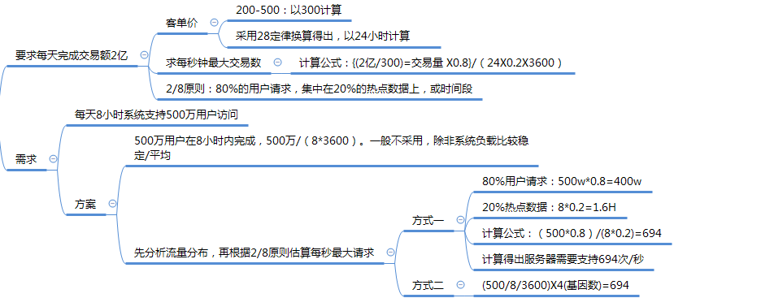</p>
<hr />
<h1 id="26-">26 个人-公司-项目问题<a class="headerlink" href="#26-" title="Permanent link">&para;</a></h1>
<h2 id="261">26.1 人员简称<a class="headerlink" href="#261" title="Permanent link">&para;</a></h2>
<p>RD – Research &amp; Develop 研发工程师</p>
<p>FE – Front End 前端工程师</p>
<p>BE – Back End 后端工程师</p>
<p>QA – Quality Assurance测试工程师</p>
<p>DBA – Database Administrator 数据库</p>
<p>PM – Product &amp; Marketing 产品经理</p>
<p>TS – Technology Support 技术支持</p>
<p>OP – Operation 运维工程师</p>
<p>UE(UX) – User Experience 用户体验设计师</p>
<p>UI – User Interface 用户界面设计师</p>
<p>UER – User Experience Research 用户研究</p>
<p>SYS – System</p>
<p>SCM – Software Configuration Management</p>
<p>FM – Facility Managemen</p>
<h2 id="262">26.2 说下你第一个项目里遇见的问题<a class="headerlink" href="#262" title="Permanent link">&para;</a></h2>
<p>回答参照bug面试题中的常见的问题 和比较棘手的问题，还有难以复现的问题</p>
<h2 id="263">26.3 多少人开发多长时间测试多长时间<a class="headerlink" href="#263" title="Permanent link">&para;</a></h2>
<p>后台开发：  6人，前端开发 h5： 3人， Android开发 2人， IOS开发   2人，UI      2人，产品      1人，项目经理    1人， 测试     4人</p>
<p>回答这个问题大体上按照这个比例去回答，记住你测试组具体有多少人，再记住和你配合的前端 后台 及移动端开发人员有多少</p>
<p>开发时间：小型项目1-2月 中性项目3个月左右 中大型项目3-6个月，甚至更长 项目迭代一周或者两周更新一版</p>
<p>测试时间：测试人员全程跟进项目开发过程，包括最初的需求提交及评审到最后的项目发布，贯穿整个过程.其中一半以上的时间都在准备测试阶段，熟悉需求文档，产品原型，书写测试计划，功能测试用例 接口测试用例 性能测试用例等，到执行测试的时候20%时间进行接口测试，60%时间进行功能测试，20%时间进行性能测试</p>
<h2 id="264">26.4 项目职责与分工<a class="headerlink" href="#264" title="Permanent link">&para;</a></h2>
<p>1、产品经理 ------&gt; 负责设计产品的原型图和PRD。</p>
<p>2、项目经理 ------&gt;负责并保证高质量的产品按时完成和发布的专职管理人员。</p>
<p>3、开发人员 ------&gt; 负责完成公司新产品开发计划；开发人员主要分为 前端开发、</p>
<p>后端开发、IOS开发和安卓开发。</p>
<p>4、配管 ------&gt; 主要负责线下测试环境的搭建，测试环境包括 开发环境，测试环境，</p>
<p>Staging环境(细讲)，还有就是代码库的管理和jar包管理，保证线下服务正常提供。</p>
<p>5、运维人员 ------&gt; 负责维护生产环境的稳定，测试环境的包正常上线等等。</p>
<p>6、测试人员 ------&gt; 负责保证发布出去的产品达到了一定的质量标准。测试分为功能</p>
<p>测试、性能测试、测试开发(包含自动化测试)</p>
<h2 id="265">26.5 测试人员主要工作<a class="headerlink" href="#265" title="Permanent link">&para;</a></h2>
<h3 id="_2">熟悉业务；<a class="headerlink" href="#_2" title="Permanent link">&para;</a></h3>
<p>1.熟悉当前负责模块的业务；</p>
<p>2.熟悉测试的模块的表结构、数据流走向；</p>
<p>3.熟悉相关业务的架构；</p>
<p>4.了解业务上线的流程；</p>
<p>5.熟悉功能所属项目以及相关工作人员（开发、产品等）；</p>
<h3 id="_3">制定测试计划；<a class="headerlink" href="#_3" title="Permanent link">&para;</a></h3>
<p>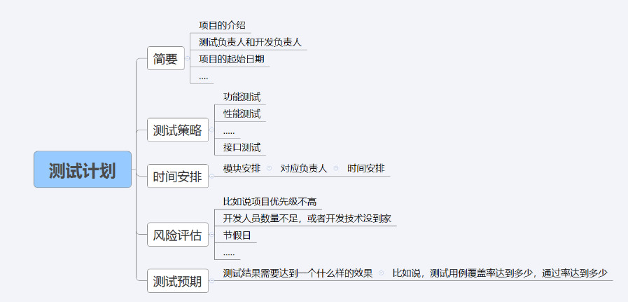</p>
<h3 id="_4">设计测试用例；<a class="headerlink" href="#_4" title="Permanent link">&para;</a></h3>
<p>1、根据产品的RPD，提取测试点。</p>
<p>2、根据数据流的走向。</p>
<p>3、根据的架构部署。</p>
<p>4、编写测试用例的常用方法：等价类划分法、边界值分析法、流程图法等。</p>
<p>5、覆盖弱网测试、接口测试、安全测试、性能测试等。</p>
<p>6、常用测试工具有：Postman、 Charles、 Fiddler 、Jemter、Loadrunner等</p>
<p>4、bug管理</p>
<p>Bug定义：</p>
<p>1、不符合需求的</p>
<p>2、程序本身的报错</p>
<p>3、不符合用户使用习惯的</p>
<p>Bug生命周期：</p>
<p>当我们测试人员提交一个bug的时候，自始bug就有它的生命周期，从开始到</p>
<p>结束，生命周期如下：</p>
<p>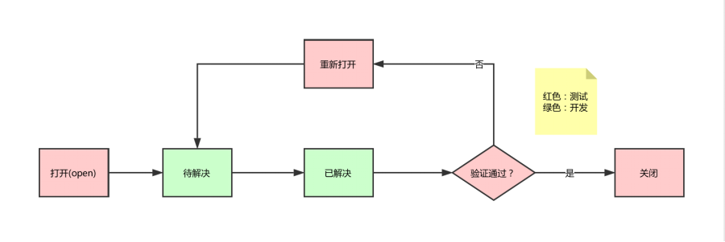</p>
<h2 id="266-bug">26.6 Bug单内容<a class="headerlink" href="#266-bug" title="Permanent link">&para;</a></h2>
<p>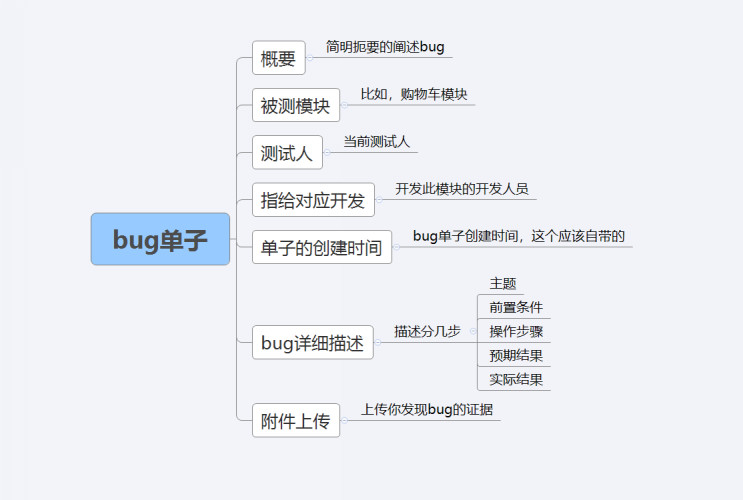</p>
<h2 id="267">26.7 编写测试报告<a class="headerlink" href="#267" title="Permanent link">&para;</a></h2>
<p>把测试的过程和结果写成文档，对发现的问题和缺陷进行分析，为纠正软件的存在的</p>
<p>质量问题提供依据，同时为软件验收和交付打下基础测试报告和测试计划一样，一般</p>
<p>由测试leader编写，测试人员需要了解一下测试报告中都有哪些内容，大致内容如下：</p>
<p></p>
<h2 id="268">26.8 编写上线发布单<a class="headerlink" href="#268" title="Permanent link">&para;</a></h2>
<p>测试人员写完测试报告，根据上线标准确定项目能否上线。如果达到上线标准，</p>
<p>编写上线发布单，准备上线，上线发布单内容如下：</p>
<p>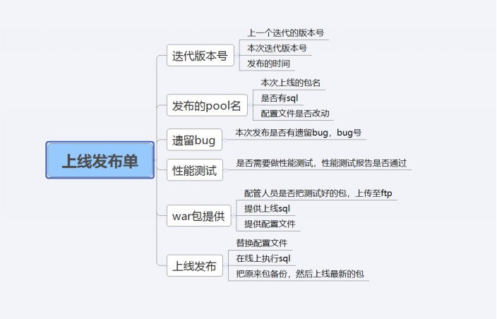</p>
<h2 id="269">26.9 测试发布流程<a class="headerlink" href="#269" title="Permanent link">&para;</a></h2>
<p>测试发布的流程，跟我们的测试环境有关，测试环境的搭建又跟代码结</p>
<p>构息息相关的。主要流程如下：</p>
<p>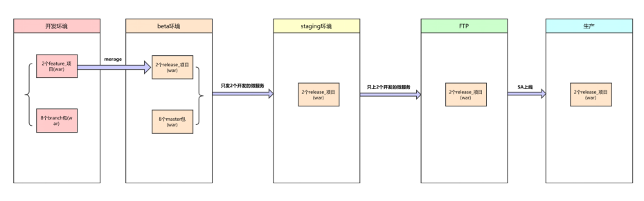</p>
<p>发布到生产之后，测试人员应该做简单的验证，验证的内容根据本次迭代的需求来定。</p>
<p></p>
<h2 id="2610">26.10 你们项目做了多久，共写了多少用例？项目多少人?<a class="headerlink" href="#2610" title="Permanent link">&para;</a></h2>
<p>项目做了多久：（两种回答，建议选择第一种）</p>
<p>1我进去的时候项目已经上线了，一直存在，然后就是版本的微小更新，小修改的话，大概半个月一个版本，中修改的话，大概一个月一个版本。每次版本更新，针对新的功能点或者修改点大概写了60条案例左右（一个月一个版本的例子）。 </p>
<p>2 我进去的时候，一开始就参与这个项目（也就是需求分析开始），项目从零到有进行了半年左右，六个月内大概整个项目组写了900条案例左右。自己写了200条左右(共5个测试，包括组长)。我么领导要求测试用例不要写的很细，节约时间，当然很详细了写我一天写个五六百条都没有问题</p>
<p>如果大家说自己是从零到有参与的项目，那么6个月时间是从需求分析开始。需求书编写完成前，产品经理他们是要做很多前期准备工作，可能要花费3个月左右的时间。</p>
<p>那么测试6个月的实际工作时间内：</p>
<p>前期2个月：刚开始需求书的漏洞比较多，需求评审比较多，基本上每个星期一次评审。开发和测试都会参与，此时开发在进行代码设计，测试就在分析需求，看参考文档，用xmind梳理测试场景，提取测试点，开发经常和产品经理讨论需求，测试经常问开发和产品经理有关需求的疑问。大家一直碰撞，一步一步得出比较完美的逻辑。</p>
<p>中间2个月：开发设计完后，进行编码，我们测试就根据之前梳理的测试场景来编写案例，进一步优化。这个期间，需求书基本稳定，不会再改了。要改也就是把细化需求，把笼统的地方，描述的更详细，更让人易懂，功能点的大方向不会改。开发和测试在此期间有疑问，都会邮件或者电话联系产品经理。测试也会经常去问开发有关功能点的逻辑问题。</p>
<p>后面2个月： 执行案例工作开始进行，一般分为两轮st测试，第一轮1个月，第二轮半个月，回归测试半个月。Uat测试组在st测试第二轮时候，并行开始。Uat测试组有专门人负责，一般需要st测试组派一个人左右去支持，uat测试也有第一轮（半个月），第二轮（半个月）。</p>
<p>项目多少人：一个公司往往有很多项目，自己只是其中一个项目组的，我的P2P项目组大概20人，开发</p>
<p>15个，测试5个。（大家把自己当成外包人员，在甲方工作，也叫驻场工作）</p>
<h2 id="2611-p2p">26.11 知不知道P2P贷款流程，贷前、贷中、贷后是怎样的，数据流是怎样的<a class="headerlink" href="#2611-p2p" title="Permanent link">&para;</a></h2>
<p>1 参考《乐科_P2P业务问题.doc》的p2p风控闭环。</p>
<p>2 数据流就是讲解一个借款产品的发布，购买，每月还款的一个业务流程。 </p>
<p>假如要你测试6个月期限的p2p借款产品，你应该怎么设计案例，说出测试点</p>
<p>假如要你测试6个月期限的p2p借款产品，你应该怎么设计案例，说出测试点</p>
<p>（回答思路：1站在用户的角度测试，用户怎么用，你就怎么测试。2 一个人扮演多种角色测试。 3多想出一些异常场景。）</p>
<p>1 借款产品投标结束日T+7时，满标和不满标的情况。</p>
<p>2 借款产品投标结束日T+7前，产品提前满标情况</p>
<p>3 产品成立后，每个月还款日前，检查系统有没有发出邮件，短信，站内信通知借款人充值到平台账户。</p>
<p>4 在每月还款日，借款人充值用来还款时，充值资金足够、不足够、不充值情况，查看系统如何处理。充值资金不足或者没有充值时，系统应该有罚息。</p>
<p>5 借款人提前还清余款场景，有些产品不支持提前还款，有些产品要满一定期限才可以提前还款（提前还款有一定手续费）。这些都是要关注的测试点。（自己要扮演借款用户去操作提前还清余款，然后扮演后台管理员去审核，然后又扮演投资人用户去检查虚拟账户的资金到账情况）</p>
<p>6 最后一期借款人还清资金时，去后台页面查看借款产品状态，应该已正常结束。再去前台页面搜索，应该无该借款产品了。 （或者补充说：去数据库里查看此借款产品的状态）</p>
<h1 id="27">27 人资高频率问题<a class="headerlink" href="#27" title="Permanent link">&para;</a></h1>
<p>第一家公司离职原因（同学介绍，年轻出来长见识，公司外派）</p>
<p>2、第二家公司离职原因（经营不善，转型做其他行业，工资福利降低，变相减少原有福利，公司搬迁，个人原因：自身技术感觉不错，想让涨工资，提过N多次，没有到达个人预期）</p>
<p>3、个人规划（技术，管理）</p>
<p>4、期望工资（上家工资相比较，涨幅控制在2000以内，</p>
<p>本公司达不到期望预期，其他福利，房补，车补，饭补，团建，过年费，试用期是按照100%还是80%发放，关于公司调薪制度，多长时间能够调薪）</p>
<p>5、社保（前期不确定在北京待多久，没有要求办理社保，折算为现金发放到个人手中，现在想在北京长期发展，需要知道公司缴纳社保基数，缴纳社保明细）</p>
<p>6、是否接受外派（长期，短期，甲方公司是否有额外待遇）</p>
<p>7、是否接受加班（关于测试加班程度，相比较于开发，没那么狠，之前工作当中加班也是常有的事，可以接受，但是我们公司之前加班是有补助，咱们公司是否有相应补助或者调休）</p>
<p>8、关于之前公司地址（第一家公司，第二家公司，）</p>
<p>9、现居住地（龙泽，回龙观，回龙观东大街，房租多少钱，次卧：2000—2500元。）</p>
<p>10、现在居住地到公司，路线（13号线，昌平线开通时间14年，15号线，14年下半年开通，）</p>
<p>11、上家公司的规模，人员配备，（项目组：8，一个领导，三个开发，2个前端，1个测试，1个UI）</p>
<p>12、关于跳槽的看法（公司不倒，我陪公司到老，忠诚，只要咱们公司有利个人长期发展，前景一片光明）</p>
<p>#社保例子</p>
<p>以10000元为例</p>
<p>#税前工资</p>
<p>没有扣除任何费用的。10000元</p>
<p>#税后工资</p>
<p>扣除五险一金，以及个人所得税</p>
<p>第一种情况：按照最低基数上交五险一金，8700元。</p>
<p>第二种情况：全额上交五险一金：7457元</p>
<p>第三种情况;按照最低基数交五险：9000元</p>
<p>第四种情况：全额交五险：8400元</p>
<p>最新政策：征税点5000元，注意：月中前，月中后交社保问题</p>
<p>#薪资结构</p>
<p>基本工资+绩效工资+福利+表现奖+年终奖</p>
<p>5000 + 5000 = 10000</p>
<p>#学校的时间：</p>
<p>出生年月日： 1989.11.30  </p>
<p>小学： 1997年9月 -- 2002年7月 </p>
<p>中学： 2002年9月 -- 2006年7月 </p>
<p>高中： 2006年9月 -- 2009年7月</p>
<p>大学： 2009年9月 -- 2011年7月</p>
<p>#大学概况：</p>
<p>毕业院校：郑州大学</p>
<p>毕业时间：2011年7月</p>
<p>学院数量：46</p>
<p>学院名称：软件技术学院</p>
<p>专业方向： JAVA方向</p>
<p>学校院系：1、软件技术（JAVA方向、.NET方向）</p>
<p>2、计算机网络技术</p>
<p>3、计算机多媒体技术</p>
<p>4、计算机应用技术</p>
<p>5、计算机信息管理</p>
<p>6、网络系统管理</p>
<hr />
<h1 id="28">28 简历<a class="headerlink" href="#28" title="Permanent link">&para;</a></h1>
<p>#课程内容</p>
<p>简历编写</p>
<p>#简历分类</p>
<p>A、B、C三类简历</p>
<p>1、A类简历</p>
<p>A简历大家要找工作投递这份简历</p>
<p>2、B类简历</p>
<p>重点：对A简历当中项目的介绍，以及应用到的技术进行阐述</p>
<p>3、C类简历</p>
<p>重点：对A简历中，涉及到的公司，以及学校，以及年龄，专注于人资问题阐述</p>
<p>#A简历</p>
<p>个人信息</p>
<p>姓名，性别，年龄，籍贯，电话，邮箱，现居住地</p>
<p>姓名：准备2个名字，</p>
<p>年龄：不要写具体的年月日，就写一个25岁</p>
<p>籍贯：建议写到市为止</p>
<p>电话：北京的号码</p>
<p>邮箱：建议注册网易邮箱，注意：投递简历过程当中，查看垃圾邮箱</p>
<p>注意点：个人信息这个模块，不要写政治面貌</p>
<p>现居住地：北京昌平</p>
<p>求职意向</p>
<p>期望行业：金融/IT/游戏</p>
<p>期望岗位：软件测试工程师</p>
<p>期望地点：北京</p>
<p>期望薪资：12K</p>
<p>入职时间：在职状态（一周以内）</p>
<p>教育经历</p>
<p>2011年9月 —— 2015年7月  XXXX大学  计算机科学与技术（软件工程）  本科</p>
<p>专业技能</p>
<p>1.掌握软件开发周期，熟悉测试流程</p>
<p>2.会灵活应用各种方法编写测试用例</p>
<p>3.对于缺陷管理工具禅道能够熟练应用</p>
<p>4.熟练编写测试计划、测试报告、缺陷报告</p>
<p>5.熟练使用抓包工具charles、接口工具PostMan</p>
<p>6.熟练掌握MySQL数据库的查询操作</p>
<p>7.掌握Linux常用命令，搭建测试环境；</p>
<p>8.掌握移动端测试ADB命令、Monkey测试；</p>
<p>9.熟练应用性能测试工具LoadRunner、Jmeter</p>
<p>10.掌握Python语言，基础语法、集合、面向对象、I\O、多线程、异常</p>
<p>11.掌握自动化测试工具Selenium、Appium；</p>
<p>12.了解如何搭建集成测试环境jenkins</p>
<p>13.掌握SVN\GIT版本管理工具；</p>
<p>工作经历（2家公司）</p>
<p>2016年10月 ——至今  XXXX科技有限公司</p>
<p>2015年9月——2016年9月 XXX科技有限公司</p>
<p>项目介绍</p>
<p>写5个项目：APP端与web端的都要有</p>
<p>2016.08--2018.06项目名称：乐泾达分发平台（Web）</p>
<p>项目职责：1.分析产品需求，设计测试用例，执行测试用例；</p>
<p>2.对产品进行整体功能测试，接口测试，回归测试，兼容性测试；</p>
<p>3.上报bug。通过日志协助开发一起定位分析问题，回归bug；</p>
<p>4.编写测试报告，对反馈的问题及时跟踪；</p>
<p>5.用jmeter等测试工具进行压力接口测试；</p>
<p>项目描述：乐泾达分发平台是为渠道负责人提供的申请做包、分发包、设计需求策略、上传更新配置文件。可以对不同渠道的不同需求快速更改策略，使申请与分发更快捷高效。更好的满足用户需求。</p>
<p>个人评价</p>
<p>1、热爱软件IT行业，具有乐观进取的精神</p>
<p>2、有强烈的责任心，吃苦耐劳能加班</p>
<p>3、有较强团队意识，重视技术积累</p>
<p>4、工作积极主动，抗压能力强，喜欢学习</p>
<p>5、具有一定独立思考能力，对新技术有极高的热情</p>
<p>#项目查找</p>
<p>网站：招聘狗http：//qiye.zhaopingou.com/</p>
<p>注册企业版模块</p>
<p>查询项目，注意项目描述，工作职责</p>
<p>项目：尽可能真实下载客户端，或打开web端，进行实际操作</p>
<p>#B简历（针对技术）</p>
<p>项目名称：乐泾达分发平台（Web）</p>
<p>1、测试用例设计方法，测试用例包含模块，测试用例设计模板</p>
<p>2、接口测试：用什么工具测得</p>
<p>3、通过什么缺陷管理工具进行bug管理</p>
<p>5、jmeter怎么用，执行流程如何操作</p>
<p>，</p>
<p>#C简历</p>
<p>年龄25岁，属狗，94年</p>
<p>现居住地与包装的刚离职的这家公司，上下班时间控制在2小时以内</p>
<p>教育经历：学校地址、专业课程，</p>
<p>公司：公司地址，交通路线，公司规模，人数，项目人数，</p>
<p>​     选公司不建议选外包公司</p>
<p>第一家公司，地址，离职原因，公司规模</p>
<p>#写简历步骤与要求</p>
<p>第一步，先找简历模板</p>
<p>第二步，更改模板当中个人信息，</p>
<p>第三步：登录招聘狗网站，找项目，也可以借鉴之前同学简历中的简历，</p>
<p>​      注意：同组人员，不得项目重复</p>
<p>第四步，小组内部审核简历，重点看项目，专业技能，个人评价，学校，</p>
<p>​      注意：不允许有错别字</p>
<p>第五步，小组审核通过，发给老师，挨个检查批注</p>
<p>#注意：  </p>
<p>1、年龄不小于25，年月日不对，邮箱用163，严禁写关于学历内容</p>
<p>2、薪资为固定值10K。严禁写面议。离职</p>
<p>3、专业技能，不小于10条。</p>
<p>4、公司：两家公司间隔时间不超过2个月，必须有工作内容描述</p>
<p>5、项目的时间不能与两家公司交叉，</p>
<p>6、教育经历，统一本科，暂定15年</p>
<p>7、个人评价，不要写抒情文，分段落描述体现（学习能力，沟通表达能力，抗压能力，第三方技能）</p>
<p>至此，所有面试题已收集完毕，对于文中的面试题如果发现错误或者有更好的回答，请给我发 E-Mail。</p>
<p><em>2023 年 05 月 14日 编辑于东莞</em></p>
<hr />


                
              </article>
            </div>
          
          
        </div>
        
          <button type="button" class="md-top md-icon" data-md-component="top" hidden>
            <svg xmlns="http://www.w3.org/2000/svg" viewBox="0 0 24 24"><path d="M13 20h-2V8l-5.5 5.5-1.42-1.42L12 4.16l7.92 7.92-1.42 1.42L13 8v12Z"/></svg>
            Back to top
          </button>
        
      </main>
      
        <footer class="md-footer">
  
  <div class="md-footer-meta md-typeset">
    <div class="md-footer-meta__inner md-grid">
      <div class="md-copyright">
  
    <div class="md-copyright__highlight">
      Copyright &copy; 2023 - 2099
    </div>
  
  
    Made with
    <a href="https://squidfunk.github.io/mkdocs-material/" target="_blank" rel="noopener">
      Material for MkDocs
    </a>
  
</div>
      
        <div class="md-social">
  
    
    
    
    
    <a href="https://github.com/lyx2099" target="_blank" rel="noopener" title="Visit my github" class="md-social__link">
      <svg xmlns="http://www.w3.org/2000/svg" viewBox="0 0 496 512"><!--! Font Awesome Free 6.4.0 by @fontawesome - https://fontawesome.com License - https://fontawesome.com/license/free (Icons: CC BY 4.0, Fonts: SIL OFL 1.1, Code: MIT License) Copyright 2023 Fonticons, Inc.--><path d="M165.9 397.4c0 2-2.3 3.6-5.2 3.6-3.3.3-5.6-1.3-5.6-3.6 0-2 2.3-3.6 5.2-3.6 3-.3 5.6 1.3 5.6 3.6zm-31.1-4.5c-.7 2 1.3 4.3 4.3 4.9 2.6 1 5.6 0 6.2-2s-1.3-4.3-4.3-5.2c-2.6-.7-5.5.3-6.2 2.3zm44.2-1.7c-2.9.7-4.9 2.6-4.6 4.9.3 2 2.9 3.3 5.9 2.6 2.9-.7 4.9-2.6 4.6-4.6-.3-1.9-3-3.2-5.9-2.9zM244.8 8C106.1 8 0 113.3 0 252c0 110.9 69.8 205.8 169.5 239.2 12.8 2.3 17.3-5.6 17.3-12.1 0-6.2-.3-40.4-.3-61.4 0 0-70 15-84.7-29.8 0 0-11.4-29.1-27.8-36.6 0 0-22.9-15.7 1.6-15.4 0 0 24.9 2 38.6 25.8 21.9 38.6 58.6 27.5 72.9 20.9 2.3-16 8.8-27.1 16-33.7-55.9-6.2-112.3-14.3-112.3-110.5 0-27.5 7.6-41.3 23.6-58.9-2.6-6.5-11.1-33.3 2.6-67.9 20.9-6.5 69 27 69 27 20-5.6 41.5-8.5 62.8-8.5s42.8 2.9 62.8 8.5c0 0 48.1-33.6 69-27 13.7 34.7 5.2 61.4 2.6 67.9 16 17.7 25.8 31.5 25.8 58.9 0 96.5-58.9 104.2-114.8 110.5 9.2 7.9 17 22.9 17 46.4 0 33.7-.3 75.4-.3 83.6 0 6.5 4.6 14.4 17.3 12.1C428.2 457.8 496 362.9 496 252 496 113.3 383.5 8 244.8 8zM97.2 352.9c-1.3 1-1 3.3.7 5.2 1.6 1.6 3.9 2.3 5.2 1 1.3-1 1-3.3-.7-5.2-1.6-1.6-3.9-2.3-5.2-1zm-10.8-8.1c-.7 1.3.3 2.9 2.3 3.9 1.6 1 3.6.7 4.3-.7.7-1.3-.3-2.9-2.3-3.9-2-.6-3.6-.3-4.3.7zm32.4 35.6c-1.6 1.3-1 4.3 1.3 6.2 2.3 2.3 5.2 2.6 6.5 1 1.3-1.3.7-4.3-1.3-6.2-2.2-2.3-5.2-2.6-6.5-1zm-11.4-14.7c-1.6 1-1.6 3.6 0 5.9 1.6 2.3 4.3 3.3 5.6 2.3 1.6-1.3 1.6-3.9 0-6.2-1.4-2.3-4-3.3-5.6-2z"/></svg>
    </a>
  
    
    
    
    
    <a href="https://lyx2099.github.io/WIKI" target="_blank" rel="noopener" title="Visit myblog" class="md-social__link">
      <svg xmlns="http://www.w3.org/2000/svg" viewBox="0 0 448 512"><!--! Font Awesome Free 6.4.0 by @fontawesome - https://fontawesome.com License - https://fontawesome.com/license/free (Icons: CC BY 4.0, Fonts: SIL OFL 1.1, Code: MIT License) Copyright 2023 Fonticons, Inc.--><path d="M94.12 315.1c0 25.9-21.16 47.06-47.06 47.06S0 341 0 315.1c0-25.9 21.16-47.06 47.06-47.06h47.06v47.06zm23.72 0c0-25.9 21.16-47.06 47.06-47.06s47.06 21.16 47.06 47.06v117.84c0 25.9-21.16 47.06-47.06 47.06s-47.06-21.16-47.06-47.06V315.1zm47.06-188.98c-25.9 0-47.06-21.16-47.06-47.06S139 32 164.9 32s47.06 21.16 47.06 47.06v47.06H164.9zm0 23.72c25.9 0 47.06 21.16 47.06 47.06s-21.16 47.06-47.06 47.06H47.06C21.16 243.96 0 222.8 0 196.9s21.16-47.06 47.06-47.06H164.9zm188.98 47.06c0-25.9 21.16-47.06 47.06-47.06 25.9 0 47.06 21.16 47.06 47.06s-21.16 47.06-47.06 47.06h-47.06V196.9zm-23.72 0c0 25.9-21.16 47.06-47.06 47.06-25.9 0-47.06-21.16-47.06-47.06V79.06c0-25.9 21.16-47.06 47.06-47.06 25.9 0 47.06 21.16 47.06 47.06V196.9zM283.1 385.88c25.9 0 47.06 21.16 47.06 47.06 0 25.9-21.16 47.06-47.06 47.06-25.9 0-47.06-21.16-47.06-47.06v-47.06h47.06zm0-23.72c-25.9 0-47.06-21.16-47.06-47.06 0-25.9 21.16-47.06 47.06-47.06h117.84c25.9 0 47.06 21.16 47.06 47.06 0 25.9-21.16 47.06-47.06 47.06H283.1z"/></svg>
    </a>
  
    
    
    
    
    <a href="mailto:leeyx0913@foxmail.com" target="_blank" rel="noopener" title="Email me" class="md-social__link">
      <svg xmlns="http://www.w3.org/2000/svg" viewBox="0 0 512 512"><!--! Font Awesome Free 6.4.0 by @fontawesome - https://fontawesome.com License - https://fontawesome.com/license/free (Icons: CC BY 4.0, Fonts: SIL OFL 1.1, Code: MIT License) Copyright 2023 Fonticons, Inc.--><path d="M498.1 5.6c10.1 7 15.4 19.1 13.5 31.2l-64 416c-1.5 9.7-7.4 18.2-16 23s-18.9 5.4-28 1.6L284 427.7l-68.5 74.1c-8.9 9.7-22.9 12.9-35.2 8.1S160 493.2 160 480v-83.6c0-4 1.5-7.8 4.2-10.7l167.6-182.9c5.8-6.3 5.6-16-.4-22s-15.7-6.4-22-.7L106 360.8l-88.3-44.2C7.1 311.3.3 300.7 0 288.9s5.9-22.8 16.1-28.7l448-256c10.7-6.1 23.9-5.5 34 1.4z"/></svg>
    </a>
  
</div>
      
    </div>
  </div>
</footer>
      
    </div>
    <div class="md-dialog" data-md-component="dialog">
      <div class="md-dialog__inner md-typeset"></div>
    </div>
    
    <script id="__config" type="application/json">{"base": "../../..", "features": ["navigation.tracking", "navigation.tabs", "navigation.expand", "navigation.indexes", "toc.integrate", "toc.follow", "navigation.top", "header.autohide", "search.share", "search.suggest", "search.highlight", "navigation.instant", "navigation.path", "content.code.copy", "content.code.select", "content.code.annotate"], "search": "../../../assets/javascripts/workers/search.208ed371.min.js", "translations": {"clipboard.copied": "Copied to clipboard", "clipboard.copy": "Copy to clipboard", "search.result.more.one": "1 more on this page", "search.result.more.other": "# more on this page", "search.result.none": "No matching documents", "search.result.one": "1 matching document", "search.result.other": "# matching documents", "search.result.placeholder": "Type to start searching", "search.result.term.missing": "Missing", "select.version": "Select version"}}</script>
    
    
      <script src="../../../assets/javascripts/bundle.fac441b0.min.js"></script>
      
        <script src="//cdn.staticaly.com/gh/codeslive/cdn@main/js/busuanzi.pure.mini.js"></script>
      
        <script src="//cdn.staticaly.com/gh/codeslive/cdn@main/js/imageszoom.js"></script>
      
    
  </body>
</html>